| Issue Name | Timeline | Severity Level (2025) | Primary Locations | Origins/Root Causes | Groups/Actors Involved | Current Status (2025) | Impact & Mitigation |
|---|---|---|---|---|---|---|---|
| Left-Wing Extremism | |||||||
| Naxalite-Maoist Insurgency | Began 1967; peaked 2004–2010; ongoing with reduced intensity | Declining (Low Intensity) | Chhattisgarh (Bastar, Dantewada, Sukma, Bijapur), Jharkhand (Latehar, Palamu), Odisha (Koraput, Malkangiri), Bihar (Gaya), Maharashtra (Gadchiroli) |
- 1967 Naxalbari uprising: Sparked by land reforms failure in West Bengal. - Socio-economic disparities: Tribal land alienation, poverty, unemployment in Red Corridor. - Ideological push: Maoist revolution against state; fueled by mining projects displacing tribals. - Historical context: Merger of CPI(Marxist-Leninist) factions into CPI(Maoist) in 2004. |
- Non-state actors: CPI(Maoist), People’s Liberation Guerrilla Army (PLGA), Jan Militia. - External links: Limited coordination with Nepal Maoists; no major foreign state support. - State actors: CRPF (80,000 personnel), COBRA (10 battalions), state police, Greyhounds (Andhra Pradesh). - Past actors: Salwa Judum (2005–2011, disbanded after Supreme Court ruling). |
- Incident metrics: 374 incidents in 2024 (SATP), down 40% from 2015 peak (1,168 incidents). - Casualties: 152 deaths in 2024 (68 civilians, 44 security, 40 Maoists). - Major operation: KGH encounter (May 2025, Chhattisgarh) killed 31 Maoists, including 3 senior leaders. - Cadre strength: ~5,000 active cadres; 718 surrenders in Jan-Apr 2025. - Geographic spread: Affected districts reduced to 12 most-affected (from 126 in 2010); 90 total districts. - Recent event: Maoists disrupted 5G tower installations in Bastar (Jun 2025). |
- Human Impact: 152 deaths (2024: 68 civilians, 44 security, 40 Maoists); ~10,000 total deaths since 2000; 100,000 displaced tribals. - Economic Impact: ~$2B annual loss due to disrupted mining, infrastructure delays. - Social Impact: Fear in rural areas; disrupted education (200+ schools destroyed since 2010). - Mitigation: - SAMADHAN strategy (2017): Security, development, rights-based approach. - Operation Prahar and Kagar: Targeted strikes; 200+ Maoists neutralized (2023–2025). - Development initiatives: 14,469 km roads, 7,768 telecom towers in Red Corridor (MoHA, 2025). - Legal measures: UAPA (1967) for arrests; Chhattisgarh Special Public Security Act (2005). - Policy: ₹1,000 Cr tribal welfare funds (2024); Eklavya Model Schools for education. - Goal: Eradication by Mar 2026 (per Home Minister Shah, 2024). |
| Terrorism (J&K and Cross-Border) | |||||||
| Jammu & Kashmir Militancy | Began 1989; peaked 1990s–2000s; resurgence post-2019 Article 370 abrogation | Active (High Intensity) | J&K (Anantnag, Pulwama, Shopian, Rajouri, Poonch) |
- 1989 separatist movement: Sparked by disputed status post-1947 accession. - Political alienation: Rigged 1987 elections, lack of autonomy. - External support: Pakistan’s ISI-backed infiltration, radicalization via mosques. - Post-2019: Article 370 revocation fueled local unrest, increased recruitment. |
- Non-state actors: Lashkar-e-Taiba (LeT), Jaish-e-Mohammed (JeM), Hizbul Mujahideen (HM), The Resistance Front (TRF). - External actors: Pakistan’s ISI, Al-Qaeda affiliates; training camps in PoK. - State actors: Indian Army (Rashtriya Rifles), CRPF, J&K Police, BSF. - Local actors: Overground workers (OGWs) aiding logistics, intelligence. |
- Casualty trends: 100% rise in soldier deaths (Q1 2022 vs 2021, SATP); 45 active militants (2025). - Major attacks: Pahalgam attack (Apr 2025, 26 civilians killed); Rajouri ambush (Jul 2025, 3 soldiers killed). - Infiltration: 120 attempts (2024, MoHA); 50% foiled by LoC fencing. - Neutralizations: 15 TRF cadres killed (2024–2025); 200 OGWs arrested. - Recent event: Drone-based IED drops detected in Poonch (Aug 2025). |
- Human Impact: 200 deaths (2024: 90 civilians, 60 security, 50 militants); 29 in India-Pak clash (Jan 2025). - Economic Impact: $1.5B tourism loss (2024); trade disruptions along LoC. - Social Impact: 50,000 displaced in border areas; 1,000+ local youth recruited since 2019. - Mitigation: - Operations Sindoor/Mahadev: Neutralized 100+ militants (2023–2025). - Legal measures: UAPA, PSA (J&K); 500 detentions (2024). - Development initiatives: ₹28,400 Cr PMDP (2015–2025); 50,000 jobs created. - Diplomacy: India-Pak ceasefire (2021) under strain; FATF pressure on Pakistan. - Technology: AI-based surveillance, drone countermeasures along LoC. |
| Khalistan Movement | Active 1980s–1990s; peaked 1984–1993; low-level revival post-2014 | Declining (Low Intensity) | Punjab, Haryana, Delhi; diaspora in Canada, UK |
- 1970s origin: Demand for separate Sikh state; fueled by Operation Blue Star (1984). - Historical triggers: Anti-Sikh riots (1984), agrarian distress, unemployment. - Revival post-2014: Diaspora funding, social media propaganda. - External support: Canada/UK-based groups (e.g., Sikhs for Justice). |
- Non-state actors: Khalistan Liberation Force (KLF), Babbar Khalsa, ISYF. - External actors: Sikhs for Justice (SFJ, banned 2019), Pakistan’s ISI (alleged). - State actors: Punjab Police, NIA, RAW. - Diaspora: Canada-based operatives (e.g., Hardeep Nijjar, killed 2023). |
- Incidents: 3 targeted killings (2024: Sikh leaders); 10 KLF arrests (2025). - Terror activities: 5 bomb threats in Punjab (Feb 2025); 20 IEDs recovered. - Funding: $10M traced to Canada (2024); SFJ banned under UAPA. - Recent event: Amritsar graffiti campaign (Jun 2025) promoting referendum. |
- Human Impact: ~20 deaths since 2014; 21,000 deaths in 1980s–1990s. - Economic Impact: $100M diaspora funding disrupted; minor trade impacts. - Social Impact: Polarization in Punjab; 5,000 youth monitored for radicalization. - Mitigation: - Operation Silence (2023–2025): 50+ arrests; 10 terror modules busted. - Legal measures: UAPA, NSA; SFJ ban upheld (2024). - Development initiatives: ₹10,000 Cr for Punjab agriculture (2024–2025). - Diplomacy: India-Canada tensions over SFJ; FATF scrutiny. - Community efforts: Deradicalization via SGPC, Akal Takht. |
| Northeast Insurgencies | |||||||
| Naga Insurgency | Began 1950s; peaked 1980s–1990s; ceasefire since 1997 | Declining (Low Intensity) | Nagaland, Manipur, Arunachal Pradesh, Assam |
- 1950s origin: Demand for independent Nagalim; rooted in Naga ethnic identity. - Historical grievances: Neglect by central government, AFSPA resentment. - Post-1997: Ceasefire agreements with NSCN factions; sovereignty disputes persist. - External support: Myanmar-based camps; minor China links (alleged). |
- Non-state actors: NSCN-IM, NSCN-K (splinters: Khaplang, Konyak). - External actors: Myanmar-based training; limited foreign arms supply. - State actors: Indian Army, Assam Rifles, Nagaland Police. - Mediators: Naga Hoho, Church groups. |
- Ceasefire status: Extended (2023); 8 police killed in Manipur ambush (Apr 2025). - Surrenders: 20 NSCN cadres surrendered (2024); 10 extortion cases reported. - Peace talks: Stalled over NSCN-IM’s demand for separate flag/constitution. - Recent event: NSCN-K attack on Assam Rifles convoy (Jul 2025, 2 injured). |
- Human Impact: ~50 deaths annually (2020–2024); 20,000 deaths since 1950s. - Economic Impact: $500M loss due to extortion, trade disruptions. - Social Impact: 10,000 displaced; ethnic tensions (Naga-Kuki clashes). - Mitigation: - Framework Agreement (2015): Ongoing Indo-Naga talks. - Legal measures: Ceasefire Ground Rules; UAPA for violators. - Development initiatives: ₹2,000 Cr NERLP; 5,000 km roads, 50 schools in Nagaland. - Policy: AFSPA partially lifted (2022, Nagaland). - Community efforts: Naga Peace Accord dialogues with tribal leaders. |
| ULFA Insurgency | Began 1979; peaked 1990s; split post-2011 | Declining (Medium Intensity) | Assam, Arunachal Pradesh, Myanmar border |
- 1979 origin: Demand for independent Assam; anti-immigration sentiment (Bangladeshi influx). - Causes: Economic exploitation, tea industry control, unemployment. - Post-2011 split: Pro-talks ULFA vs anti-talks ULFA-I (Paresh Baruah). - External support: Myanmar camps; China’s small arms supply (alleged). |
- Non-state actors: ULFA-I (Paresh Baruah), ULFA (pro-talks). - External actors: Myanmar’s Sagaing camps; NSCN-K coordination. - State actors: Indian Army, Assam Police, CRPF. - Mediators: PCPI (civil society group). |
- Incidents: 3 ULFA-I cadres killed in drone strikes (Jul 2025, Myanmar border). - Operational bases: 15 camps in Sagaing; 5 bombings (2024, Assam). - Peace progress: 80% activity drop post-2020; pro-talks ULFA signed peace deal (Dec 2023). - Recent event: ULFA-I claimed Dibrugarh blast (Aug 2025, 3 injured). |
- Human Impact: 20 deaths (2024); 15,000 deaths since 1979. - Economic Impact: $200M trade loss; tea industry disruptions. - Social Impact: 5,000 displaced; Assamese-Bengali tensions. - Mitigation: - Bodo Accord (2020): Model for ULFA talks. - Operations: Joint India-Myanmar ops; 10 camps destroyed (2024–2025). - Development initiatives: ₹1.5 Lakh Cr Act East Policy; 2,000 km roads, 20 industrial parks. - Legal measures: UAPA; Assam Disturbed Areas Act. - Diplomacy: India-Myanmar border agreement (2024). |
| Bodo Insurgency | Active 1980s–2020; peaked 1990s; resolved post-2020 | Resolved (Low Residual) | Assam (Bodoland Territorial Region) |
- 1980s origin: Demand for separate Bodoland; Bodo ethnic autonomy. - Causes: Land disputes, marginalization by Assamese majority. - Resolution: 2020 Bodo Accord; earlier accords (1993, 2003) failed. - External support: Minor Myanmar-based support in 1990s. |
- Non-state actors: NDFB (Songbijit, Ranjan factions, disbanded). - State actors: CRPF, Assam Police, BSF. - Mediators: ABSU, Bodo civil society. |
- Peace progress: Bodo Accord (Jan 2020); 1,500 cadres surrendered (2020–2024). - Residual violence: 5 NDFB-S cadres killed (Aug 2025, splinter attack). - Current state: No major incidents; occasional extortion by ex-cadres. - Recent event: BTC elections (Apr 2025) peaceful. |
- Human Impact: ~100 deaths since 2020; 4,000 deaths in 1990s. - Economic Impact: $100M loss (pre-2020); BTC now stable. - Social Impact: 50,000 rehabilitated; Bodo-Assamese harmony improved. - Mitigation: - Bodo Accord (2020): BTC autonomy, ₹1,500 Cr package. - Legal measures: UAPA for splinter groups; AFSPA lifted (2020). - Development initiatives: 1,000 schools, 5,000 jobs in Bodoland. - Community efforts: ABSU-led reconciliation; cultural festivals. |
| Communal and Social Conflicts | |||||||
| Communal Riots | Ongoing since 1947; peaked 1992–1993; surge 2024–2025 | Escalating (Medium Intensity) | Maharashtra (Nagpur, Mumbai), West Bengal (Murshidabad), UP (Meerut, Ayodhya), Gujarat, MP |
- 1947 partition: Rooted in Hindu-Muslim tensions post-independence. - Triggers: Political polarization, social media misinformation, economic disparities. - Recent catalysts: Ram Mandir inauguration (2024), Waqf Act disputes, cow vigilantism. - 2024–2025 surge: Polarized elections, UCC debates. |
- Non-state actors: Hindu groups (VHP, Bajrang Dal, RSS affiliates), Muslim mobs. - External actors: Social media platforms (WhatsApp, X) amplifying rumors. - State actors: RAF, state police, NIA for investigations. - Others: Local political leaders inciting violence. |
- Incident metrics: 84% rise (59 incidents in 2024 vs 32 in 2023, NCM). - Major incidents: Nagpur violence (Mar 2025, Aurangzeb tomb protest, 10 killed); Murshidabad (Apr 2025, Waqf Act protests, 5 killed). - Enforcement: 200 arrests in UP riots (Feb 2025); 15 X accounts suspended. - Recent event: Meerut clashes over mosque survey (Jul 2025, 3 injured). |
- Human Impact: 13 deaths (2024: 10 Muslims, 3 Hindus); 1,000 injured. - Economic Impact: ₹500 Cr property damage; trade disrupted in 10 cities. - Social Impact: 5,000 displaced; communal polarization in 20 districts. - Mitigation: - Legal measures: IPC Sections 153A, 295A; UAPA for organizers. - Policy: NCM peace committees; 500+ mohalla meetings. - Technology: Social media monitoring (IT Act 2000); 1,000 fake posts removed. - Community efforts: Interfaith dialogues; ₹100 Cr for riot-affected rehabilitation. - Challenges: Bulldozer justice criticized as extrajudicial. |
| Caste-Based Violence | Ongoing since independence; peaked 1990s; sporadic 2020s | Active (Medium Intensity) | Uttar Pradesh, Bihar, Rajasthan, Tamil Nadu, Haryana |
- Caste hierarchy: Rooted in Dalit-upper caste tensions. - Triggers: Land disputes, social discrimination, reservation protests. - Specific issues: Atrocities against Dalits, inter-caste marriages, cow vigilantism. - Recent surge: 2024–2025 rise due to social media amplification, political mobilization. |
- Non-state actors: Upper-caste vigilante groups, Dalit organizations (e.g., Bhim Army). - External actors: Limited; some diaspora funding for Dalit activism. - State actors: State police, NCSC, NHRC. - Others: Political parties (BSP, BJP) influencing narratives. |
- Incident metrics: 47,000 atrocities reported (2024, NCRB); 10% rise from 2023. - Major incidents: Hathras rape case (2020) aftermath; 5 Dalit killings (2025, UP). - Enforcement: 200 arrests in Rajasthan clashes (Mar 2025, caste rally). - Recent event: Tamil Nadu honor killing (Jun 2025, inter-caste couple). |
- Human Impact: 50 deaths (2024); 1,000 injured; 5,000 displaced. - Economic Impact: $50M local trade loss; rural boycotts. - Social Impact: Deepened caste divide; 10,000 Dalit protests (2024). - Mitigation: - Legal measures: SC/ST (Prevention of Atrocities) Act 1989; 5,000 convictions. - Policy: NCSC investigations; ₹500 Cr Dalit welfare funds. - Community efforts: Ambedkarite campaigns; 1,000 awareness programs. - Challenges: Slow judicial process; political interference. |
| Emerging Threats | |||||||
| Cyber Threats to Internal Security | Began 2000s; escalated post-2020 digital boom | Active (High Intensity) | Pan-India; hotspots: Delhi, Mumbai, Bengaluru, Hyderabad |
- Digital growth: Driven by 1B internet users (2025). - Geopolitical rivalries: China, Pakistan targeting critical infrastructure. - Triggers: State-sponsored attacks, financial scams, data breaches. - External actors: China’s APT10, Pakistan’s Transparent Tribe; dark web markets. |
- Non-state actors: Cybercriminals (e.g., Jasim Ansari gang), hacktivists. - External actors: China’s APT10, Pakistan’s Transparent Tribe, North Korean Lazarus. - State actors: CERT-In, NCIIPC, Cyber Crime Coordination Centre (I4C). - Others: Private firms (TCS, Infosys) aiding cybersecurity. |
- Incident metrics: 50+ govt website attacks (2025); 1,200 cybercrimes (Jan-Jun 2025). - Major incidents: DDoS during Op Sindoor (Feb 2025); AIIMS data breach (Mar 2025, 10M records). - Cybercrime trends: 500 ransomware cases (2024); $10M extortion reported. - Recent event: 40 internet shutdowns (2024) to curb misinformation. |
- Human Impact: 2M affected by data breaches (2024). - Economic Impact: $5B loss (2024); banking sector hit hardest. - Social Impact: Public trust erosion; 10,000 fraud complaints. - Mitigation: - Legal measures: DPDP Act 2023; IT Act 2000; 1,000 arrests (2024). - Policy: National Cyber Security Policy 2013; NCIIPC upgradation. - Technology: AI-based threat detection; 500 cyber cells established. - Diplomacy: India-US CERT MoU; Quad cyber framework. - Challenges: Skill shortage (1M cybersecurity jobs vacant). |
| Organized Crime (Drug Trafficking) | Ongoing since 1980s; escalated post-2010 | Active (Medium Intensity) | Punjab, Manipur, Mumbai, Delhi, Gujarat (Mundra port) |
- Geographic proximity: India’s location near Golden Crescent/Triangle. - Causes: Unemployment, porous borders (Pakistan, Myanmar), corruption. - Triggers: Global drug demand, cartel infiltration (e.g., Mexico’s Sinaloa). - Recent trends: Surge in synthetic drugs (methamphetamine, fentanyl). |
- Non-state actors: Punjab drug syndicates, Northeast cartels, D-Company. - External actors: Pakistan-based smugglers, Myanmar’s Shan State cartels. - State actors: NCB, DRI, BSF, Assam Rifles. - Others: Local politicians (alleged nexus). |
- Seizures: 10,000 kg drugs seized (2024, NCB); 500 kg meth in Manipur (2025). - Major incidents: Mundra port seizure (2021, 3,000 kg heroin); 50 arrests (2025). - Recent event: Punjab-Mexico cartel link busted (Jun 2025, 200 kg fentanyl). - Enforcement: 1,000 NDPS cases filed (2024). |
- Human Impact: 1M addicts in Punjab; 50 deaths (2024 overdoses). - Economic Impact: $1B black market; $500M laundering traced. - Social Impact: Youth addiction; 10,000 families affected. - Mitigation: - Legal measures: NDPS Act 1985; 2,000 convictions (2024). - Policy: Narco Coordination Centre (NCORD); ₹100 Cr rehab funds. - Operations: Operation Carbon (2024–2025); 20 cartel bases raided. - Diplomacy: India-Pakistan border talks; UNODC cooperation. - Challenges: Corruption, cross-border smuggling. |
| Group Name | Category | Formation Year | Reason for Formation | Major Attacks/Incidents | Current Status (as of Oct 2025) | Affiliations/Links | Special Notes |
|---|---|---|---|---|---|---|---|
| India-Specific Threat Groups | |||||||
| Lashkar-e-Taiba (LeT) | India-Specific (J&K/Pakistan-based) | 1987 |
- Objective: Wage jihad to annex Kashmir to Pakistan. - Ideology: Islamist, inspired by Ahl-e-Hadith; formed by Hafiz Saeed. - Support: Backed by Pakistan’s ISI to destabilize India. - Context: Emerged during Afghan jihad; anti-India focus post-1989 Kashmir insurgency. |
- 2008 Mumbai attacks: 166 killed, coordinated with Indian Mujahideen. - 2016 Pathankot airbase attack: 7 security personnel killed. - 2019 Pulwama attack (affiliate): 40 CRPF personnel killed. - 2025 Pahalgam attack (via TRF): 26 civilians killed in tourist area. |
- Activity Level: Active; ~2,000 operatives (2025 estimate). - Current Operations: Targeted in Operation Sindoor (2025); PoK camps hit by IAF strikes. - Enforcement: Hafiz Saeed under UN sanctions; 50+ operatives arrested in India (2024–2025). - Recent Event: Drone-based weapon drops in Poonch (Aug 2025). |
- Primary Affiliations: Pakistan’s ISI; The Resistance Front (TRF). - Global Links: Al-Qaeda, Taliban; training in PoK camps. - Local Support: Overground workers (OGWs) in J&K. |
UN-designated terrorist group; uses fidayeen (suicide) squads; leverages social media for propaganda; major threat to J&K stability. |
| Jaish-e-Mohammed (JeM) | India-Specific (J&K/Pakistan-based) | 2000 |
- Objective: Establish Islamic rule in Kashmir; anti-India jihad. - Founder: Masood Azhar, released in 1999 IC-814 hijack. - Support: Pakistan’s ISI funding and training. - Context: Splintered from Harkat-ul-Mujahideen; post-1999 focus on high-profile attacks. |
- 2001 Parliament attack: 9 killed, India-Pakistan standoff. - 2016 Uri attack: 19 soldiers killed. - 2019 Pulwama suicide bombing: 40 CRPF personnel killed. - 2025 border clashes: Linked to 29 deaths in India-Pak skirmishes. |
- Activity Level: Active; ~1,500 operatives. - Current Operations: Leader Masood Azhar under house arrest in Pakistan; 2025 IAF strikes hit Bahawalpur camps. - Enforcement: 30 operatives neutralized in J&K (2024–2025). - Recent Event: Attempted attack on Srinagar airport foiled (Jul 2025). |
- Primary Affiliations: Pakistan’s ISI; People’s Anti-Fascist Front (PAFF). - Global Links: Taliban, Al-Qaeda; shared resources with LeT. - Local Support: Recruits radicalized Kashmiri youth. |
UN-designated; known for suicide bombings; Azhar’s speeches incite violence; operates through proxy fronts. |
| Hizbul Mujahideen (HM) | India-Specific (J&K) | 1989 |
- Objective: Kashmir’s accession to Pakistan; Islamist agenda. - Formation: Indigenous Kashmiri group formed during 1989 insurgency. - Causes: Political alienation, rigged 1987 J&K elections. - Support: Pakistan’s ISI for arms and training. |
- 1998 Chamba massacre: 35 Hindus killed. - 2016 Pampore attack: 8 security personnel killed. - 2025 Rajouri ambush: 3 soldiers killed. - Post-2019: Multiple civilian-targeted attacks in Kashmir. |
- Activity Level: Active but weakened; ~45 active militants. - Current Operations: Targeted in 2025 operations; leader Syed Salahuddin in Pakistan. - Enforcement: 20 cadres neutralized (2024–2025); 100 OGWs arrested. - Recent Event: Shopian encounter (Jun 2025, 2 militants killed). |
- Primary Affiliations: Pakistan’s ISI; LeT coordination. - Local Support: Post-Article 370 local recruitment (~1,000 since 2019). |
Largest indigenous Kashmiri group; uses guerrilla tactics; factionalism weakens cohesion. |
| The Resistance Front (TRF) | India-Specific (J&K) | 2019 |
- Objective: Revive militancy in Kashmir post-Article 370 abrogation. - Formation: Proxy group to obscure LeT/HM links. - Causes: Local unrest after 2019; anti-India sentiment. - Support: Pakistan-sponsored; social media propaganda. |
- 2020 Srinagar grenade attacks: 10 civilian casualties. - 2025 Pahalgam attack: 26 civilians killed. - Minority targeting: Attacks on Kashmiri Pandits (2024–2025). |
- Activity Level: Active; US/India-designated terrorist. - Current Operations: 15 cadres neutralized (2024–2025); 50 arrests. - Recent Event: Social media campaign targeting J&K elections (Sep 2025). |
- Primary Affiliations: LeT, HM; Pakistan ISI. - Local Support: Recruits via X platform propaganda. |
Focuses on minority attacks to stoke communal tensions; uses encrypted apps for coordination. |
| Indian Mujahideen (IM) | India-Specific (Other) | 2008 |
- Objective: Wage jihad against India through urban terror. - Formation: Offshoot of SIMI; radicalized Indian youth. - Causes: Perceived anti-Muslim policies; 2002 Gujarat riots. - Support: Pakistan-based training; LeT funding. |
- 2008 Delhi serial blasts: 30 killed. - 2008 Jaipur blasts: 71 killed. - 2010 Pune German Bakery blast: 17 killed. - 2013 Bodh Gaya bombing: 5 injured. |
- Activity Level: Dormant; key leaders (Bhatkal brothers) arrested. - Current Operations: Remnants linked to ISIS modules; 160 arrests (2020–2025). - Recent Event: Delhi module busted (Mar 2025, 5 arrested). |
- Primary Affiliations: LeT, SIMI; Al-Qaeda inspiration. - Global Links: ISIS modules in India. |
Banned under UAPA; urban-focused terror; weakened by NIA crackdowns. |
| CPI(Maoist) | India-Specific (Other) | 2004 |
- Objective: Overthrow Indian state via Maoist revolution. - Formation: Merger of CPI(Marxist-Leninist) and MCC. - Causes: Tribal land alienation, poverty, mining exploitation. - Context: 1967 Naxalbari uprising legacy; Red Corridor focus. |
- 2010 Dantewada ambush: 76 CRPF personnel killed. - 2013 Sukma attack: 25 Congress leaders killed. - 2021 Bijapur attack: 22 security personnel killed. - 2025 KGH encounter: 31 Maoists killed. |
- Activity Level: Declining; ~5,000 cadres. - Current Operations: 374 incidents, 152 deaths (2024, SATP); 718 surrenders (Jan-Apr 2025). - Recent Event: Disrupted 5G tower installations in Bastar (Jun 2025). |
- Primary Affiliations: Limited; Nepal Maoists (past). - Local Support: Tribal militias (Jan Militia, PLGA). |
Banned under UAPA; operates in 90 districts; SAMADHAN strategy targets eradication by Mar 2026. |
| Khalistan Liberation Force (KLF) | India-Specific (Other) | 1986 |
- Objective: Establish separate Sikh state (Khalistan). - Formation: Post-Operation Blue Star (1984); anti-Sikh riots. - Causes: Agrarian distress, unemployment, perceived discrimination. - Support: Diaspora funding (Canada, UK); ISI backing (alleged). |
- 1980s–1990s: 1,000+ attacks; 21,000 deaths. - 2017 Nabha jailbreak: 6 KLF operatives freed. - 2024 targeted killings: 3 Sikh leaders killed. - 2025 bomb threats: 5 incidents in Punjab. |
- Activity Level: Low; ~100 operatives. - Current Operations: 10 arrests (2025); 20 IEDs recovered. - Recent Event: Amritsar graffiti campaign (Jun 2025). |
- Primary Affiliations: Babbar Khalsa, ISYF; Sikhs for Justice (SFJ). - External Support: Canada/UK diaspora; ISI (alleged). |
Revival attempts via social media; SFJ banned under UAPA; India-Canada tensions. |
| Babbar Khalsa International (BKI) | India-Specific (Other) | 1978 |
- Objective: Create independent Khalistan in Punjab. - Formation: Sikh militant group post-1970s demands for autonomy. - Causes: Perceived discrimination against Sikhs; Operation Blue Star (1984). - Support: Diaspora in Canada, UK; alleged ISI links. |
- 1985 Air India Flight 182 bombing: 329 killed. - 1980s Punjab insurgency: Hundreds of attacks. - 2023 Ludhiana court blast: 1 killed. - 2025 Punjab module: 5 arrests for planned attacks. |
- Activity Level: Low but persistent; ~50 operatives. - Current Operations: NIA arrests (2025); diaspora funding traced. - Recent Event: Vancouver consulate threat (Sep 2025). |
- Primary Affiliations: KLF, ISYF; SFJ. - External Support: Canadian Khalistanis; UN-designated. |
Banned under UAPA; involved in transnational plots; key in 1980s Punjab violence. |
| International Sikh Youth Federation (ISYF) | India-Specific (Other) | 1984 |
- Objective: Promote Khalistan through armed struggle. - Formation: Post-Operation Blue Star; youth wing of Sikh militants. - Causes: Anti-Sikh riots (1984); demand for Sikh homeland. - Support: Overseas Sikh diaspora; arms smuggling. |
- 1980s assassinations: Targeted Indian officials. - 1991 Punjab bombings: Multiple civilian deaths. - 2024 Amritsar plot: IED recovery. - 2025 diaspora threats: Calls for violence against Indian missions. |
- Activity Level: Declining; ~200 members globally. - Current Operations: 15 arrests in Punjab (2025); social media monitoring. - Recent Event: SFJ-linked rally in UK (Aug 2025). |
- Primary Affiliations: BKI, KLF; SFJ. - External Support: UK/Canada-based funding. |
Banned under UAPA; focuses on youth radicalization; UN-designated since 2001. |
| National Socialist Council of Nagaland (NSCN-IM) | India-Specific (Northeast) | 1980 |
- Objective: Independent Nagalim for Naga tribes. - Formation: Split from NNC; ethnic identity focus. - Causes: Historical neglect, AFSPA resentment. - Support: Myanmar-based camps; minor China links (alleged). |
- 1997 Kohima bombing: 10 killed. - 2015 Manipur ambush: 18 soldiers killed. - 2025 Manipur ambush: 8 police killed. - Extortion rackets in Nagaland. |
- Activity Level: Declining; ceasefire since 1997. - Current Operations: 20 cadres surrendered (2024); talks stalled. - Recent Event: Attack on Assam Rifles (Jul 2025, 2 injured). |
- Primary Affiliations: NSCN-K factions; Myanmar groups. - Local Support: Naga tribes, Naga Hoho. |
Framework Agreement (2015); demands separate flag/constitution; AFSPA partially lifted. |
| United Liberation Front of Asom (ULFA-I) | India-Specific (Northeast) | 1979 |
- Objective: Independent Assam; anti-immigration. - Formation: Response to Bangladeshi influx, economic exploitation. - Causes: Unemployment, tea industry control. - Support: Myanmar camps; China arms (alleged). |
- 1990s bombings: 100+ civilian deaths. - 2004 Dhemaji blast: 18 killed. - 2025 Dibrugarh blast: 3 injured. - Extortion in Assam tea estates. |
- Activity Level: Declining; ~200 operatives. - Current Operations: 3 cadres killed in drone strikes (Jul 2025); 15 Myanmar camps. - Recent Event: Pro-talks ULFA signed peace deal (Dec 2023). |
- Primary Affiliations: NSCN-K; Myanmar groups. - External Support: China (alleged); Myanmar’s Sagaing bases. |
Bodo Accord model for talks; Act East Policy counters economic grievances. |
| Liberation Tigers of Tamil Eelam (LTTE) | India-Specific (Tamil) | 1976 |
- Objective: Independent Tamil Eelam in Sri Lanka. - Formation: Anti-Sinhala discrimination; Tamil minority marginalization. - India Context: Trained in India (1980s); turned anti-India post-IPKF. - Causes: Ethnic conflict; diaspora support (Tamil Nadu). |
- 1991 Rajiv Gandhi assassination: 16 killed, including former PM. - 1987–1990 IPKF conflict: 1,200 Indian soldiers killed. - 2008 Colombo bombings: 100+ civilian deaths (Sri Lanka). - No major India attacks post-1991. |
- Activity Level: Defunct in India/Sri Lanka (2009); diaspora remnants active. - Current Operations: Tamil Nadu arrests (2024–2025) for LTTE revival attempts. - Recent Event: 5 arrested in Chennai (May 2025) for propaganda. |
- Primary Affiliations: Tamil diaspora (Canada, UK). - Local Support: Minor Tamil Nadu groups (e.g., Naam Tamilar). |
Banned in India (1992); diaspora funding persists; no active military threat. |
| Al-Qa'ida in the Indian Subcontinent (AQIS) | India-Specific (Other) | 2014 |
- Objective: Establish caliphate in Indian subcontinent. - Formation: Announced by Ayman al-Zawahiri; focuses on South Asia. - Causes: Anti-India jihad; radicalization in Kashmir, Northeast. - Support: Al-Qaeda core; local recruitment. |
- 2014 Karachi dockyard attack: Attempted ship seizure. - 2021 propaganda videos: Targeted India/Kashmir. - 2022 suicide threats: Against Indian cities. - 2025 AQIS video: Calls for Kashmir jihad. |
- Activity Level: Active but limited; ties to LeT/TTP. - Current Operations: 20 operatives arrested in India (2024–2025). - Recent Event: Video targeting Indian Muslims (Jul 2025). |
- Primary Affiliations: Al-Qaeda; LeT, JeM. - India Links: Recruits in Assam, Kerala. |
UN-designated; focuses on subcontinent; weakened by counter-ops but propaganda persists. |
| Global Threat Groups | |||||||
| Islamic State (ISIS) | Global | 2014 |
- Objective: Establish global Islamic caliphate. - Formation: Splintered from Al-Qaeda in Iraq; led by Abu Bakr al-Baghdadi. - India Context: Radicalizes Indian youth via online propaganda. - Causes: Global jihadist ideology; anti-Western sentiment. |
- 2015 Paris attacks: 130 killed (global). - 2016 Dhaka cafe attack: 29 killed (India-linked). - 2020 Delhi riots (alleged): ISIS-inspired propaganda. - 2025 Kerala module: Planned attack foiled. |
- Activity Level: Weakened globally; active in India via modules. - Current Operations: 160 ISIS-linked arrests in India (2020–2025); 10 modules busted. - Recent Event: Hyderabad cell busted (Aug 2025, 7 arrested). |
- Primary Affiliations: Al-Qaeda (past); IM remnants. - India Links: Recruits via Telegram, X. |
India designated as ‘Wilayat Hind’; NIA monitors 1,000 suspects; online radicalization key challenge. |
| Al-Qaeda | Global | 1988 |
- Objective: Global jihad against Western powers and allies (including India). - Formation: Founded by Osama bin Laden during Afghan-Soviet war. - India Context: Targets India as anti-Muslim; supports Kashmir militancy. - Causes: Anti-Western ideology; radical Islamism. |
- 2001 9/11 attacks: 2,977 killed (global). - 2008 Mumbai attacks: Inspired LeT’s operation. - 2014 AQIS formation: Targeted India; no major attacks. - 2025 propaganda: Calls for Kashmir jihad. |
- Activity Level: Weakened; Al-Qaeda in Indian Subcontinent (AQIS) active. - Current Operations: 20 AQIS operatives arrested in India (2024–2025). - Recent Event: AQIS video targeting Indian Muslims (Jul 2025). |
- Primary Affiliations: LeT, JeM, Taliban. - India Links: AQIS recruits in Assam, Kerala. |
UN-designated; AQIS focuses on India; weakened by US drone strikes; online propaganda persists. |
| Boko Haram | Global | 2002 |
- Objective: Establish Islamic state in Nigeria; reject Western education. - Formation: Founded by Mohammed Yusuf; radicalized by poverty. - India Context: Minimal direct threat; inspires Indian jihadists. - Causes: Socio-economic marginalization; radical Islamism. |
- 2014 Chibok kidnapping: 276 schoolgirls abducted. - 2015 Maiduguri bombings: 100+ killed. - India link: 2025 Kerala module inspired by Boko Haram tactics. |
- Activity Level: Active in Nigeria; no direct India operations. - Current Operations: 5,000 fighters; 2025 attacks in Borno (200 killed). - Recent Event: Indian NIA monitors Boko Haram-inspired propaganda (2025). |
- Primary Affiliations: ISIS West Africa Province (ISWAP). - India Links: Indirect via ISIS propaganda. |
UN-designated; limited India impact but influences online radicalization. |
| Sinaloa Cartel | Global | 1987 |
- Objective: Control global drug trade (fentanyl, heroin, meth). - Formation: Founded by Joaquín "El Chapo" Guzmán. - India Context: Supplies synthetic drugs to Punjab, Northeast via ports. - Causes: Global drug demand; corruption in trafficking routes. |
- Global violence: Thousands killed in Mexico turf wars. - India link: 2021 Mundra port seizure (3,000 kg heroin). - 2025 Punjab bust: 200 kg fentanyl seized. - Migrant smuggling to US/India borders. |
- Activity Level: Active; fractured but dominant. - Current Operations: US FTO designation (Feb 2025); 50 India arrests. - Recent Event: Gujarat port raid (Sep 2025, 500 kg meth). |
- Primary Affiliations: Local Indian syndicates; Myanmar cartels. - India Links: Smuggling via Mundra, Kandla ports. |
US-designated FTO/SDGT (2025); $20B annual revenue; fuels India drug crisis. |
| Cártel de Jalisco Nueva Generación (CJNG) | Global | 2010 |
- Objective: Dominate Mexico drug trade; expand globally. - Formation: Splinter from Sinaloa; led by Nemesio Oseguera Cervantes. - India Context: Fentanyl precursor chemicals via China-India routes. - Causes: Power vacuum post-Sinaloa splits; synthetic drug boom. |
- 2015 Guadalajara massacre: 15 killed. - India link: 2024 Hyderabad seizure (100 kg meth precursors). - 2025 global ops: Attacks in Mexico (200+ deaths). - Extortion, fuel theft in Mexico. |
- Activity Level: Highly active; 5,000+ members. - Current Operations: US FTO designation (Feb 2025); India NCB raids. - Recent Event: Manipur link busted (Oct 2025). |
- Primary Affiliations: Chinese chemical suppliers; Indian traffickers. - India Links: Precursor imports for local labs. |
US-designated FTO/SDGT (2025); uses drones for attacks; major fentanyl exporter. |
| Mara Salvatrucha (MS-13) | Global | 1980s |
- Objective: Control gang territories; extortion, smuggling. - Formation: Salvadoran immigrants in US; expanded to Central America. - India Context: Limited; potential migrant smuggling links. - Causes: Gang violence in El Salvador; US deportations. |
- 2017 Long Island killings: 4 deaths (US). - Global: Thousands in Central America turf wars. - India link: Minor; 2025 Delhi arrests for human trafficking. - Extortion rackets worldwide. |
- Activity Level: Active; 10,000+ members globally. - Current Operations: US FTO designation (Feb 2025); 20 India-related probes. - Recent Event: Mexico-US border clashes (Sep 2025). |
- Primary Affiliations: Tren de Aragua; Latin American gangs. - India Links: Indirect via migrant routes. |
US-designated FTO/SDGT (2025); known for brutal violence; El Salvador crackdown. |
| Tren de Aragua (TdA) | Global | 2014 |
- Objective: Expand from Venezuelan prisons to global crime. - Formation: Tocorón prison gang; spread via migration. - India Context: Emerging in migrant smuggling to India/Europe. - Causes: Venezuela crisis; extortion, trafficking. |
- 2023 Chicago shootings: 10 killed (US). - 2024 Peru clashes: 50+ deaths. - India link: 2025 Mumbai trafficking bust (5 arrested). - Human smuggling operations. |
- Activity Level: Rapidly expanding; 5,000+ members. - Current Operations: US FTO designation (Feb 2025); India immigration alerts. - Recent Event: Delhi migrant ring raid (Oct 2025). |
- Primary Affiliations: MS-13; Latin gangs. - India Links: Smuggling via Middle East routes. |
US-designated FTO/SDGT (2025); exploits migration crises; violent expansion tactics. |
| Hamas | Global | 1987 |
- Objective: Destroy Israel; establish Islamic state in Palestine. - Formation: Offshoot of Muslim Brotherhood during First Intifada. - India Context: Indirect; inspires Islamist radicals in India. - Causes: Israeli-Palestinian conflict; jihadist ideology. |
- 2023 Oct 7 attacks: 1,200 killed in Israel. - 2006 Gaza rocket barrages: Thousands fired. - India link: 2024 Delhi pro-Hamas protests turned violent. - Suicide bombings in 1990s-2000s. |
- Activity Level: Active in Gaza; global propaganda. - Current Operations: 2025 rocket exchanges with Israel; 500 militants killed. - Recent Event: India bans pro-Hamas funding (Aug 2025). |
- Primary Affiliations: Iran, Hezbollah; Qatar funding. - India Links: Radicalization via social media. |
UN-designated in some contexts; military wing (Izz ad-Din al-Qassam); global fundraising scrutiny. |
| Hezbollah | Global | 1982 |
- Objective: Resist Israel; export Islamic revolution. - Formation: During Lebanon invasion; Shia militant group. - India Context: Limited; fake currency and arms smuggling. - Causes: Lebanese civil war; anti-Israel stance. |
- 1983 Beirut barracks bombing: 241 US killed. - 2006 Lebanon War: 1,000+ deaths. - India link: 2023 Kerala module with Hezbollah tactics. - Assassinations worldwide. |
- Activity Level: Active; 50,000 rockets in arsenal. - Current Operations: 2025 border clashes with Israel; Iran proxy. - Recent Event: India NIA probe into funding (Sep 2025). |
- Primary Affiliations: Iran IRGC; Hamas. - India Links: Smuggling networks in South India. |
US/EU-designated; political-military hybrid; global terror finance concerns. |
| Neighbor | Issue/Conflict | Timeline/Key Events | Origins/Root Causes | Current Status (Oct 2025) | Impact & India's Response | Special Notes |
|---|---|---|---|---|---|---|
| Pakistan | Kashmir Conflict & LoC Infiltration |
- 1947-48 War: First Indo-Pak war over Kashmir; UN ceasefire creates LoC. - 1965 War: Operation Gibraltar triggers conflict; Tashkent Agreement. - 1971 War: Bangladesh liberation; Simla Agreement formalizes LoC. - 1999 Kargil War: Pakistani intrusion; India recaptures heights (700 deaths). - 2019 Pulwama Attack: 40 CRPF killed; Balakot airstrikes. - 2025 Pahalgam Crisis: 26 civilians killed (Apr 22); Operation Sindoor (May 7-10). |
- Territorial Dispute: Pakistan claims entire J&K; India controls 55%. - Proxy Warfare: ISI-backed LeT, JeM fuel militancy. - Water Tensions: Indus Waters Treaty disputes; India suspends in 2025. |
- Fragile Ceasefire: 2021 LoC ceasefire broken Apr 2025; 120 infiltration attempts (2024). - 2025 Crisis: Drone/missile clashes; 50+ deaths; ceasefire restored May 10. - Infiltration: 100+ attempts annually; TRF active. |
- Human Impact: 50,000+ deaths since 1947; $1.5B tourism loss (2025). - India’s Response: 740 km LoC fencing; Operation Sindoor (9 targets); FATF pressure on Pakistan; ₹28,400 Cr PMDP for J&K. - Diplomatic: US mediation in 2025; trade/airspace partially restored. |
740 km LoC; nuclear risk (170 warheads each); 2025 drone war escalates tensions; Pakistan hosts LeT/JeM. |
| Siachen Glacier Conflict |
- 1984 Operation Meghdoot: India captures Siachen; Pakistan counters. - 1987-1998 Skirmishes: Periodic clashes; 2003 ceasefire. - 2012 Avalanche: 129 Pakistani soldiers killed; no escalation. - 2025 Status: No major clashes; troop presence persists. |
- Territorial Dispute: 76 km glacier above NJ9842 (LoC undefined). - Strategic Importance: World’s highest battlefield; controls Karakoram Pass. - Environmental Strain: Glacier melting due to military activity. |
- Stable but Costly: 20,000 troops (both sides); no violations since 2003. - 2025 Update: India rejects Pakistan’s demilitarization proposal at SCO. |
- Human Impact: 2,000+ deaths (1984-2025); ₹5 Cr/day maintenance. - India’s Response: Siachen Base Camp opened for tourism (2024); BRO roads. - Diplomatic: 13 rounds of talks (last 2012); no resolution. |
World’s highest battlefield (5,400m); India controls full glacier; environmental concerns raised by UNEP (2025). | |
| Sir Creek Dispute |
- 1965 Rann of Kutch Clash: Precedes war; UN tribunal awards 10% to Pakistan. - 1997-2008 Talks: Joint surveys; no agreement. - 2019 Incident: Indian Coast Guard intercepts Pakistani boat. - 2025 Status: Maritime patrolling intensified. |
- Territorial Dispute: 96 km creek; maritime boundary unclear. - Resource Conflict: EEZ claims for oil/gas reserves. - Smuggling/Terrorism: Creek used for infiltration. |
- Low-Intensity: No 2025 clashes; joint survey stalled. - Patrolling: Indian Navy/Coast Guard active; 5 boats seized (2024). |
- Human Impact: Minimal; fishing community arrests (200/year). - India’s Response: ₹2,000 Cr coastal radar network; UNCLOS arbitration proposed. - Diplomatic: Talks frozen since 2012; Pakistan rejects arbitration. |
96 km creek; impacts 200 nm EEZ; 2025 UNCLOS review urged by India. | |
| China | LAC Disputes (Western & Eastern Sectors) |
- 1962 Sino-Indian War: China captures Aksai Chin; 3,000+ Indian deaths. - 1967 Nathu La Clash: 88 Indian, 340 Chinese deaths. - 1987 Sumdorong Chu Standoff: Resolved via diplomacy. - 2013 Depsang Incursion: PLA tents in Ladakh; withdrawn. - 2017 Doklam Standoff: 73-day face-off over Bhutan road. - 2020 Galwan Clash: 20 Indian, 4+ Chinese deaths (Jun 15). - 2024 Patrolling Agreement: Resumes patrols at Depsang, Demchok. |
- Territorial Claims: China claims Aksai Chin (38,000 sq km), Arunachal Pradesh (90,000 sq km). - Infrastructure Rivalry: China’s border villages vs. India’s BRO projects. - Geopolitical Rivalry: BRI vs. Quad; CPEC through PoK. |
- Partial De-escalation: 50,000 troops each side; disengagement at 7 points (Galwan, Pangong). - 2025 Update: SCO (Jun) discusses LAC; patrols resume but full pullback pending. |
- Human Impact: 20 Galwan deaths; 100,000 displaced in Ladakh. - India’s Response: ₹80,000 Cr BRO roads (2020-2025); Agnipath; Quad exercises. - Diplomatic: 22 Corps Commander meetings; BRICS/SCO talks; Oct 2024 agreement extended. |
3,488 km LAC; undefined boundary; Galwan globalized India’s arms imports; 2025 buffer zones contentious. |
| Bangladesh | Border Migration & Rohingya Crisis |
- 1971 Liberation War: India aids Bangladesh; 1974 border treaty. - 2015 Land Boundary Agreement: Exchanges 162 enclaves. - 2017 Rohingya Crisis: 1M+ flee Myanmar; 40,000 enter India. - 2025 Crackdown: 1,500+ Muslims (Bengali/Rohingya) expelled (May-Jun). |
- Migration Pressures: Economic/climate displacement; 4,096 km porous border. - Rohingya Issue: India non-signatory to 1951 Refugee Convention; CAA/NRC tensions. - Trafficking: Cross-border human/drug smuggling. |
- Ongoing Pushbacks: 700 deported from Delhi (2025); BSF beehive fencing. - Rohingya: 100+ sent to Bangladesh (May 2025); SC hearing adjourned (Jul 2025). - Fencing: 80% complete (3,200 km). |
- Human Impact: 47,000 trafficking cases (2024); 200+ border deaths (2010-2025). - India’s Response: ₹3,000 Cr fencing; Anti-Trafficking Cell; Operation Praghat. - Diplomatic: 2025 note to Bangladesh; Teesta dispute unresolved. |
4,096 km border; 2015 LBA resolved enclaves; 2025 pushbacks criticized by UN/Amnesty for non-refoulement violations. |
| Teesta Water Sharing Dispute |
- 1983 Agreement Attempt: Talks fail over water allocation. - 2011 Near-Agreement: Mamata Banerjee blocks 50:50 deal. - 2024 Floods: Teesta floods displace 10,000; Bangladesh blames India. - 2025 Tensions: No agreement; talks stalled. |
- Resource Conflict: Teesta’s 1,200 cusecs flow critical for both. - Political Hurdles: West Bengal’s opposition to water release. - Climate Impact: Floods exacerbate tensions. |
- Stalled Talks: No 2025 progress; Bangladesh seeks UN mediation. - Flood Management: Joint river commission inactive. |
- Human Impact: 10,000 displaced (2024 floods); $500M crop loss. - India’s Response: ₹500 Cr flood relief; rejects UN mediation. - Diplomatic: Bilateral talks proposed; no resolution. |
54 shared rivers; Teesta key for 10M people; 2025 UN climate talks highlight issue. | |
| Myanmar | Indo-Myanmar Border Insurgency & FMR |
- 1962-1988: Naga/Mizo insurgencies use Myanmar bases. - 2018 FMR Agreement: Allows visa-free 16 km travel. - 2021 Coup: Myanmar civil war spills over; FMR exploited. - 2023-2025 Manipur Violence: Kuki-Meitei clashes; Arakan Army active. - 2025 Tamu Killings: 10 NUG cadres killed by Indian Army (May 14). |
- Insurgency Spillover: Myanmar’s ethnic conflicts fuel Northeast unrest. - FMR Abuse: Arms/drug smuggling via 1,643 km border. - Rohingya Flow: 40,000 undocumented in India post-2017. |
- Escalating: FMR ended (Feb 2024); 29 AR battalions proposed. - 2025 Update: Tamu killings; 1,624 km fencing underway. |
- Human Impact: 1,000+ Manipur deaths (2023-2025); 100,000 displaced. - India’s Response: IMBF (29 battalions); Operation Sunrise; refugee pushbacks. - Diplomatic: Supports ASEAN 5-Point Consensus; Kaladan stalled. |
1,643 km border; FMR termination shifts policy; 2025 NUG-India ties strained. |
| Nepal | Kalapani-Limpiyadhura Dispute |
- 1816 Sugauli Treaty: Defines border; Kalapani contested. - 1950 Treaty: Open border; India aids Nepal. - 2019 Map Issue: Nepal claims Kalapani in new map. - 2020 Lipulekh Road: India’s road sparks protests. - 2025 Status: No escalation; Nepal hedges with China. |
- Territorial Claims: 1,751 sq km Kalapani dispute. - Strategic Balancing: Nepal’s BRI vs. India’s aid. - Smuggling: 1,850 km open border exploited. |
- Stable but Tense: No 2025 clashes; minor encroachments. - Hedging: Nepal advances BRI rail; joint patrolling. |
- Human Impact: Minimal; $5B trade disruptions. - India’s Response: ₹10,000 Cr aid (2025); BBIN stalled. - Diplomatic: 1950 Treaty review; Nepal’s map unrecognized. |
1,850 km open border; Nepal’s China tilt strains ties; no major 2025 conflicts. |
| Bhutan | Doklam Tri-Junction |
- 2017 Doklam Standoff: 73-day face-off over Chinese road. - 2019-2020: China claims Sakteng (Bhutan). - 2025 Status: No new standoffs; Bhutan-China talks. |
- Tri-Junction Claims: China eyes Doklam for Siliguri access. - India-Bhutan Alliance: 1949 Treaty; India trains forces. - Chinese Encroachment: 764 sq km claimed. |
- Stable: No 2025 incidents; joint exercises. - BRI Talks: Bhutan delays BRI; India funds infrastructure. |
- Human Impact: Minimal; 2017 displaced 100+. - India’s Response: ₹5,000 Cr roads; supports Bhutan sovereignty. - Diplomatic: 2023 Treaty renewal; Quad support. |
699 km border; Bhutan relies on India; 2025 Bhutan-China talks exclude India. |
| Sri Lanka | Katchatheevu & Tamil Issue |
- 1974-1976 Agreements: India cedes Katchatheevu; fishing disputes persist. - 1983-2009 Civil War: India’s IPKF (1987-90) fails; 100,000+ deaths. - 2019 Easter Bombings: India aids probe; 269 killed. - 2022 Crisis: Economic collapse; India provides $4B aid. - 2025 Fishing Clashes: 300 Indian fishermen arrested. |
- Katchatheevu Dispute: Tamil Nadu claims islet; fishing rights contested. - Tamil Issue: Sri Lanka’s Tamil minority seeks autonomy; India’s diaspora influence. - Economic Dependence: Sri Lanka relies on India post-2022. |
- Ongoing Tensions: 300 fishermen arrested (2025); Katchatheevu protests in TN. - Stabilizing Ties: $1B aid extended (2025); joint patrols. |
- Human Impact: 1,000+ fishermen detained (2010-2025). - India’s Response: ₹500 Cr fishing harbor; SAGAR patrols. - Diplomatic: 2025 talks on fishing zones; supports 13th Amendment. |
Maritime boundary; China’s Hambantota port influence; 2025 protests in TN over Katchatheevu. |
| Maldives | Geopolitical Tensions & Maritime Security |
- 1988 Operation Cactus: India foils coup; strengthens ties. - 2018 Political Crisis: India backs opposition; China gains influence. - 2023 India Out Campaign: Muizzu demands troop withdrawal. - 2025 Reconciliation: India-MV defence pact signed (Jul). |
- Geopolitical Rivalry: China’s BRI vs. India’s SAGAR. - Maritime Security: Piracy/trafficking in Indian Ocean. - Political Shifts: Maldives balances India-China ties. |
- Stabilized: 2025 pact restores ties; 50 Indian trainers remain. - Maritime Ops: Joint EEZ patrols; no 2025 incidents. |
- Human Impact: Minimal; $2B trade affected. - India’s Response: ₹1,000 Cr aid; Dornier aircraft gift. - Diplomatic: 2025 SAGAR summit; Quad alignment. |
Maritime neighbor; 2025 pact counters China; 90 Indian personnel withdrawn (2024). |
| Initiative | Category | Launch Year | Purpose/Description | Key Features | Status/Updates (Oct 2025) | Special Notes |
|---|---|---|---|---|---|---|
| Border Infrastructure & Development | ||||||
| One Border, One Force | Border Management | 2021 (Ongoing) |
- Objective: Assign specialized CAPF to each border for efficient guarding. - Scope: BSF (Pakistan/Bangladesh), ITBP (China), SSB (Nepal/Bhutan), AR (Myanmar). - Application: Reduces overlaps, enhances specialization. |
- Implementation: CAPFs under MHA; Army for LoC/LAC. - Training: Specialized for terrain (e.g., BSF for riverine borders). - Coordination: Integrated with CIBMS. |
Fully operational; 2025 proposal for Single Border Guarding Force (SGBF) under consideration; BSF Drone Warfare School established Aug 2025. | GoM recommendation post-Kargil; counters multi-threat borders; aligns with theaterisation. |
| Border Area Development Programme (BADP) | Border Development | 1987 |
- Objective: Balanced development of border villages for security, welfare. - Scope: Infrastructure in 0-10 km from borders (17 states). - Application: Roads, schools, health centers; participatory planning. |
- Funding: 90:10 Centre-State (Core CSS); ₹4,800 Cr (2022-26). - Convergence: With PMAY, MGNREGA. - Monitoring: District committees; 40% for NE states. |
₹146 Cr released to WB (2025); 61 model villages developed; 2,963 villages covered. | Extended to all land borders; promotes retention in border areas; complements VVP. |
| Vibrant Villages Programme (VVP) | Border Development | 2022 |
- Objective: Holistic development of northern border villages. - Scope: 663 villages in Arunachal, Ladakh, etc. (Phase I); eco-agri, tourism. - Application: Livelihood, infrastructure; "One Village-One Product". |
- Funding: ₹4,800 Cr (2022-26); 100% Centre. - Focus: Roads, telecom, housing, skill development. - Convergence: With BADP, PMAY. |
VVP-II approved Apr 2025 (₹4,800 Cr, 2024-29); covers 46 blocks in 19 districts; 4,100 villages targeted. | Viksit Bharat@2047 vision; counters migration; launched by Amit Shah in Kibithoo (2023). |
| Comprehensive Integrated Border Management System (CIBMS) | Border Surveillance | 2016 |
- Objective: Tech-enabled border security for real-time monitoring. - Scope: IPB, IBB; sensors, networks, command centers. - Application: Reduces manpower; detects infiltration. |
- Components: EO sensors, radars, underground sensors; virtual fencing. - Pilot: 71 km completed (2019); Phase II/III ongoing. - Integration: With BIM scheme. |
71 km pilots complete; Phase II (1,955 km) under implementation; Jammu frontier transformed (May 2025). | Post-Pathankot; ₹26,275 Cr MPF allocation (2021-26); AI integration in 2025. |
| Development of Integrated Check Posts (ICPs) | Border Infrastructure | 2009 |
- Objective: Single-window for trade, immigration at land borders. - Scope: 24 ICPs planned; customs, security, quarantine. - Application: Boosts trade, reduces smuggling. |
- Facilities: Cargo/passenger terminals, X-ray scanners, labs. - Funding: BIM scheme (₹13,020 Cr, 2021-26). - Locations: Petrapole, Attari, Moreh. |
9 functional, 14 under construction; 24 by 2025; ₹7.9B trade via ICPs (2020). | LPAI manages; enhances connectivity (BBIN); 40% land trade via ICPs. |
| Development of Integrated Check Posts (ICPs) | Satellite Surveillance | Ongoing |
- Objective: Satellite-based border monitoring for real-time intel. - Scope: ISRO satellites for LAC/LoC; imagery, thermal. - Application: Detects intrusions, supports CIBMS. |
- Tech: RISAT, Cartosat; AI analytics. - Integration: With NTRO, DIA. - Coverage: 3,488 km LAC. |
140 AI systems deployed (2024); EOS-04 enhanced (2024); 2025 upgrades for 5G integration. | ISRO-DST; counters Galwan-like surprises; ₹80,000 Cr border infra (2020-25). |
| Civic Action & Community Engagement | ||||||
| Winning Hearts and Minds (WHAM) | Civic Action | 2000s (Ongoing) |
- Objective: Build trust in conflict areas via development. - Scope: J&K, Northeast; education, health, infrastructure. - Application: Reduces alienation, counters insurgency. |
- Activities: Schools, tours, skill training. - Coordination: With civil admin. - Focus: Women, youth empowerment. |
7 AGS in Ladakh (2023); ₹8.82 Cr allotted (2022-23); 2025 education tours resumed. | Army-led; post-2008 Mumbai; complements Sadbhavana. |
| Operation Sadbhavana | Civic Action | 1998 |
- Objective: Goodwill in J&K/Ladakh via welfare. - Scope: Schools, infra, tours; national integration. - Application: Addresses terrorism-affected areas. |
- Projects: AGS (7 in Ladakh); skill centers. - Funding: ₹8.82 Cr (2022-23). - Reach: Remote villages. |
480 beneficiaries trained (2024); 2025 Ladakh expansion; HADR in Typhoon Yagi (2024). | Army initiative; "Goodwill"; 2025 focus on women's empowerment. |
| Village Defence Guards (VDG) | Community Security | 1995 (Revived 2022) |
- Objective: Arm locals for self-defense in vulnerable areas. - Scope: J&K (Rajouri, Poonch); ex-servicemen. - Application: Counters militancy. |
- Arming: SLRs, 100 rounds; monthly pay (₹4,500 leader, ₹4,000 members). - Training: By CRPF/Army. - Supervision: SP/SSP. |
43 trained in Poonch (Jan 2025); 100+ armed in Dhangri; sophisticated weapons provided (2025). | Revived post-Dhangri attack (2023); VDC predecessor; 2025 anti-infiltration focus. |
| Whole-of-Government Strategy | Coordination | Ongoing |
- Objective: Integrated approach to security threats. - Scope: MHA, MoD, MEA; cyber, border, internal. - Application: Holistic response to terrorism, cyber. |
- Integration: NSCS, MAC; multi-ministry. - Focus: Cyber (NSCS 2025 amendment); theaterisation. - Coordination: AoB for cybersecurity. |
NSCS cybersecurity nodal (2025); 2025 reforms year; integrates with NSS draft. | Post-2024 cyber attacks; aligns with Viksit Bharat@2047; 2025 focus on AI threats. |
| Technology & Surveillance | ||||||
| National Automated Fingerprint Identification System (NAFIS) | Crime Tracking | 2022 |
- Objective: Centralized fingerprint database for crime solving. - Scope: NCRB-managed; 10-digit NFN for criminals. - Application: Links FIRs, identifies unknowns. |
- Features: Biometrics, palm prints; interoperable. - Reach: 1,022 locations (2025). - Integration: With CCTNS. |
16 unidentified bodies ID'd (2024); 15 in 2025; 176 workshops; MP first user (2022). | NCRB under MHA; quick case disposal; 2025 AI enhancements. |
| AI-Enabled CCTV | Surveillance | Ongoing |
- Objective: Smart monitoring for public safety, borders. - Scope: FRT, anomaly detection; urban, border. - Application: Crowd control, infiltration detection. |
- Tech: FRT, gun detection; 2,700 cameras at Mahakumbh (2025). - Integration: With CIBMS, CCTNS. - Coverage: 140 systems at borders (2024). |
140 AI systems deployed (2024); 2025 border expansion; ₹50M annual AI investment. | Post-Pahalgam; privacy concerns; 2025 focus on deepfakes, drones. |
| Crime and Criminal Tracking Network and System (CCTNS) | Crime Tracking | 2009 |
- Objective: Digitize police records for efficient tracking. - Scope: 14,000+ stations; FIRs, criminals online. - Application: Pan-India search, citizen services. |
- Features: CAS software; ICJS integration. - Reach: All states/UTs. - Services: Online FIR, e-services. |
₹2,000 Cr (2009-); CAG flags Odisha loopholes (2025); MPF funds modernization. | NCRB-led; 47% conviction rate boost; 2025 AI analytics pilot. |
| Police Reforms & Accountability | ||||||
| Janamaithri Suraksha Project | Community Policing | 2008 |
- Objective: Community-police partnership for safety. - Scope: Kerala; beat units, awareness. - Application: Crime prevention, trust-building. |
- Components: JSS, beat officers; mediation. - Reach: 70 CPRCs; tribal extension. - Focus: Women, youth. |
Extended to more stations (2025); 176 workshops; integrates with KSMCC mediation. | Kerala model; post-2008 pilot; 2025 focus on cybercrime awareness. |
| State Security Commissions (SSCs) | Police Oversight | 2006 (Prakash Singh) |
- Objective: Policy oversight, reduce political interference. - Scope: State-level; CM/Home Minister chaired. - Application: SSC, PEB, PCA. |
- Composition: CM, DGP, opposition leader. - Functions: Policy, performance review. - Binding: Recommendations enforceable. |
26 states established (2025); partial compliance; CHRI reports "on paper" (2025). | Prakash Singh directive; NHRC monitoring; 2025 SC push for full implementation. |
| Police Establishment Boards (PEBs) | Police Oversight | 2006 (Prakash Singh) |
- Objective: Transparent transfers, promotions for SPs+. - Scope: State-level; DGP-headed. - Application: Merit-based postings. |
- Composition: DGP, 4 seniors. - Functions: Recommendations to govt; 2-year tenure. - Scope: DSP and above. |
Partial compliance; 9 revisions in MH (2017); 2025 status quo in most states. | Prakash Singh; SC dismay (2010 Thomas Committee); 2025 NHRC urging. |
| Police Complaints Authority (PCA) | Police Oversight | 2006 (Prakash Singh) |
- Objective: Independent probe into police misconduct. - Scope: Serious cases (custodial death, torture). - Application: State/district level. |
- Composition: Retired judge chaired; 2 members. - Powers: Recommend action; suo motu inquiries. - Scope: Non-anonymous complaints. |
26 states/UTs established (2025); 500+ complaints handled (2024); partial independence. | Prakash Singh; CHRI "on paper" (2025); 2025 SC monitoring. |
| Fixed Tenure for DGP | Police Oversight | 2006 (Prakash Singh) |
- Objective: Insulate DGP from interference; 2-year minimum. - Scope: State DGPs. - Application: Merit-based appointment. |
- Process: UPSC panel of 3 seniors. - Tenure: 2 years; no arbitrary removal. - Consultation: With UPSC. |
Partial; UP new rules (2024); 2025 compliance low; SC push. | Prakash Singh; Thomas Committee dismay (2010); 2025 UPSC amendments. |
| Separation of Investigation & Law Enforcement | Police Structure | 2006 (Prakash Singh) |
- Objective: Specialized wings for efficiency, impartiality. - Scope: State police; detective vs. uniformed. - Application: Faster probes, better law order. |
- Structure: Separate cadres, budgets. - Coordination: Oversight boards. - Staffing: 33% for investigation. |
Delhi implemented (2021); 2025 partial; SC monitoring. | Prakash Singh core directive; Malimath Committee (2003); 2025 low conviction boost. |
| Modernisation of Police Forces (MPF) Scheme | Police Modernisation | 1969 (Ongoing) |
- Objective: Equip, train state police; reduce Army dependence. - Scope: Weapons, forensics, infra (₹26,275 Cr, 2021-26). - Application: CCTNS, forensics labs. |
- Sub-schemes: 15; forensics (₹2,080 Cr). - Funding: Centre supplements states. - Focus: Tech, mobility. |
₹26,275 Cr approved (2021-26); 2025 forensics modernization; CAG flags Odisha loopholes. | MHA-led; post-1962; 2025 AI/cyber focus; 21% vacancy challenge. |
| Military & Gender Reforms | ||||||
| Theaterisation Plan | Military Integration | 2020 (Ongoing) |
- Objective: Unified commands for joint ops. - Scope: Merge 17 commands into 3-4 theaters. - Application: LAC/LoC synergy. |
- Structure: Theater commanders; tri-service. - Progress: CDS-led; consensus model. - Focus: Western (Pakistan), Northern (China). |
2025 "Year of Reforms"; operational by 2025; ADC cross-service from 2025. | CDS Chauhan blueprint (2024); counters China; 2025 rollout. |
| Supreme Court on Women in NDA | Gender Inclusion | 2021 |
- Objective: Gender parity in armed forces. - Scope: Women in NDA for permanent commission. - Application: Training, leadership roles. |
- Ruling: SC interim (Aug 2021); women eligible. - Entry: NDA/NA exams; 17 women in 2025 batch. - Training: Same as men; OTA/IMA parallel. |
Women in NDA since 2022; 2025 batch ongoing; SC final hearing pending. | Post-2020 permanent commission verdict; 2025 full integration; 17 women commissioned (2024). |
| Force/Agency | Role | Year Established | Authority | Purpose/Description | Key Activities | Status/Updates (Oct 2025) | Special Notes | |
|---|---|---|---|---|---|---|---|---|
| Central Armed Police Forces (CAPFs) | ||||||||
| Border Security Force (BSF) | Border Management | 1965 | MHA | Guard IPB, IBB; prevent infiltration, smuggling. | Anti-infiltration; Operation Praghat; CIBMS. | 3,200 km IBB fencing (80%); 120 infiltrations foiled (2024); Drone School (Aug 2025). | Post-1965; 2.3L personnel; ₹7,500 Cr budget; 2025 Pahalgam role. | |
| Indo-Tibetan Border Police (ITBP) | Border Management | 1962 | MHA | Guard LAC; high-altitude ops. | Galwan, Depsang patrols; CIBMS integration. | 60,000 LAC troops; Depsang/Demchok patrols (Oct 2024); 15 new posts (2025). | Post-1962; 90,000 personnel; ₹6,000 Cr budget; Galwan key. | |
| Assam Rifles (AR) | Border Management & Counter-Insurgency | 1835 | MHA (Admin), MoD (Ops) | Guard Indo-Myanmar border; NE counter-insurgency. | Manipur ops; FMR termination; jungle warfare. | 29 battalions for IMBF; Tamu killings (May 2025); 1,624 km fencing. | Oldest CAPF; 46,000 personnel; ₹4,500 Cr budget; dual control. | |
| Sashastra Seema Bal (SSB) | Border Management | 1963 | MHA | Guard Nepal, Bhutan borders; anti-smuggling. | Kalapani patrols; anti-trafficking ops. | 1,850 km open border patrolled; 2025 smuggling ops; ₹500 Cr outposts. | Post-1962; 80,000 personnel; ₹5,000 Cr budget; open border challenge. | |
| Central Reserve Police Force (CRPF) | Internal Security & Counter-Insurgency | 1939 | MHA | Internal security; J&K, NE, Maoist ops. | Pulwama; Maoist ops; RAF, CoBRA units. | 243 battalions; 2025 Pahalgam ops; ₹9,000 Cr budget; AI training. | Largest CAPF; 3.2L personnel; 2025 drone focus. | |
| Central Industrial Security Force (CISF) | Infrastructure Security | 1969 | MHA | Protect airports, PSUs, critical infra. | Airport security; PSU protection; AI CCTV. | 75 airports secured; 2025 metro expansion; ₹7,000 Cr budget. | Post-1969; 1.6L personnel; 2025 cyber focus; women commandos. | |
| National Security Guard (NSG) | Counter-Terrorism | 1984 | MHA | Elite counter-terrorism, hostage rescue. | 26/11 Mumbai; Pathankot; SAG, SRG units. | 2025 Pahalgam response; 6th hub proposed; ₹1,500 Cr budget. | Post-1984; 7,500 personnel; “Black Cats”; 2025 drone focus. | |
| Rapid Action Force (RAF) | Riot Control | 1992 | MHA (CRPF Wing) | Rapid response to riots, communal violence. | Manipur 2023; Delhi riots 2020; non-lethal tactics. | Deployed in Manipur (2025); tear gas drones added. | CRPF sub-unit; 15,000 personnel; 2025 urban unrest focus. | |
| Commando Battalions for Resolute Action (CoBRA) | Counter-Insurgency | 2008 | MHA (CRPF Wing) | Counter Maoist insurgency in Red Corridor. | Bastar ops; jungle warfare school. | 1,200 Maoists neutralized (2010-24); 2025 Bastar ops; drone support. | Post-2008; 10,000 personnel; ₹500 Cr budget; 2025 tech focus. | |
| Military Forces | ||||||||
| Indian Army | Land Defense & Counter-Insurgency | 1947 | MoD | Defend land borders; LoC/LAC ops. | Kargil, Galwan, Pahalgam; RR, Para units. | 2025 theaterisation; 50,000 LAC troops; ₹1.7L Cr budget. | 1.2M personnel; Agnipath reforms; 2025 China, Pakistan focus. | |
| Indian Navy | Maritime Defense | 1947 | MoD | Secure maritime borders; EEZ patrolling. | Red Sea patrols; Malabar; INS Vikrant. | 2025 Red Sea ops; 2nd carrier inducted; ₹50,000 Cr budget. | 67,000 personnel; SAGAR; 2025 Quad focus. | |
| Indian Air Force (IAF) | Air Defense & Strike | 1932 | MoD | Air defense, strike capability. | Balakot 2019; Garud; Rafale squadrons. | 2025 drone ops; 36 Rafale inducted; ₹90,000 Cr budget. | 1.4L personnel; 2025 theaterisation; women in combat. | |
| Garud Commando Force | Counter-Terrorism & Airbase Security | 2004 | MoD (IAF) | IAF special ops, airbase security. | Pathankot 2016; LAC ops; NSG training. | 2025 LAC support; 2 new squadrons; ₹200 Cr budget. | Post-2001; 2,000 personnel; 2025 drone focus. | |
| Para (Special Forces) | Counter-Terrorism & Special Ops | 1966 | MoD (Army) | Special ops, cross-border strikes. | 2016 Uri strike; 2015 Myanmar op. | 2025 Pahalgam support; 2 new battalions; ₹300 Cr budget. | Post-1965; 7,000 personnel; 2025 theaterisation. | |
| Rashtriya Rifles (RR) | Counter-Insurgency | 1990 | MoD (Army) | Counter-insurgency in J&K. | Operation Sadbhavana; Pulwama ops. | 2025 Pahalgam ops; 500+ terrorists neutralized (2020-25); ₹4,000 Cr budget. | 65,000 personnel; J&K focus; 2025 WHAM expansion. | |
| Marine Commandos (MARCOS) | Maritime Counter-Terrorism | 1987 | MoD (Navy) | Naval special ops, maritime terrorism. | 26/11 Mumbai; Red Sea ops. | 2025 Red Sea patrols; 1,000 trained; ₹200 Cr budget. | Post-1987; 1,500 personnel; 2025 SAGAR focus. | |
| Intelligence Agencies | ||||||||
| Intelligence Bureau (IB) | Domestic Intelligence | 1887 | MHA | Domestic intelligence, counter-terrorism. | Pulwama intel; MAC, SMAC ops. | 2025 Pahalgam intel; 500+ alerts (2024); ₹2,500 Cr budget. | Oldest agency; 35,000 personnel; 2025 cyber focus. | |
| Research and Analysis Wing (R&AW) | External Intelligence | 1968 | Cabinet Secretariat | External intelligence, covert ops. | Balakot 2019; SFF ops. | 2025 Pakistan drone intel; ₹3,000 Cr budget; cyber wing expanded. | Post-1962; 10,000 personnel; 2025 China, Pakistan focus. | |
| National Technical Research Organisation (NTRO) | Technical Intelligence | 2004 | PMO | Tech-based intelligence; cyber, satellite. | Galwan satellite intel; AI analytics. | 2025 LAC imagery; EOS-04 enhanced; ₹1,000 Cr budget. | Post-Kargil; 2,500 personnel; 2025 AI, 5G focus. | |
| National Intelligence Grid (NATGRID) | Intelligence Integration | 2011 | MHA | Integrate databases for counter-terrorism. | 21 databases; real-time access. | Phase II operational (2025); 100+ alerts (2024); ₹3,400 Cr budget. | Post-26/11; 2025 cyber focus; privacy concerns. | |
| Defence Intelligence Agency (DIA) | Military Intelligence | 2002 | MoD | Coordinate military intelligence. | Galwan, Balakot intel; satellite ops. | 2025 LAC support; theaterisation integration; ₹500 Cr budget. | Post-Kargil; 1,500 personnel; 2025 China focus. | |
| State-Level Forces | ||||||||
| State Police | General Policing | Varies (1861 Act) | State Home Depts | Maintain law and order; state security. | FIRs, patrolling; CCTNS integration. | 14,000+ stations; 47% conviction boost (2024); ₹50,000 Cr total budget. | 2.1M personnel; 1861 Act; 2025 CCTNS, AI focus. | |
| Anti-Terrorism Squads (ATS) | Counter-Terrorism | 1990 (MH, Others Vary) | State Home Depts | State-level counter-terrorism. | 26/11 probe; UAPA cases; NSG training. | 2025 MH ATS cyber unit; 100+ arrests (2024); ₹200 Cr (MH). | Post-1993 Mumbai; 2,000 personnel; 2025 cyber-terror focus. | |
| Special Task Forces (STF) | Counter-Terrorism & Organized Crime | 1990s (Varies) | State Home Depts | Tackle terrorism, organized crime. | UP STF (Veerappan 2004); JK ops. | 2025 JK STF active; 50+ Maoist arrests (2024); ₹150 Cr (UP). | 1,500 personnel; UP model; 2025 tech upgrades. | |
| Economic Offenses Wing (EOW) | Economic Crimes | 1970s (Varies) | State Home Depts | Investigate financial frauds, scams. | Bank fraud probes; cybercrime support. | 1,000+ cases (2024); 2025 AI analytics; ₹100 Cr (MH). | State-specific; 1,000 personnel; 2025 cyber-fraud focus. | |
| State Armed Police (SAP) | Internal Security | Varies (Post-1947) | State Home Depts | Support state police in riots, insurgency. | UP PAC; TN Commando ops. | 50,000 personnel; 2025 Manipur ops; ₹5,000 Cr total budget. | State-specific; 2025 modernization; Prakash Singh reforms. | |
| Specialized Forces | ||||||||
| Special Protection Group (SPG) | VIP Security | 1988 | Cabinet Secretariat | Protect PM, former PMs, families. | PM security; foreign tours; AI CCTV. | 2025 security upgrades; ₹600 Cr budget; women commandos. | Post-Rajiv; 3,000 personnel; 2025 tech focus. | |
| Special Frontier Force (SFF) | Covert Operations | 1962 | Cabinet Secretariat | Covert ops, LAC counter-insurgency. | Galwan 2020; Chushul ops. | 2025 LAC ops; 1,000 trained; ₹500 Cr budget. | Post-1962; 10,000 personnel; Tibetan exiles; “Establishment 22”. | |
| Cybersecurity Agencies | ||||||||
| Indian Computer Emergency Response Team (CERT-In) | Cyber Threat Response | 2004 | MeitY | Respond to cyber threats, protect infra. | 1.4M incidents (2024); Quad drills. | 2025 cyber drill with Quad; 1.5M incidents projected; ₹500 Cr budget. | Post-2004; NCSP nodal; 2025 AI, ransomware focus. | |
| Cyber Police | Cybercrime Investigation | 2000s (Varies) | State Home Depts | Investigate state-level cybercrimes. | Phishing, hacking probes; CCTNS integration. | 2,000+ cases (2024); 2025 AI training; ₹100 Cr (MH). | 5,000 personnel; 2025 deepfake focus. | |
| National Safety Agencies | ||||||||
| National Disaster Response Force (NDRF) | Disaster Response | 2006 | MHA | Disaster relief, HADR. | 2024 floods; Typhoon Yagi; CBRN training. | 1,200 rescues (2024); 2025 flood ops; ₹1,200 Cr budget. | Post-2004 tsunami; 14,000 personnel; 2025 climate focus. | |
| Narcotics Control Bureau (NCB) | Narcotics Control | 1986 | MHA | Combat drug trafficking, NDPS enforcement. | 1,000+ seizures (2024); Myanmar ops. | 1,200 kg drugs seized (2025); maritime focus; ₹300 Cr budget. | Post-1985; 1,500 personnel; 2025 synthetic drug focus. | |
| National Investigation Agency (NIA) | Counter-Terrorism Investigations | 2008 | MHA | Investigate terrorism, national security cases. | 26/11 probe; UAPA cases; NATGRID integration. | 200+ cases (2024); 2025 Pahalgam probe; ₹400 Cr budget. | Post-26/11; 2,000 personnel; 2025 cyber-terror focus. | |
| Launch Year | Exercise/Operation Name | Partner Country | Domain | Purpose/Description | Key Features/Activities | Latest Edition (2025-2026 Updates) | Special Notes |
|---|---|---|---|---|---|---|---|
| Indian Army Joint Exercises | |||||||
| 1980 | Surya Kiran | Nepal | Army | Foster defense cooperation and interoperability. | Counter-insurgency, disaster management, tactical exercises. | 19th edition (Dec 2025, Pithoragarh, India); 250 personnel each; mountain warfare focus. | Biennial; post-2023 Treaty renewal; regional stability focus. |
| 1987 | Maitree | Thailand | Army | Enhance counter-terrorism and jungle warfare skills. | Urban CQB, counter-IED, HADR drills. | 14th edition (Sep 1-14, 2025, Umroi, Meghalaya, India); 150 personnel each; company-level counter-terrorism ops. | Annual; Act East policy; post-2025 ASEAN Summit. |
| 1995 | Ajeya Warrior | UK | Army | Improve interoperability in counter-terrorism and joint ops. | Platoon-level maneuvers, urban warfare, HADR. | 8th edition (Mar 2025, UK); 120 personnel each; counter-terrorism focus. | Biennial; strengthens UK-India defense ties; post-2025 FTA talks. |
| 2002 | Yudh Abhyas | USA | Army | Enhance joint operational capability in counter-insurgency and conventional warfare. | Battalion-level maneuvers, high-altitude training, hybrid warfare, UN peacekeeping. | 21st edition (Sep 1-14, 2025, Fort Wainwright, Alaska); 450 Indian personnel with US 11th Airborne Division; hybrid threats focus. | Largest bilateral Army exercise; Quad ties; expanded scope in 2025. |
| 2004 | Nomadic Elephant | Mongolia | Army | Enhance counter-insurgency and jungle warfare skills. | Counter-terrorism drills, field training, cultural exchanges. | 17th edition (May 31-Jun 13, 2025, Ulaanbaatar); 170 personnel each; HADR focus. | Annual; Central Asia ties; post-2025 SCO Summit. |
| 2006 | Al Nagah | Oman | Army | Strengthen counter-terrorism and desert warfare cooperation. | Urban CQB, desert ops, joint planning. | 5th edition (Mar 2025, Oman); 120 personnel each; desert ops focus. | Biennial; Gulf ties; post-2025 Muscat Summit. |
| 2007 | Hand-in-Hand | China | Army | Promote confidence-building and counter-terrorism cooperation. | Urban CQB, anti-hijacking, VIP security drills. | 15th edition (Nov 2024, Meghalaya); 2025 edition suspended due to LAC tensions; 200 personnel each. | Biennial; resumed 2024 but suspended in 2025; LAC talks ongoing. |
| 2008 | Indra | Russia | Army/Navy | Enhance joint ops in counter-terrorism and maritime security. | Combined arms, anti-piracy, tactical drills. | 12th edition (2021, Russia); 2025 edition cancelled due to Ukraine conflict; 2026 edition uncertain. | Biennial; scaled down since 2022; strategic ties persist. |
| 2009 | Ekuverin | Maldives | Army | Enhance counter-insurgency and HADR cooperation. | Platoon-level maneuvers, amphibious ops, peace enforcement. | 13th edition (Feb 2-15, 2025, Maafilaafushi, Maldives); 200 personnel each; counter-insurgency focus. | Biennial; SAGAR policy; post-2025 Male Summit. |
| 2011 | Shakti | France | Army | Improve counter-terrorism and sub-conventional ops interoperability. | Urban warfare, CQB, HADR, counter-IED training. | 8th edition (Jun-Jul 2025, La Cavalerie, France); 90 personnel each; urban ops focus. | Biennial; complements Garuda Shakti; post-2025 Paris Summit. |
| 2011 | Sampriti | Bangladesh | Army | Enhance joint ops for counter-terrorism and HADR. | Battalion-level maneuvers, peace enforcement simulations. | 12th edition (Mar 2025, Umroi, Meghalaya); 200 personnel each; border security focus. | Biennial; BBIN ties; post-2025 Dhaka Summit. |
| 2012 | Mitra Shakti | Sri Lanka | Army | Strengthen counter-terrorism and HADR interoperability. | Urban warfare, counter-IED, joint planning. | 11th edition (Jun 2025, India); 120 personnel each; HADR focus. | Annual; SAGAR policy; post-2025 Colombo Summit. |
| 2014 | Vajra Prahar | USA | Special Forces | Share best practices in special ops and counter-terrorism. | Joint mission planning, tactical training, interoperability. | 15th edition (Nov 2-22, 2024, Idaho); 45 personnel each; advanced tactics focus. | Annual; Green Berets with Indian SF; Quad ties. |
| 2014 | Prabal Dostyk | Kazakhstan | Army | Enhance counter-terrorism and peacekeeping skills. | Joint maneuvers, tactical training. | 12th edition (Jul 2025, Kazakhstan); 150 personnel each; peacekeeping focus. | Biennial; Central Asia ties; post-2025 SCO Summit. |
| 2015 | Khanjar | Kyrgyzstan | Army | Enhance counter-terrorism and mountain warfare skills. | High-altitude ops, CQB, joint planning. | 10th edition (Feb 2026, India); 100 personnel each; mountain warfare focus. | Biennial; SCO ties; post-2025 Bishkek Summit. |
| 2016 | Lamitiye | Seychelles | Army | Strengthen counter-piracy and HADR cooperation. | Amphibious ops, counter-terrorism, HADR drills. | 11th edition (Mar 2026, India); 80 personnel each; counter-piracy focus. | Biennial; SAGAR policy; Indian Ocean focus. |
| 2016 | IMBEX | Myanmar | Army | Enhance counter-insurgency and border security cooperation. | Jungle warfare, CQB, HADR simulations. | 5th edition (Jan 2026, India); 150 personnel each; border security focus. | Biennial; Act East; post-2025 border talks. |
| 2016 | Garuda Shakti | Indonesia | Army | Enhance counter-terrorism and special ops capabilities. | Urban warfare, counter-IED, tactical exercises. | 10th edition (Jul 2025, India); 150 personnel each; counter-terrorism focus. | Biennial; Act East; post-2025 Jakarta Summit. |
| 2019 | Dharma Guardian | Japan | Army | Enhance counter-terrorism and disaster response interoperability. | Urban warfare, HADR, joint tactical drills. | 6th edition (Feb 24-Mar 9, 2025, East Fuji, Japan); 150 personnel each; counter-terrorism focus. | Annual; Quad partner; strengthens Indo-Pacific ties. |
| 2021 | Austra Hind | Australia | Army | Strengthen defense ties through joint training. | Counter-terrorism, HADR, tactical drills. | 6th edition (Nov 2025, India); 200 personnel each; HADR focus. | Biennial; Quad partner; post-2025 Quad Summit. |
| 2024 | Desert Cyclone | UAE | Army | Enhance interoperability in sub-conventional operations. | Joint surveillance, cordon and search, heliborne ops. | 2nd edition (Jan 2026, Rajasthan, India); 45 personnel each; FIBUA focus. | Biennial; I2U2 ties; post-2025 UAE Summit. |
| Indian Navy Joint Exercises | |||||||
| 1992 | Malabar | USA, Japan, Australia | Navy | Boost maritime interoperability, counter piracy and terrorism. | Anti-submarine warfare, air defense, live-fire, HADR. | 28th edition (Oct 2024, Visakhapatnam); 2025 edition planned; 12 ships total; cyber warfare integration. | Multilateral since 2015; Quad focus; post-2025 Quad Summit. |
| 1993 | Varuna | France | Navy | Strengthen naval cooperation for maritime security. | Surface warfare, anti-air, cross-deck landings, tactical maneuvers. | 23rd edition (Mar 19-22, 2025, Arabian Sea); Rafale-M simulations; 10 ships each. | Biennial; France’s only Indo-Pacific bilateral naval exercise. |
| 1994 | SIMBEX | Singapore | Navy | Enhance maritime security and interoperability. | Anti-submarine warfare, live-fire, tactical drills. | 32nd edition (Jul 28-Aug 1, 2025, Singapore); 5 ships each; ASW and cyber focus. | Annual; Act East; India’s longest uninterrupted naval exercise. |
| 1995 | Konkan | UK | Navy | Strengthen maritime interoperability and anti-piracy ops. | Anti-air, anti-submarine, joint maneuvers. | 20th edition (Oct 5-12, 2025, Western Seaboard, India); 4 ships each; anti-drone focus; first dual carrier ops with INS Vikrant & HMS Prince of Wales. | Annual; post-2025 UK-India defense pact. |
| 2005 | AUSINDEX | Australia | Navy | Strengthen maritime interoperability and Indo-Pacific security. | Anti-submarine warfare, air defense, HADR. | 7th edition (Oct 2025, India); 5 ships each; HADR focus. | Biennial; Quad partner; post-2025 Quad Summit. |
| 2012 | SLINEX | Sri Lanka | Navy | Enhance maritime security and HADR cooperation. | Anti-piracy, search and rescue, tactical drills. | 12th edition (Sep 2025, India); 3 ships each; SAR focus. | Biennial; SAGAR policy; post-2025 Colombo Summit. |
| 2012 | JIMEX | Japan | Navy | Enhance maritime security and interoperability. | Anti-submarine warfare, air defense, tactical drills. | 7th edition (Jun 2025, Japan); 4 ships each; ASW focus. | Biennial; Quad partner; post-2025 Quad Summit. |
| 2016 | Samudra Shakti | Indonesia | Navy | Enhance maritime security and HADR interoperability. | Anti-submarine warfare, SAR, tactical drills. | 6th edition (Nov 2025, India); 3 ships each; ASW focus. | Biennial; Act East; post-2025 Jakarta Summit. |
| 2018 | Al-Mohed Al-Hindi | Saudi Arabia | Navy | Strengthen maritime security in Persian Gulf. | Anti-piracy, tactical maneuvers, SAR. | 4th edition (Aug 2025, India); 3 ships each; counter-piracy focus. | Biennial; Gulf ties; post-2025 Riyadh Summit. |
| 2019 | La Perouse | Australia, USA, France, Japan, UK | Navy | Enhance multilateral maritime interoperability. | Complex naval maneuvers, air defense, anti-submarine warfare. | 5th edition (Apr 2026, Arabian Sea); 10 ships total; cyber warfare focus. | Biennial; Quad+ partners; Indo-Pacific focus. |
| 2019 | Milan | 40+ Countries | Navy | Promote regional maritime cooperation. | Naval maneuvers, HADR, operational demos. | 13th edition (Feb 2026, Visakhapatnam); 50+ ships; HADR focus. | Biennial; hosted by India; Indo-Pacific focus. |
| 2021 | Sea Dragon | USA, Japan, Canada, South Korea | Navy | Enhance anti-submarine warfare interoperability. | P-8I ops, submarine tracking, data sharing. | 5th edition (Jan 2025, Guam); 4 aircraft each; anti-sub focus. | Annual; Quad+ partners; Indo-Pacific focus. |
| 2021 | SALVEX | USA | Navy | Enhance diving and salvage operations. | Deep-sea recovery, salvage drills, HADR. | 5th edition (Jun 2025, USA); 50 divers each; salvage focus. | Biennial; Quad ties; post-2025 2+2 dialogue. |
| 2022 | India-France-UAE Trilateral Exercise | France, UAE | Navy | Enhance trilateral maritime cooperation. | Tactical maneuvers, air defense, HADR. | 3rd edition (Mar 2026, Arabian Sea); 5 ships total; HADR focus. | Annual; I2U2 ties; post-2025 UAE Summit. |
| 2022 | India-France-UAE Trilateral PASSEX | France, UAE | Navy | Strengthen quick-response naval interoperability. | Passage exercises, tactical drills. | 3rd edition (Mar 2026, Arabian Sea); 3 ships total. | Annual; I2U2; complements trilateral exercise. |
| 2023 | AIME & IMDEX | ASEAN Countries | Navy | Promote maritime security with ASEAN partners. | Naval symposium, tactical drills, HADR. | 2025 edition (Singapore); 3 ships from India. | Biennial; Act East; post-2025 ASEAN Summit. |
| 2023 | KOMODO | 36 Countries | Navy | Enhance multilateral HADR and maritime security. | HADR simulations, SAR, tactical drills. | 6th edition (Jun 2026, Indonesia); 2 ships from India. | Biennial; Act East; multilateral focus. |
| 2019 | Tiger Triumph | USA | Tri-Service | Enhance HADR and tri-service interoperability. | Amphibious ops, HADR simulations, joint maneuvers. | 3rd edition (Mar 2025, Visakhapatnam); 500 personnel each; HADR focus. | Biennial; Quad ties; post-2025 2+2 dialogue. |
| 2023 | Talisman Sabre | Australia, USA, Multiple | Tri-Service | Enhance multilateral interoperability in Indo-Pacific. | Amphibious ops, air-ground integration, HADR. | 2025 edition (Jul 2025, Australia); 100 Indian personnel; HADR focus. | Biennial; Quad+ partners; Indo-Pacific focus. |
| Indian Navy HADR/SAR Operations | |||||||
| 2023 | Operation Kaveri | Sudan | HADR | Evacuation of Indian nationals from Sudan conflict. | Naval evacuation, air-sea coordination. | Apr 2023, Red Sea; 3,862 citizens evacuated; INS Sumedha, Tarkash deployed. | Coordinated with IAF; post-2023 Sudan crisis. |
| 2023 | Operation Karuna | Myanmar | HADR | HADR post-Cyclone Mocha. | Relief distribution, medical aid. | May 2023, Yangon; 150 tons aid delivered; INS Sindhudhvaj deployed. | Act East; post-2023 Myanmar instability. |
| 2023 | Brahmapuram Firefighting Assistance | India | HADR | Assist local authorities in firefighting at Brahmapuram waste plant. | Fire suppression, coordination with local forces. | Mar 2023, Kochi; Navy fire teams deployed. | Domestic HADR; post-2023 Kerala waste crisis. |
| 2025 | Operation Samudra Sahay | Philippines | HADR | Relief operations post-Typhoon Krathon. | Medical aid, relief transport, SAR coordination. | Oct 2025, Luzon; 200 tons aid delivered; INS Shakti deployed. | Act East; strengthens Indo-Pacific HADR cooperation. |
| Indian Air Force Joint Exercises | |||||||
| 2003 | Cope India | USA, Japan (observer) | Air Force | Enhance air combat and interoperability. | Dogfights, air superiority drills, AWACS ops. | 7th edition (Feb 2026, Kalaikunda); 10 aircraft each. | Irregular; Quad ties; post-2025 2+2 dialogue. |
| 2004 | Garuda | France | Air Force | Enhance air-to-air combat and ground attack capabilities. | Rafale vs. Su-30 MKI, tactical drills, ground attack missions. | 7th edition (Jun 2025, Jodhpur, India); 8 aircraft each; air combat focus. | Biennial; post-2025 Paris Summit; Indo-Pacific focus. |
| 2008 | Indradhanush | UK | Air Force | Improve air combat interoperability and coordination. | Air superiority, joint planning, AWACS ops. | 6th edition (Jul 2025, UK); 6 aircraft each; air defense focus. | Biennial; post-2025 UK-India defense pact. |
| 2019 | Veer Guardian | Japan | Air Force | Enhance air combat interoperability. | Su-30 MKI vs. F-15 drills, air defense. | 3rd edition (Jan 2026, India); 8 aircraft each. | Biennial; Quad partner; post-2025 Quad Summit. |
| 2021 | Desert Flag | UAE | Air Force | Enhance multinational air combat skills with Tejas aircraft. | Tejas ops, air combat drills. | 2026 edition (Al-Dhafra, UAE); 3 Tejas aircraft. | Biennial; first Tejas abroad; I2U2 ties. |
| 2022 | PASSEX with France | France | Air Force | Enhance quick-response air interoperability. | Rafale vs. Su-30 MKI, tactical drills. | 2026 edition (Indian Ocean Region); 6 aircraft each. | Annual; post-2025 Paris Summit; Indo-Pacific focus. |
| 2022 | Cobra Warrior | UK | Air Force | Enhance multinational air combat skills. | Air superiority, joint planning, AWACS ops. | 2026 edition (UK); 5 aircraft from India. | Biennial; post-2025 UK-India defense pact. |
| 2023 | Orion | France | Air Force | Enhance multinational air combat interoperability. | Rafale, Su-30 MKI, AWACS drills. | 2026 edition (France); 6 aircraft from India. | Biennial; post-2025 Paris Summit; NATO partners. |
| 2023 | INIOCHOS | Greece | Air Force | Enhance air combat skills with Greece. | Su-30 MKI ops, air superiority drills. | 2026 edition (Greece); 4 aircraft from India. | Biennial; Mediterranean focus; post-2025 Athens Summit. |
| 2023 | Bright Star | Egypt, USA, Multiple | Air Force | Enhance multinational air and ground interoperability. | Air combat, paratrooper drops, HADR. | 19th edition (Aug 28-Sep 10, 2025, Egypt); 5 aircraft from India. | Biennial; post-2025 Cairo Summit; Africa focus. |
| 2024 | Tarang Shakti | USA, UK, France, Australia, Germany, Singapore | Air Force | Enhance multinational air combat and interoperability. | Air superiority, joint ops, AWACS integration. | 1st edition (Aug 6-Sep 14, 2024, Sulur & Jodhpur, India); 150 aircraft total; cyber and air defense focus. | Biennial; India’s first multilateral air exercise; Indo-Pacific focus. |
| Indian Air Force HADR Operations | |||||||
| 2023 | Op Dost | Turkey, Syria | HADR | Earthquake relief operations. | Medical aid, relief transport via C-17, C-130. | Feb 2023, Turkey/Syria; 150 tons aid delivered; 6 aircraft deployed. | Global HADR; post-2023 earthquake response. |
| 2023 | Op Kaveri | Sudan | HADR | Evacuation of Indian citizens from Sudan conflict. | C-17, C-130 airlifts, Navy coordination. | Apr 2023, Sudan; 3,862 citizens evacuated; 5 aircraft deployed. | Coordinated with Navy; post-2023 Sudan crisis. |
| 2023 | Op Ajay | Israel, Gaza | HADR | Medical and disaster relief during Israel-Hamas conflict. | Medical supplies, evacuation via C-17. | Oct 2023, Israel/Gaza; 1,200 citizens evacuated; 3 aircraft deployed. | Post-2023 Hamas attack; West Asia focus. |
| 2025 | Op Himalaya Sahay | Nepal | HADR | Relief operations post-monsoon flooding. | Medical aid, relief transport via C-130, helicopter ops. | Sep 2025, Kathmandu Valley; 100 tons aid delivered; 4 aircraft deployed. | Strengthens India-Nepal ties; post-2025 flood response. |
| Domestic Exercises | |||||||
| 2013 | TROPEX | India (Multi-Service) | Integrated | Test theatre-level operational readiness. | Amphibious ops, cyber warfare, live-fire maneuvers. | 2025 edition (Jan-Mar 2025, IOR); 65-70 ships, 9-10 subs, 80+ aircraft. | Biennial; validates multi-domain warfighting; includes AMPHEX. |
| 2024 | Bharat Shakti | India (Tri-Service) | Integrated | Demonstrate indigenous defence capabilities. | Live fire, maneuvers across land, air, sea, cyber, space. | 2024 edition (Mar 12, 2024, Pokhran); indigenous platforms showcased. | Tri-service; promotes Atmanirbhar Bharat in defence. |
| 2024 | Vayu Shakti | India (Air Force) | Air Force | Showcase full-spectrum air power capabilities. | Precision strikes, day-night ops, 50 tonnes ordnance delivery. | 2024 edition (Feb 17, 2024, Pokhran); 100+ aircraft. | Every 5 years; highlights indigenous platforms like Tejas. |
| 2024 | Bold Kurukshetra | India (Tri-Service) | Integrated | Enhance tri-service interoperability and combat readiness. | Joint maneuvers, live-fire drills, cyber ops. | 2024 edition (Apr 2024, India); 500 personnel; multi-domain focus. | Annual; supports theaterisation efforts. |
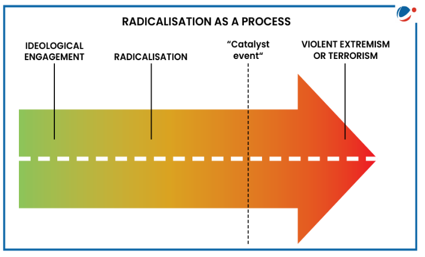
- Extremism refers to beliefs or actions that are far beyond what society considers normal or acceptable. It is characterized by: - Intolerance towards opposing views - Advocacy of radical measures or violence to achieve political, social, or religious goals - In India, extremism is a significant internal security threat, arising from a combination of historical, political, and social grievances. The manifestations of extremism in India can be broadly categorized as follows: -| S.No. | Category | Type of Extremism | Description | Key Examples/Details |
|---|---|---|---|---|
| 1 | Religious Extremism | Islamic Extremism | Driven by radical religious ideologies, justifying violence or intolerance. |
- Motivated by global jihadi movements and state-sponsored agendas. - Radicalization of youth to join groups like ISIS and Al-Qaeda. - Goal: Establishment of an Islamic caliphate or inciting communal violence. |
| 2 | Ethno-Nationalist Extremism | Insurgency in Northeast India | Driven by ethnic identity and a desire for autonomy or secession. |
- Groups like ULFA and NSCN factions are waging armed struggles. - Rooted in grievances related to neglect by the mainland. |
| 3 | Ethno-Nationalist Extremism | Separatist Movements | Movements advocating for secession or independence from the Indian Union. |
- Kashmir Insurgency: Fueled by cross-border support. - Khalistan Movement: Periodically revived in Punjab, often overlapping with religious extremism. |
| 4 | Left-Wing Extremism (LWE) | Naxalism | Radical far-left ideology rooted in communist principles aiming for a classless society through revolution. |
- Focuses on socio-economic inequality and exploitation of marginalized communities. - Primarily affects tribal and rural populations in the "Red Corridor" with deep-seated developmental grievances. |
| Attribute | Insurgency | Terrorism |
|---|---|---|
| Definition | Organized, protracted armed rebellion against an established authority | Use of violence or threat to instill fear for political ends |
| Motivation | Political, social, economic, or ethnic grievances; regime change | Political, religious, or ideological objectives |
| Targets | Primarily government forces, military, infrastructure | Civilians, non-combatants, symbolic targets |
| Tactics | Guerrilla warfare, sabotage, ambushes, hit-and-run attacks | Bombings, assassinations, hostage-taking, suicide attacks |
| Goals | Overthrow/challenge government, control territory, autonomy | Instill fear, provoke overreaction, force political change |
| Organization | Often hierarchical, with command and control | Often decentralized, cell-based, secretive |
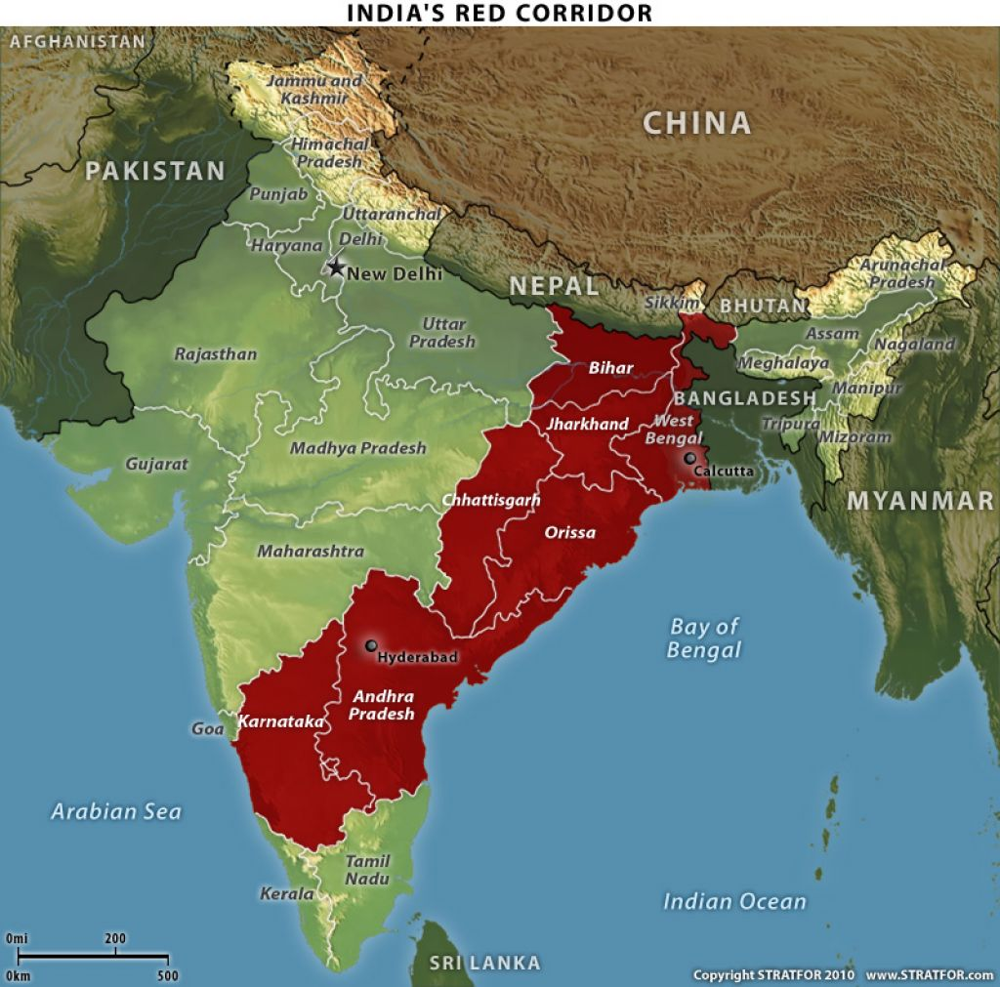
- Decline (2011-Present): - Government strategies combining security actions and development initiatives have led to a decline in LWE violence and influence. - 1.1.1. The Core Nexus- Determinants of Left-Wing Extremism - Left-Wing Extremism (LWE) is influenced by socio-economic, developmental, and governance failures. It is not just a law-and-order challenge but a deep-rooted problem that thrives on grievances exploited by extremist groups. Key determinants of LWE include: - Development-Extremism Vicious Cycle -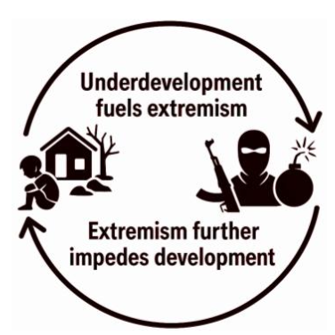
- The link between underdevelopment and extremism is cyclical: - Underdevelopment fuels extremism, and - Extremism further impedes development, creating a self-perpetuating trap. - How Underdevelopment Creates Fertile Ground for Extremism - Severe Infrastructure Deficits: - Lack of roads, electricity, water, and healthcare fuels frustration, making people vulnerable to extremism. - High Poverty and Unemployment: - Limited jobs and high poverty create fertile ground for Naxal recruitment. - Low Human Development Indicators: - Low education, poor healthcare, and social deprivation fuel frustration, aiding extremist ideologies. - How Extremism Impedes Development - Destruction of Infrastructure: - Naxalites destroy infrastructure such as schools, roads, and communication towers to isolate the population and disrupt governance. - Deterrence of Investment: - Extremist activities create a high-risk environment, deterring investment and halting critical development projects. - Cycle of Underdevelopment: - Extremism blocks development, maintaining the cycle of poverty and underdevelopment in the region. - Developmental and Economic Determinants -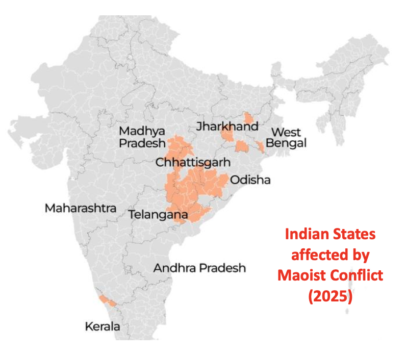
- The conflict over resources, particularly land and water, is central to LWE in tribal regions, often summed up by the slogan “Jal, Jangal, Jameen” (Water, Forest, Land). - 1. Land Alienation and Forced Displacement - Flawed development model: - Large projects like dams and mining have displaced tribal communities. - Mass displacement: - Tribals have been displaced without proper compensation or rehabilitation, leading to their status as "ecological refugees." - Indian States affected by Maoist Conflict (2025) - 2. Impact of Large Industries and Mining Projects on Tribal Populations - State-corporate nexus: - State policies often enable the acquisition of tribal land for corporate use, ignoring exposure to pollution and unsafe working conditions. - Loss of traditional rights: - Mining and industrialization destroy tribal economies and deny them access to forest resources. - 3. The "Resource Curse" - Unequal distribution of benefits: - Although rich in minerals like coal and iron ore, these regions rarely benefit from the profits. Instead, they face environmental damage and loss of livelihood. - Global Parallel: - Lessons from Colombia's "Resource Curse" - Colombia has actively managed its "Resource Curse" by implementing royalty-sharing with communities in mining zones. - This aims to distribute wealth more equitably, fostering local development & to counter armed groups. - 4. Lack of Livelihood Opportunities and Food Insecurity - Destruction of traditional economies, without alternatives, has led to chronic unemployment and food insecurity, pushing people towards extremism. - Governance and Administrative Deficits - The state's failure to protect its citizens and deliver services creates a void that Naxalites have exploited. - 1. Failure to Implement Constitutional Safeguards - Article 244 and the Fifth Schedule grant autonomy to Scheduled Areas to protect tribal land and culture, but the state has been ineffective in ensuring protection. - 2. Poor Implementation of Protective Legislations - PESA Act, 1996: - Intended to grant Gram Sabhas the right to self-governance, but its provisions have been violated. - Forest Rights Act (FRA), 2006: - Meant to restore the rights of forest-dwelling communities, but poor implementation has left many communities disenfranchised. - 3. Administrative Vacuum, Corruption, and Ineffective Grievance Redressal - In many LWE-affected areas, state presence is minimal, and Naxalites have established a parallel government (Janatana Sarkar), administering justice through Jan Adalats and collecting "taxes." - Social and Political Determinants - In addition to economic and governance issues, deep-seated social injustices contribute to the persistence of LWE. - 1. Social Exclusion, Oppression, and Erosion of Tribal Dignity - Tribal communities have long faced: - Cultural oppression and humiliation. - Their unique languages, cultures, and traditions are often viewed as "backward," leading to a loss of dignity and a sense of alienation. - 2. Lack of Political Mobilization and Voice for Tribal Communities: - Despite reservations in legislatures, the political voice of tribal communities remains weak, with tribal leaders often co-opted, leaving extremism as the only viable alternative. - Side note - Indigenous Empowerment- Canada's Model - Canada's Indigenous Self-Government Agreements serve as a global Tribal Governance Model. These agreements explicitly grant land and resource rights to Indigenous communities, recognizing their inherent autonomy. - This approach aims to directly reduce the historical alienation, fostering self-determination and improving socio-economic outcomes through self-governance. - 1.2. Government of India's Multi-Layered Counter-Strategy for LWE -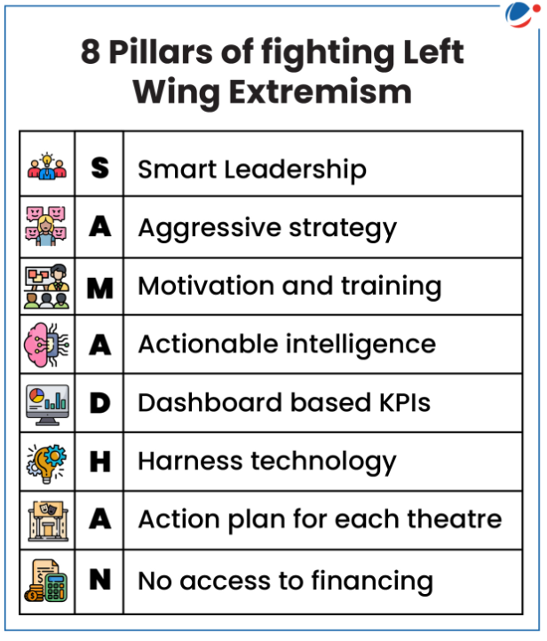
- The Government of India previously focused on LWE as a pure security concern. However, it has shifted from a purely security-centric approach to a more holistic and multi-layered strategy to counter Left-Wing Extremism. This approach tackles the problem on multiple fronts: security, development, and perception. - The National Policy and Action Plan (2015) - The cornerstone of the government's new approach is the National Policy and Action Plan, introduced in 2015. The policy treats LWE as a shared responsibility between the Centre and the States and is based on a two-pronged strategy: - 1. Security Interventions: - These aim to create a secure environment that allows development to take place. - 2. Development and Rights: - Focuses on addressing the root causes of the conflict by ensuring the rights and entitlements of local populations and accelerating development. - 1.1.1. Security-Based Interventions- Role of Security Forces - The security aspect of the strategy focuses on reducing violence and curbing the influence of Naxalites. - 1. Operations by Central Armed Police Forces (CAPFs) and State Police - A robust security framework has been established in affected areas: - COBRA Battalions: - Specially trained Commando Battalions for Resolute Action (COBRA) have been deployed for jungle warfare and targeted operations. - State-Level Forces: - Specialized forces like the Greyhounds in Andhra Pradesh and Telangana, and the Black Panthers in Chhattisgarh, have proven highly effective. - Bastariya Battalion: - The CRPF has created a unique initiative by recruiting local tribal youth from Bastar into a specialized Bastariya Battalion, leveraging their local knowledge and language skills. - 2. Strengthening Intelligence Networks and Inter-State Coordination - Intelligence is central to counter-LWE operations. - Strengthening state intelligence bureaus and improving coordination through platforms like the Multi-Agency Centre (MAC) ensures better collaboration between states. - Joint task forces help prevent extremists from exploiting administrative boundaries. - 1.1.2. Development-Based Interventions- Role of Civil Administration -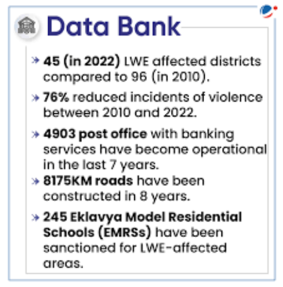
- The civil administration plays a critical role in breaking the Naxalite narrative of state apathy. - 1. Infrastructure Development: - Road Requirement Plan (RRP) and Mobile Tower Projects - To counter developmental deficit, significant efforts are being made to enhance infrastructure: - Road Connectivity: - The Road Requirement Plan (RRP) focuses on improving road access in remote areas, aiding both security forces and economic activity. - Digital Connectivity: - A mobile tower project is underway to improve communication, administration, and public service delivery. - 2. Socio-Economic Development Schemes- Education, Health, and Skilling - Targeted socio-economic initiatives are being implemented for marginalized communities: - Education: - New schools, including Eklavya Model Residential Schools and Kendriya Vidyalayas, are being established to offer quality education to tribal children. - Skilling and Livelihoods: - The Roshni scheme is a placement-linked skill development program aimed at rural youth from LWE-affected districts. - 3. Financial Inclusion and Public Service Delivery - To extend the formal economy and state services: - New bank branches, post offices, and ATMs are being opened to promote financial inclusion. - The Direct Benefit Transfer (DBT) system is being used to ensure the delivery of welfare schemes. - 4. Aspirational Districts Programme - A significant number of LWE-affected districts are also part of the Aspirational Districts Programme. This data-driven initiative focuses on improving socio-economic indicators through coordinated efforts by the central and state governments. - Side note - Community-Driven Development (CDD) in the Philippines- Empowering Locals - The Kalahi-CIDSS program in the Philippines empowers communities in conflict zones to implement small-scale development projects, fostering ownership and self-reliance. - A World Bank study found that a 10% increase in CDD funding led to a 3.5% decrease in violent incidents, countering insurgent narratives of state neglect and promoting peacebuilding. -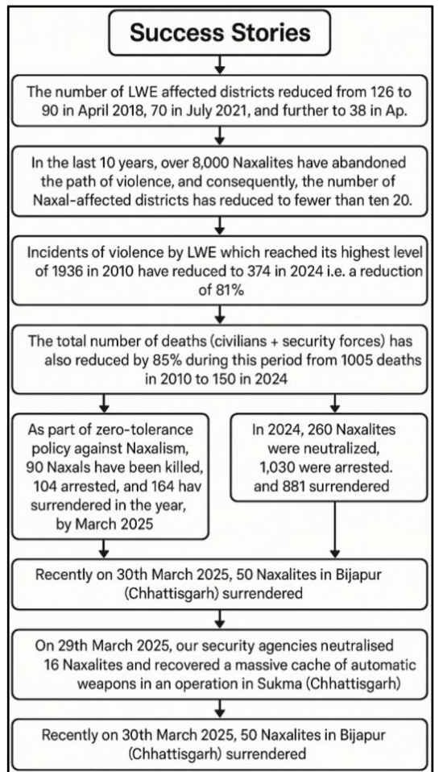
- 1.1.3. Perception Management and Political Engagement - 1. "Winning Hearts and Minds" (WHAM) Approach - The government employs Civic Action Programmes where security forces engage with the local community. - These programs offer medical assistance, distribute essential goods, and organize sports events to bridge the trust deficit between the people and the state. - 2. Surrender and Rehabilitation Policies - States have implemented Surrender and Rehabilitation Policies to encourage Naxalites to renounce violence and reintegrate into mainstream society. - These policies offer financial assistance, vocational training, and other incentives to weaken the extremist ranks. - The SAMADHAN Doctrine - In 2017, the government introduced the SAMADHAN Doctrine, a holistic framework for security operations. This doctrine emphasizes proactive, intelligence-driven operations supported by technology. - 1.3. Current Status and Geographical Spread of LWE -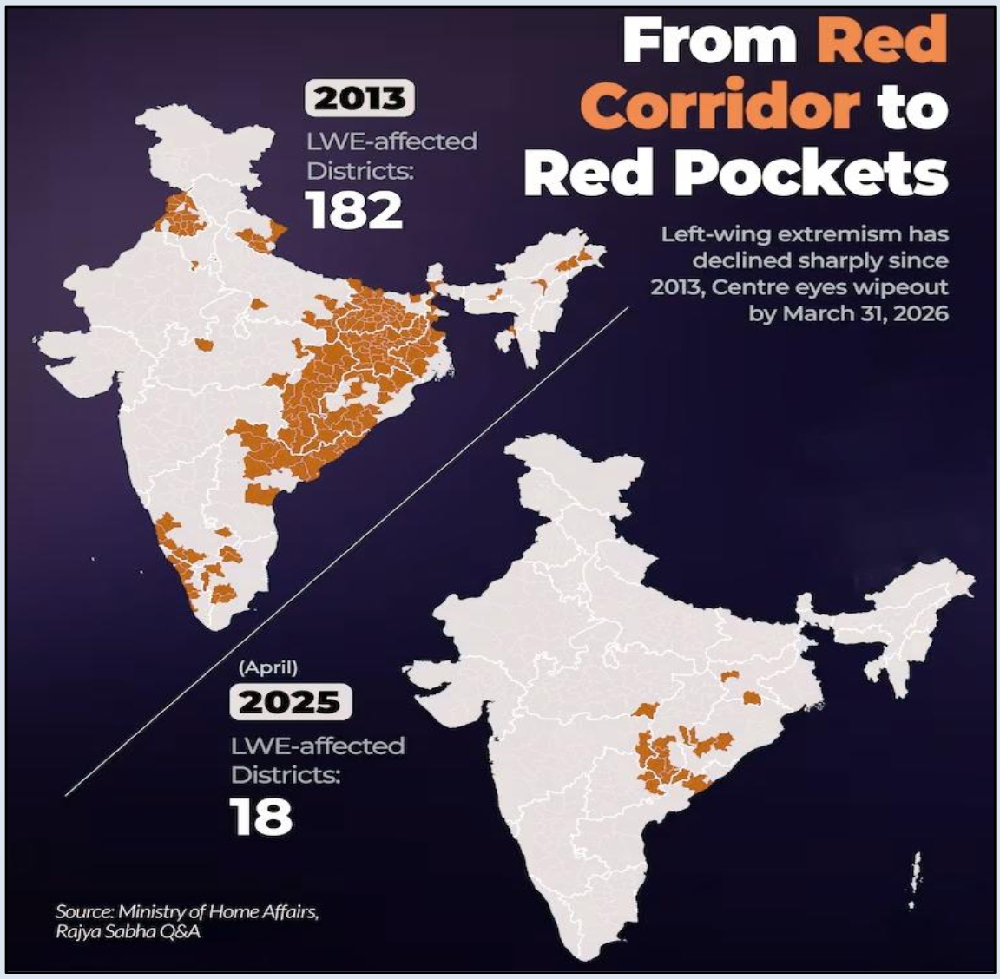
- Contraction of the "Red Corridor": - 90% of all LWE violence is now concentrated in just 18 districts, with states like Chhattisgarh, Jharkhand, and Odisha remaining the epicenters. - Government of India to End Left-Wing Extremism (LWE) by 2026 - The Government of India’s approach aims to completely eliminate LWE by 2026 through enhanced security, development, and rehabilitation efforts, marking the final phase of the LWE fight. The approach includes a zero-tolerance policy, strong Centre-State cooperation, and public participation to eliminate extremist support. - 1.3.1. LWE as a "Violent Internal Security Threat" in current time -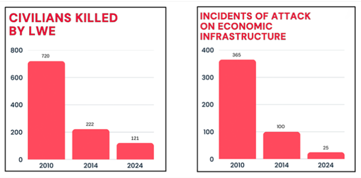
- Despite the decline, LWE continues to be a significant internal security challenge. - Official Designation: - Former Prime Minister Manmohan Singh described LWE as the "single biggest internal security threat" to India. - Deadliest Outfit: - CPI (Maoist), identified by the Global Terrorism Index (GTI) as the deadliest terrorist group in India, remains responsible for significant terror-related attacks and deaths, threatening national security. - 1.4. Emerging Issues and Challenges - Despite significant successes in containing Left-Wing Extremism (LWE), the movement continues to evolve, presenting new challenges that require adaptive and corrective strategies. These challenges reflect changes in tactics, funding, and operations that need urgent attention. - 1. "Urban Naxals" and Frontal Organizations - As their influence diminishes in rural areas, Naxalites have increasingly focused on building networks in urban settings. This shift is marked by: - "Urban Naxals": - The term, although not defined officially by the Government of India, refers to intellectuals, activists, and students in urban areas who are seen as providing ideological justification, legal aid, and logistical support for the LWE movement. These individuals often serve as the propaganda machinery, creating a sympathetic narrative for the extremists. - Frontal Organizations: - These are seemingly legitimate civil society groups used by Naxalites to raise funds, spread Maoist ideology, and mobilize support. They operate in the grey zone, blurring the lines between activism and extremism. - 2. Diversification of Funding: - From Extortion to Linkages with Organized Crime - Naxalites have diversified their financial streams, moving beyond traditional extortion to engage in more sophisticated operations: - Extortion Economy: - They continue to collect "taxes" from contractors, businesses, and corrupt officials in affected areas. - Linkages with Organized Crime: - Growing evidence suggests connections with criminal syndicates involved in drug trafficking, illegal mining, and other illicit activities, which help fund their operations. - 3. Use of Technology for Propaganda and Improvised Explosive Devices (IEDs) - Naxalites have increasingly used technology to further their cause: - Propaganda: - Social media and digital platforms have become essential tools for spreading propaganda and recruiting youth to their cause. - IEDs: - The use of Improvised Explosive Devices (IEDs) remains a critical challenge, with these weapons being responsible for a significant number of casualties among security forces. The growing sophistication of IEDs has made countermeasures more difficult. - 4. The Challenge of Preventing the Re-emergence of LWE in Cleared Areas - Once an area is cleared of Naxalite influence, the administrative and developmental vacuum must be filled swiftly to prevent the resurgence of extremism. The failure to establish effective governance and development in cleared areas creates a risk for the Naxalites to regroup and regain control. - 1.5. Corrective Strategies and the Way Forward - To address the evolving challenges of Left-Wing Extremism, several corrective strategies need to be implemented: - 1. Ensuring Effective Implementation of Protective Laws (FRA, PESA) - A key corrective strategy is the effective implementation of protective laws such as the Forest Rights Act (FRA) and the PESA Act. This includes: - Recognizing community forest rights. - Empowering Gram Sabhas to take control over local resources. - Ensuring that the intended benefits of these laws reach the local populations, thus addressing some of the root causes of the conflict. - 2. Adopting a More People-Centric and Participatory Development Model - The development model should be more inclusive and participatory: - Local communities must be active stakeholders in planning and implementing development projects. - A shift away from top-down approaches to more grassroots-driven initiatives can help empower local populations and reduce discontent. - 3. Strengthening Local Self-Governance and Empowering Gram Sabhas - Empowering local democratic institutions is crucial: - Granting true administrative and financial autonomy to Gram Sabhas as envisioned in the PESA Act is essential. - This empowerment fosters a sense of ownership and counters the Naxalite narrative of an exploitative state, thus addressing key socio-political grievances. - 4. Police Reforms and Sensitization of Security Forces - To build trust, there is a need for continuous sensitization of security forces: - Security personnel must be trained in human rights and the local culture of tribal populations. - Police forces should be viewed as service providers and protectors, rather than merely instruments of state coercion. This would help in building stronger relationships between the local population and the authorities. - Insights from Recommendations of Key Committees - D. Bandyopadhyay Committee: - This committee highlighted that the state had abdicated its responsibility in affected areas. It recommended a tribal-friendly land acquisition and rehabilitation policy, which should be adopted to address longstanding grievances and ensure a lasting solution to the LWE problem. - Model of Success for LWE- Case Study -| Model | Key Features | Approach |
|---|---|---|
| Andhra Pradesh "Greyhounds" Model |
- Greyhounds is a police special forces unit of the Andhra Pradesh and Telangana Police in India. They specialise in counter-insurgency operations against Naxalite-Maoist terrorists.
- Elite Commando Force: Specially trained forces in jungle warfare and guerrilla tactics. - Local Intelligence Network: Grassroots intelligence network for targeted operations. - Small Team Operations: Small, well-equipped teams with high mobility. - Leadership and Political Will: Strong backing from state leadership ensuring resources and autonomy. - Effective Surrender Policy: Encouraged Naxal cadres to surrender and reintegrate into society. | Security-driven, targeting Maoist strongholds with high mobility and precision. |
| Saranda Development Plan (Jharkhand) |
- Clear-Hold-Build Strategy: Three-phase strategy: Clear (military operation), Hold (establish security), Build (development). - Saturation of Development: Post-security stabilization with large-scale infrastructure development. - Winning Trust: Focus on tangible benefits for local communities to counter Maoist propaganda. | Integrated security and development model with a focus on reclaiming and developing areas. |
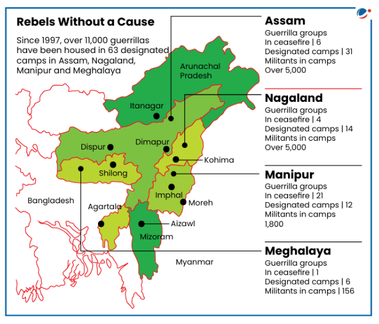
- 1. Historical Alienation and Identity Issues: - After independence, regions inhabited by Tibeto-Burman/Mongoloid ethnic groups felt disconnected from the newly formed Indian nation-state. The colonial frontier area approach led to a lack of central governance, fostering a distinct identity and ethnic conflicts. - 2. Immigration and Demographic Shifts: - Influxes of immigrants, especially from Bangladesh, have caused anxiety among indigenous populations about preserving their cultural identity and control over resources, fueling nativist sentiments and conflicts. - 3. Economic Underdevelopment and Negligence: - Despite rich natural resources, the region faces economic underdevelopment, high unemployment, and poor infrastructure. The perception of central government negligence and corruption has created frustration, which insurgent groups exploit for recruitment. - 4. Geographical Terrain and External Support: - The rugged terrain along borders with Myanmar, Bangladesh, and Bhutan provides safe havens for insurgents. Support from neighboring countries and criminal groups, like the Golden Triangle’s drug trade, has helped sustain these insurgencies. - 5. Political Motivations and Demands: - Insurgents gain popular support by articulating political causes, such as demands for sovereignty (e.g., Greater Nagalim by NSCN-IM) or separate states based on ethnic identity (e.g., Bodoland by NDFB, Kuki homeland by UKLF). - 2.2. State-wise Overview of Insurgency -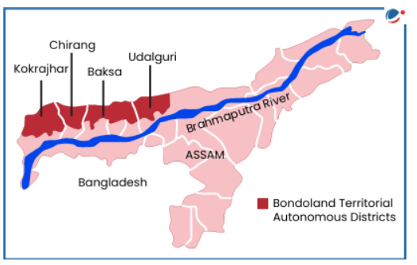
- Assam: - Key Issues: - Assam has historically faced insurgency from groups like the United Liberation Front of Assam (ULFA), National Democratic Front of Bodoland (NDFB), and Kamtapur Liberation Organization (KLO). - These groups often articulate demands for sovereignty or separate homelands based on ethnic identity. - The state also grapples with issues of illegal immigration, leading to demographic shifts and the contentious National Register of Citizens (NRC) process. - Inter-state border disputes with neighboring North-Eastern states have also been a persistent challenge. - Approach: - The government has pursued a multi-pronged strategy. Peace accords, such as the Bodo Peace Accord (2020) with various Bodo groups, have aimed to resolve long-standing demands for a separate Bodoland, resulting in increased autonomy for the Bodoland Territorial Region (BTR). - Other agreements, including the Adivasi Peace Accord (2022) and Karbi Anglong Agreement (2021), address grievances of other ethnic communities. - Boundary agreements with Arunachal Pradesh (2023) and Meghalaya (2022) are resolving inter-state border disputes. - The NRC update was a significant, albeit controversial, measure to identify illegal immigrants. - Manipur: -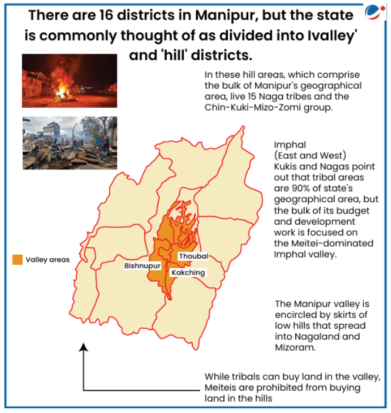
- Key Issues: - Manipur experiences insurgency from numerous valley-based groups like the People's Liberation Army (PLA), United National Liberation Front (UNLF), and various factions of PREPAK, KCP, KYKL, MPLF, and RPF. - The state has recently witnessed significant ethnic violence, particularly the conflict between the Meitei community (residing primarily in the valley) and Kuki-Zomi tribes (inhabiting the hills). - This conflict is fueled by complex issues including land rights, demographic changes, demands for Scheduled Tribe status for the Meiteis, and concerns over illegal settlements, exacerbated by refugees from Myanmar. - Approach: - The government has engaged in peace agreements, such as with the UNLF, to bring insurgent groups into the mainstream. - Long-term measures include strengthening border management to prevent illegal entry, promoting development in remote hill areas, and carefully deliberating the Meitei community's demand for ST status, considering recommendations from various expert committees. - The Manipur Ethnic Violence Crisis- A Brief Overview -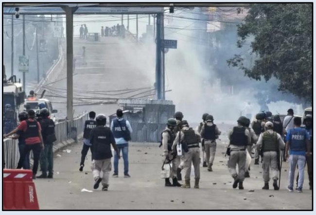
- On May 3, 2023, large-scale ethnic violence broke out in Manipur between the Meitei community (Hindu, majority, in Imphal valley) and the Kuki-Zo tribal community (Christian, in the hills). Over 260 killed, 60,000 displaced, thousands of homes destroyed, and many people are still living in relief camps. - The violence was triggered by a protest against the Manipur High Court's order recommending Scheduled Tribe (ST) status for the Meitei community. - This would grant the Meiteis access to reserved jobs and land rights, which the Kuki-Zo feared would diminish their own protections. - Factors That Escalated the Violence - Ethnic Tensions: - Long-standing disputes over land, jobs, and political power between the Meitei and Kuki-Zo communities. - Historical Grievances: - Tribal groups felt marginalized by government policies and demographic shifts. - Other Factors: - Armed groups, drug trafficking routes from Myanmar, and looted weapons contributed to escalating violence. - Government Response - Curfews and internet shutdowns were imposed. - Thousands of security personnel deployed, and “shoot at sight” orders issued to control the violence. - Additional security forces were sent, and a peace committee was set up, though it failed due to lack of trust. - President's Rule was imposed in February 2025 after the Chief Minister's resignation which still continues till date. - Despite interventions, peace has not been achieved, and the state remains divided along ethnic lines. Displaced families still face uncertainty. - Nagaland: -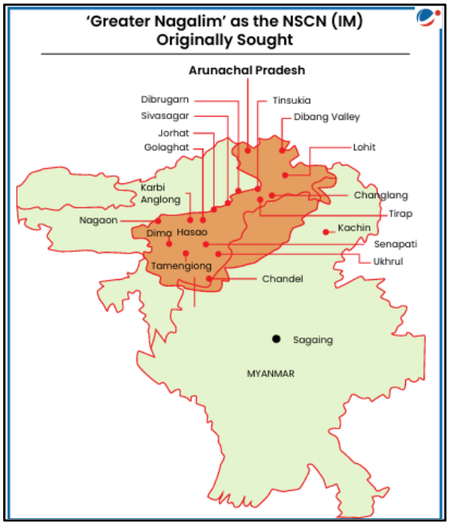
- Key Issues: - Nagaland's insurgency is deeply rooted in the demand for Naga sovereignty and the creation of 'Greater Nagalim', a unified Naga homeland encompassing Naga-inhabited areas across Nagaland, Manipur, Assam, Arunachal Pradesh, and parts of Myanmar. - Key groups include the National Socialist Council of Nagalim (Isak-Muivah) [NSCN-IM] and other factions like NSCN(K), NSCN(KN), and NSCN(R). - The issue is complicated by inter-tribal conflicts and the sensitivities of neighboring states regarding territorial integrity. - Approach: - Peace talks with the NSCN-IM have been ongoing since 1997, marked by ceasefire agreements. However, a final resolution remains elusive due to persistent demands for a separate Naga flag and constitution, and the contentious 'Greater Nagalim' concept. - The government aims for an inclusive dialogue involving all Naga factions and the governments of neighboring affected states to find a solution within the constitutional framework. It also seeks to address the limitations of Article 371A concerning land and resource ownership. - Tripura: - Key Issues: - Historically, Tripura faced insurgency from groups like the All Tripura Tiger Force (ATTF) and the National Liberation Front of Tripura (NLFT), driven by ethnic tensions and demands for greater autonomy. - The state also dealt with the prolonged Bru-Reang refugee crisis, involving the displacement of thousands of tribal people. - Approach: - Significant progress has been made through peace agreements. The NLFT (SD) Agreement (2019) led to the surrender of cadres and their reintegration. - The Bru-Reang Agreement (2020) resolved the 23-year-old refugee crisis by facilitating the permanent settlement of over 37,000 displaced individuals within Tripura, with substantial financial assistance from the central government. Consequently, Tripura is now largely free from active insurgency. - Meghalaya: - Key Issues: - Meghalaya has experienced insurgency, notably from the Hynniewtrep National Liberation Council (HNLC), which historically sought an independent Hynniewtrep homeland. - Approach: - The government has banned such groups under the Unlawful Activities (Prevention) Act, 1967. Through sustained security operations and peace initiatives, the state has largely brought insurgency under control, contributing to the overall improvement in the region's security situation. - Mizoram and Sikkim: - Key Issues: - These states have largely remained free from significant insurgent activities. - Mizoram successfully resolved its long-standing insurgency through the Mizo Peace Accord in 1986, which granted it statehood and significant autonomy. - Sikkim has historically enjoyed a peaceful environment. - Approach: - The relative peace in these states serves as a model for conflict resolution through political dialogue and the fulfillment of genuine aspirations within the Indian federal structure. - 2.3. Approach to Handling Insurgency in NE -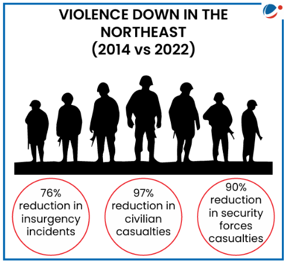
- The government's strategy in the North-East has evolved into a multi-pronged approach encompassing proportionate use of force, dialogue, and structural changes. - Armed Forces (Special Powers) Act (AFSPA), 1958: - This act grants special powers to armed forces in 'disturbed areas' to maintain public order. - While deemed necessary by the state to tackle insurgency and prevent security gaps, it faces strong opposition due to allegations of human rights violations. - Recent Supreme Court rulings (e.g., 2016, 2017) emphasize minimum force and accountability, and various committees (e.g., Jeevan Reddy, Santosh Hegde) have recommended its repeal or stricter implementation. - As of July 2025, AFSPA remains in force in parts of Nagaland, Manipur, and Arunachal Pradesh. - Peace Process and Dialogue: - The Central Government actively pursues talks and negotiations with groups that abjure violence and seek solutions within the Indian Constitution. Numerous Suspension of Operations (SoO) agreements and Memoranda of Settlements (MoS) have been signed, leading to the dissolution of some outfits. - Scheme for Surrender-cum-Rehabilitation: - This scheme provides financial assistance (e.g., Rs. 4 lakhs immediate grant, Rs. 6000/month stipend for 3 years) and vocational training to militants who surrender, encouraging their reintegration into society. - Reimbursement of Security Related Expenditure (SRE): - This non-plan scheme reimburses states for expenses incurred on security measures, including training, logistics for CAPFs, ex-gratia payments to victims, and maintenance of designated camps for groups under SoO. - Civic Action Programmes (CAP): - Implemented by Army and Central Armed Police Forces, these programs undertake welfare activities (medical camps, sanitation drives, distribution of study material) to build trust and improve the image of security forces among local populations. - Modernization of Police Force: - The Scheme for Modernization of State Police Forces (MPF) aims to upgrade police infrastructure, weaponry, communication, and training to meet internal security challenges. - Border Management: - Measures include construction of border fencing, floodlighting, and implementation of Comprehensive Integrated Border Management System (CIBMS) with smart fencing (e.g., BOLD-QIT on Indo-Bangladesh border) to deter illegal infiltration. - Act East Policy: - This policy aims to enhance connectivity, trade, and relations with Eastern neighbors, with a focus on developing North Eastern states and improving their infrastructure. - Side note - UK's "Operation Banner" - Militarization Erodes Trust - The UK's "Operation Banner" in Northern Ireland (1969–2007) showed how long-term militarization can deeply damage community trust. The extended military presence, along with controversial tactics, ended up alienating a large part of the population. - This case clearly highlights the need for building trust in conflict situations, as excessive military intervention can unintentionally fuel resentment and instability. - 3. Jammu and Kashmir Insurgency - The insurgency in Jammu and Kashmir (J&K) has evolved from a dispute over local autonomy into a significant internal security challenge. - 3.1. Root Causes of Insurgency - Historical Context and Autonomy Dispute: - Despite accession to India in 1947, aspirations for independence persisted in the region since 1947. Limited democratic development until the late 1970s and the reversal of reforms by 1988 curtailed non-violent expression of discontent. - Alleged Rigging of 1987 Assembly Elections: - This event is widely considered a catalyst, leading some legislative assembly members to form armed insurgent groups and contributing to anti-government sentiment. - External Sponsorship (ISI's Role): - Pakistan's Inter-Services Intelligence (ISI) has allegedly encouraged and aided the Kashmir independence movement, sponsoring terrorism to distract Indian troops and internationalize the issue. The FBI in 2011 openly acknowledged ISI's role in sponsoring terrorism in Kashmir. - Mujahideen Influence: - Post-Soviet invasion of Afghanistan, Mujahideen fighters infiltrated Kashmir, aiming to spread radical Islamist ideology, further complicating the conflict with strong Jihadist elements. - Sense of Alienation and Religious Marginalisation: - As India's only Muslim-majority state, a feeling of political, cultural, and economic marginalization compared to Hindus in the rest of India has fueled discontent. - Humanitarian Abuses: - Accusations of humanitarian abuses and extrajudicial killings by Indian troops operating under emergency powers have eroded public support for the government. - 3.2. Approach to Handling Insurgency -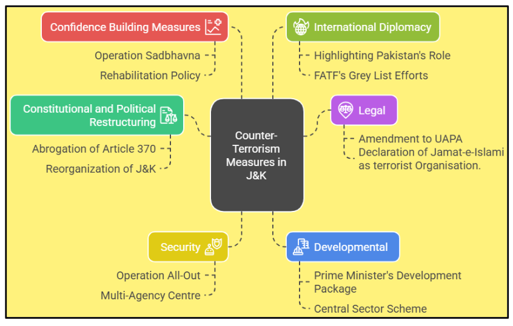
- India's response to the J&K insurgency has shifted from a heavy-handed approach to a more nuanced strategy emphasizing peacebuilding, development, and counter-terrorism. - 1. Security Measures: - Counter-Terrorist Operations: - Focus on intelligence-based surgical operations, reducing the presence of uniformed personnel in population centers, and ensuring transparency with zero tolerance for human rights abuses. - Over Ground Workers (OGWs) Neutralization: -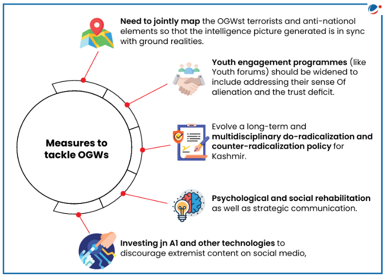
- OGWs provide logistical support, funding, ideological backing, radicalization, and recruitment for militants. - Strategies involve categorizing OGWs (e.g., logistic support, funding, ideological support, recruitment, perception generation) and developing targeted responses. - This includes intelligence-based sting operations, psychological and social rehabilitation, strategic communication, and controlling social interactions (including digital) of OGWs. - Investing in AI and other technologies to discourage extremist content on social media is also crucial. - Operation All Out: - Aims to eliminate militant networks, OGWs, and top militant commanders. - Tackling Hybrid Terrorists: - Addressing the rise of 'part-time' or 'hybrid' terrorists who are not officially listed but are radicalized and carry out small-scale attacks before returning to normal life. - 2. Developmental and Rehabilitation Initiatives: - UDAAN Scheme: - A Special Industry Initiative providing exposure and training to J&K graduates and post-graduates in corporate India, aiming to address unemployment. - NISHTHA Scheme: - A capacity-building program for improving the quality of school education through integrated teacher training. - Himayat Mission: - Focuses on generating sustainable livelihood opportunities through self-employment and entrepreneurial skill development for J&K youth. - Rehabilitation and Surrender Policies: - Offer facilities and incentives for terrorists who undergo a change of heart, accept India's integrity, and are willing to return to the mainstream. - Economic Reconstruction: - Post-revocation of Article 370, efforts focus on attracting investments, extending social security measures (e.g., PM-KISAN, Atal Pension Yojana), and building transit accommodation for Kashmiri Pandits. - 3. Political and Governance Reforms: - Removal of Article 370 (2019): -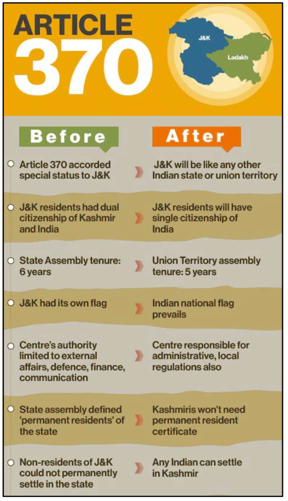
- This significant move converted the State of J&K into two Union Territories (J&K with an assembly, and Ladakh), abolishing its special status. - Positive Outcomes: - Extended reach of Indian Constitution and laws (e.g., RTI, RPA), new Domicile rules, decreased terrorism-related deaths, fall in terrorist recruitment, and fulfillment of Ladakh's aspirations. - Negative Outcomes: - Raised concerns about Kashmiri identity, severely affected education and economy due to shutdowns and internet blockades, increased cross-border infiltration attempts, and internationalization of the Kashmir issue. - 2024 assembly elections: - Recent elections in Jammu and Kashmir restored stability by enabling democratic governance, fostering public participation, and reducing alienation through legitimate political representation. - Dialogue and Devolution: - Dialogue with state and non-state actors, demilitarization, and devolution of power to all three regions (Jammu, Ladakh, Kashmir) to prevent communal polarization. - Restoring Trust: - Rebuilding trust in democratic machinery, addressing economic distress, lifting internet shutdowns, and robustly pushing education through scholarships and funding. UNIT 2- ROLE OF EXTERNAL STATE AND NON-STATE ACTORS IN CREATING CHALLENGES TO INTERNAL SECURITY - "Terrorism is not a conventional war with standing armies... It exploits the seams of legal systems." – Robert Mueller - 1. External Threats to India's Internal Security - India’s internal security challenges arise from both internal vulnerabilities and ongoing external efforts to create instability. These challenges are complex, with threats coming from both conventional and non-conventional external sources. -| Category | Conventional External Threats | Internal Security Threats from External Sources |
|---|---|---|
| Nature of Threats | Acts of military aggression or declared wars between countries. | More covert threats, where external powers support non-state actors or internal groups causing unrest. |
| Method of Action | Official armed forces of a state directly involved in actions. | Uses internal groups or non-state actors to create problems, avoiding direct involvement. |
| Plausible Deniability | No deniability, as the actions are officially sanctioned by the state. | Allows the external state to deny involvement, avoiding direct responsibility. |
| Impact on India | Clear and identifiable external aggression. | Internal instability that complicates India's security situation. |
| Aspect | Kinetic War | Non-Kinetic War |
|---|---|---|
| Nature | Direct physical force and violence, Highly visible (battlefield, news coverage) | Indirect, non-physical methods (psychological, cyber, etc.) Often covert or unattributed |
| Means | Bullets, bombs, missiles, tanks, armed forces | Cyberattacks, disinformation, sanctions, electronic warfare |
| Actors | Primarily state militaries | States, non-state actors, hackers, proxy groups |
| Cost | High human, material, and financial costs | Lower direct cost but possible large long-term consequences |
| Examples | Airstrikes, invasions, artillery, direct combat | Cyber warfare, propaganda, sanctions, electronic jamming |
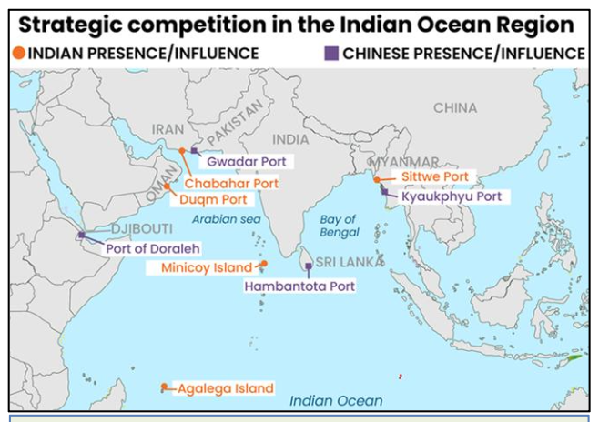
- China’s challenge to India is strategic, long-term, and multi-dimensional, aimed at containing India’s rise and undermining its stability. This threat manifests across several domains, from direct military pressure along the border to covert operations in the economic, cyber, and social spheres. - 1. Military and Border Threats- The Unresolved Frontier - The 3,488 km India-China border remains the world’s longest disputed frontier and a primary flashpoint. China employs a strategy of Grey-Zone Warfare—coercive actions that fall below the threshold of conventional war—to exert pressure and alter the status quo. - Grey-Zone Tactics on the LAC: - Along the Line of Actual Control (LAC), China uses tactics like "Salami Slicing", which involves the gradual capture of territory through minor transgressions and infrastructure construction in disputed areas. - This is complemented by military intimidation through aggressive patrolling and standoffs, exemplified by the Doklam (2017) and Galwan Valley (2020) incidents. - The Galwan clash, the deadliest confrontation in decades, highlights the constant risk of escalation. - Military Modernization: - China’s defense budget, which rose to $245 billion in 2025, heavily funds high-altitude warfare capabilities, advanced surveillance, and rapid infrastructure development in Tibet and Xinjiang, enabling swift troop mobilization along the LAC. - The Two-Front Challenge: - The deep, "all-weather" strategic nexus between China and Pakistan amplifies the risk of a two-front challenge for India. - A key element of this is the China-Pakistan Economic Corridor (CPEC), a flagship project of the Belt and Road Initiative (BRI) that passes through Pakistan-Occupied Kashmir (PoK). This directly undermines India’s sovereignty and territorial integrity while solidifying the strategic encirclement. - 2. Cyber and Hybrid Warfare- The Digital Battlefield - China has intensified its use of asymmetric tactics in the digital domain to achieve its strategic objectives without direct confrontation. - Escalating Cyberattacks: - Chinese state-linked hacking groups have increased their cyber operations against India’s critical infrastructure, government agencies, financial institutions, and media through data theft, malware, and phishing campaigns. - Hybrid Threats: - Beijing employs hybrid tactics that merge digital and physical elements. These operations combine cyberattacks with sophisticated disinformation campaigns and support to proxy actors to foment unrest and destabilize India’s internal environment. - Crypto-Terror-Funding Insurgency - Violent Non-State Actors (VNSAs), including groups like ISIS, increasingly use cryptocurrencies such as Bitcoin. - This allows them to evade state control over financial transactions, facilitating illicit funding. - These digital currencies offer anonymity, decentralization, and global reach. This presents a significant challenge for counter-terrorism financing, making it harder to track and disrupt extremist funding networks. - 3. Economic and Technological Leverage - China uses its economic influence as a tool for coercion and espionage, exploiting India’s dependencies. - Economic Coercion: - India’s reliance on Chinese imports in critical sectors like electronics, telecom, and pharmaceuticals (Active Pharmaceutical Ingredients or APIs) creates a significant vulnerability. Beijing can weaponize this dependency by restricting trade or manipulating supply chains. - Data Espionage and Tech Control: - Chinese commercial entities and mobile applications in India have been implicated in collecting personal and strategic data. - Investigations have revealed networks of shell companies used for economic espionage and influencing Indian firms through investments. - Furthermore, the dominance of Chinese firms in telecom hardware raises serious concerns about backdoor access and the potential for sabotage. - 4. Support to Insurgency and Internal Destabilization - A key component of China’s strategy is to fuel internal conflicts within India by providing support to various militant and extremist groups. - Northeast Insurgent Groups: - China has a long history of providing arms, training, financial support, and sanctuary to insurgent groups in Northeast India, including Naga (NSCN), Mizo, Meitei, and ULFA outfits. This support serves as leverage to keep the sensitive region destabilized. - Left-Wing Extremism (Maoists): - China is also believed to provide ideological, moral, and financial support to Left-Wing Extremist (Maoist) groups in India. By leveraging a shared Maoist ideology, it aims to brew internal security challenges and weaken the Indian state from within. - 5. Regional and Maritime Encirclement - China is actively working to expand its strategic footprint in India’s neighborhood, particularly in the maritime domain, to limit India’s influence. - Indian Ocean Expansion: - China’s growing naval presence in the Indian Ocean, including submarine deployments and access to ports in neighboring countries like Sri Lanka and Pakistan, is a core part of its "String of Pearls" strategy to encircle India and threaten its vital sea lanes of communication. - Regional Influence: - Through strategic investments and infrastructure projects like CPEC, China seeks to gain leverage over South Asian nations, further tightening its strategic encirclement of India. - Decoding the "String of Pearls" -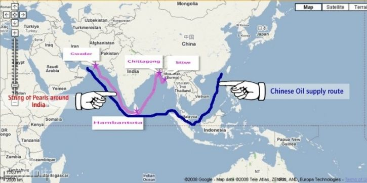
- The "String of Pearls" is China’s strategy to expand its influence in the Indian Ocean Region (IOR) by developing ports and naval facilities along key maritime trade routes, from mainland China to Africa. - India’s Counter-Strategy: - The "Necklace of Diamonds": -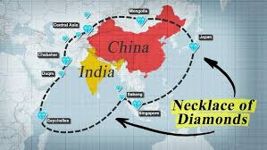
- In response, India views this as a strategic encirclement and is pursuing the "Necklace of Diamonds" to protect its interests. - Port Development: - India is securing ports like Chabahar (Iran) and Sittwe (Myanmar). - Strengthening Alliances: - India has military access at Oman’s Duqm Port and Mauritius’s Agalega Islands, collaborating with QUAD countries (USA, Japan, Australia) to ensure a free and open Indo-Pacific. - 2.3. Spillover Challenges from Other Neighbours -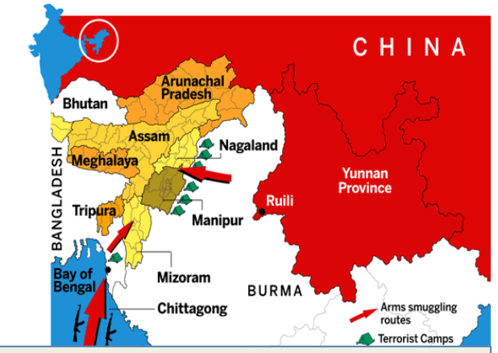
- Significant security threats often spill over into India, not necessarily from state-sponsored action, but as a direct result of the internal instability and weak governance within neighboring countries. - 1. Myanmar- Porous Borders and Political Instability - Porous Border: - The 1,643 km long border with Myanmar, combined with dense forests, provides safe havens and operational bases for various North-East insurgent groups. - Political Instability: - The military coup in Myanmar has worsened the security situation, further destabilizing the region. - Rohingya Refugees: - The influx of Rohingya refugees from Myanmar presents security concerns, with fears of their vulnerability to radicalization by terrorist groups. - India’s Response: - India has decided to scrap the Free Movement Regime (FMR) and fence the border to prevent cross-border threats. - Side note: - Myanmar Nexus- Arms Flow to Northeast Insurgents - The Chin National Army (CNA), a rebel group in Myanmar, operates in areas very close to the Indian border. A major security headache for India is the very real problem of arms trafficking that thrives across this porous border. - Weapons are frequently smuggled from Myanmar’s conflict zones and end up in the hands of Northeast Indian insurgents. This constant flow of illegal arms highlights the serious cross-border threats India faces. - 2. Bangladesh- Illegal Migration and Past Sanctuaries -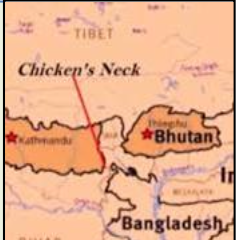
- Illegal Migration: - Despite improved security cooperation with Bangladesh, large-scale illegal migration remains a significant challenge, especially in Assam and West Bengal. This has caused demographic changes and ethnic tensions in border states. - Past Sanctuaries: - In the past, Indian Insurgent Groups (IIGs) like ULFA used Bangladesh as a sanctuary, though the current government has cracked down on these groups. - Spillover Risks from Neighbourhood Posturing- Bangladesh’s Statement on Oceanic Leverage - In March 2025, Bangladesh’s interim leader Muhammad Yunus referred to his country as the “only guardian of the ocean” for India’s landlocked (the Chicken Neck Corridor) northeastern states, during an official visit to China. - By inviting greater Chinese engagement in the region and implying strategic leverage over India’s connectivity, the statement was seen as diplomatically provocative. - Indian policymakers viewed this as a concerning instance of neighbourhood rhetoric aligning with external powers, potentially complicating regional security and stability. - The episode highlights how political shifts in neighbouring countries can spill over into India’s internal and strategic concerns. - 3. Nepal & Bhutan- Misuse of Open Borders - Open Borders: - India shares open borders with Nepal and Bhutan, symbolizing friendly relations, but these borders are often misused by external actors. - Cross-Border Movement: - These borders serve as convenient transit routes for terrorists, criminals, and smugglers, facilitating the movement of arms, Fake Indian Currency Notes (FICN), and narcotics into India. - ISI Activities: - Pakistan’s ISI has a history of using this vulnerability for its anti-India operations. Two key examples prove this point: - In December 1999, terrorists hijacked flight IC 814 after it departed from Nepal. - In August 2013, Indian Mujahideen terrorist Yasin Bhatkal was captured near the India-Nepal border after using it to hide. - 3. Challenges from Non-State Actors - India faces significant security challenges from a wide variety of non-state actors operating both within and across its borders. These groups fuel everything from organized crime and internal insurgencies to deadly cross-border terrorism. - Overview - Terrorism: - Over 180 terrorist groups have operated in India. Lashkar-e-Taiba (LeT) and Jaish-e-Mohammed (JeM), originating from Pakistan, have carried out major attacks, such as the 2008 Mumbai attacks and Pulwama attack in 2019. - Left-Wing Extremism: - Maoist groups such as the CPI (Maoist) operate in Chhattisgarh, Jharkhand, and Odisha, obstructing development by targeting government projects and spreading propaganda to recruit vulnerable youth. - Insurgency in the Northeast: - Groups like the United Liberation Front of Assam (ULFA) and Nationalist Socialist Council of Nagaland (NSCN) fuel insurgency in the Northeast due to inter-tribal conflicts and illegal migration from Bangladesh, creating an environment conducive for non-state actors. - Drug Trafficking: - India’s proximity to the Golden Triangle (Myanmar, Laos, Thailand) and Golden Crescent (Afghanistan, Pakistan, Iran) makes it vulnerable to drug trafficking. For example, heroin is smuggled into India through land borders with Myanmar and Afghanistan, while sea routes from the Indian Ocean are also exploited. - Golden crescent - The Golden Crescent is one of the world’s largest illicit opium-producing regions, forming a crescent-shaped zone covering three countries: - Afghanistan, Iran, and Pakistan. Afghanistan is the world’s largest producer of opium, accounting for over 80–85% of global production (as per UNODC reports). Opium from here is processed into heroin and trafficked through Pakistan and Iran, eventually reaching India, Europe, and Africa. India faces major challenges as a transit country, especially across its Punjab and Rajasthan borders. - Golden triangle - The Golden Triangle is one of the world’s major opium-producing regions, situated in Southeast Asia, where the borders of Myanmar (Burma), Laos, and Thailand meet — hence the term “triangle.” - Myanmar remains one of the top producers of illicit opium. - Drug routes move through China, Vietnam, and Bangladesh, and sometimes enter India via the Northeast (Manipur, Mizoram, Nagaland). - The term “Golden” in Golden Triangle or Golden Crescent doesn’t refer to the color of the drug, but to the economic value of the trade — the gold-like profits generated by the narcotics economy. - Human Trafficking: - Despite being illegal, human trafficking remains a major issue. For instance, Nepalese women are often trafficked through India for commercial sexual exploitation, and Bonded Labour is widespread in industries like brick kilns in states like Tamil Nadu and Andhra Pradesh. - Civil Society Organisations: - Foreign-funded NGOs in Kerala and Kochi have been reported to be involved in protests against the Kochi Marina Project, raising concerns about external influence. - Although state actors pose a strategic threat, the most direct and frequent challenges to India’s internal security arise from Violent Non-State Actors (VNSAs). The primary form of this threat is terrorism, which the upcoming section will explore in detail. - 3.1. Terrorism - 3.1.1. The Challenge of Defining “Terrorism” -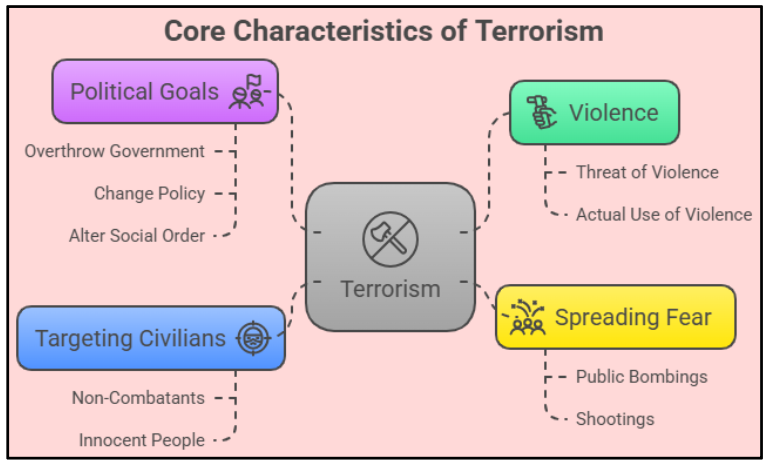
- Defining terrorism remains controversial and difficult, as the term is often shaped by political, ideological, or strategic biases. The core dilemma is that “one person’s terrorist is another person’s freedom fighter”—what qualifies as terrorism depends largely on perspective. - Importantly, most frameworks do not define terrorism as a concept, but rather describe specific acts considered terrorist in nature based on intent and effect. - International Framework: - UN General Assembly Resolution 49/60: - The UNGA Resolution 49/60 (1994) does not define terrorism per se but criminalizes certain acts widely seen as terrorist. It states: - “Criminal acts intended or calculated to provoke a state of terror in the general public, a group of persons or particular persons for political purposes are in any circumstance unjustifiable, whatever the considerations of a political, philosophical, ideological, racial, ethnic, religious or any other nature that may be invoked to justify them.” - This description focuses on the intent to spread fear for political purposes, dismissing any ideological justification. - Indian Legal Framework: - Bharatiya Nyaya Sanhita, 2023: - The Bharatiya Nyaya Sanhita (BNS), 2023, similarly refrains from defining terrorism directly. Instead, it classifies a terrorist act as: - Any act intended to threaten the unity, integrity, sovereignty, or economic security of India, or to strike terror in the people, typically involving the use of violence for ideological or social objectives. - This approach prioritizes national security and public fear as key indicators of terrorism, irrespective of the actor’s motivation. - 3.1.2. Classifying Terrorist Threats in the Indian Context - Terrorism in and around India is a complex issue, with different categories based on the actors and motivations: -| Category | Description | Examples |
|---|---|---|
| State-Sponsored Terrorism | Involves a foreign government supporting terrorist groups, providing safe haven, financial aid, military training, and ideological justification. | Pakistan’s support for groups like Lashkar-e-Taiba and Jaish-e-Mohammed. |
| Violent Non-State Terrorism | Carried out by armed groups not affiliated with any government. | Narcotics cartels and ideologically driven groups like paramilitary militias. |
| Ethno-Nationalist Terrorism | The goal here is to create a separate state for a particular ethnic group or to elevate one ethnic group over others. |
- The insurgency in Jammu & Kashmir, driven by secessionist groups often supported from across the border. - The Khalistan movement in Punjab during the 1980s, which demanded a separate Sikh state. - Various insurgent groups in Northeast India fighting for independence or autonomy. - Tamil Nationalist groups like the LTTE in Sri Lanka. |
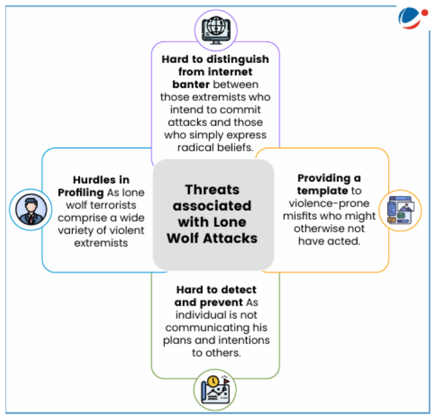
- These organizations encourage individuals to carry out self-radicalized attacks with minimal intelligence footprint. A “lone wolf” is an individual who is radicalized—often online—and commits violent acts alone, without direct command or material support from a larger group. These attacks are extremely difficult for security agencies to detect and prevent. - They remain a concern due to the volatile neighborhood, access to social media, and the youth population vulnerable to radicalization. - While India’s strict gun laws make it harder for lone wolves to acquire sophisticated weapons, the use of vehicles, knives, and homemade explosives remains a potent threat. - Indian security agencies have successfully foiled several plots and arrested ISIS sympathizers in states like Maharashtra, Kerala, Telangana, and West Bengal. Furthermore, Al-Qaeda in the Indian Subcontinent (AQIS) has attempted to establish cells in Assam and West Bengal. - While the direct operational capability of these global groups in India remains limited compared to the Pakistan-backed outfits, the threat from their sleeper cells and persistent online radicalization efforts remains a serious and ongoing concern. - Cyber Caliphate- ISIS’s Digital Warfare -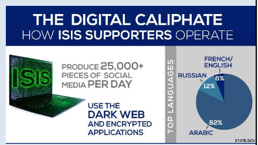
- ISIS consistently utilizes platforms like Telegram for online radicalization and recruitment, a verified global tactic. India has genuinely seen instances where individuals, notably from Kerala, have been influenced by such digital propaganda. - This highlights a critical internal security challenge: - how digital networks are exploited to draw youth into extremism. Combating this demands continuous social media monitoring and robust counter-narrative strategies to prevent radicalization. - Combating Online Radicalization- EU’s Model - The European Union provides a strong model for India on how to tackle online terrorist propaganda. Through units like Europol’s Internet Referral Unit, the EU actively works with tech companies to quickly find and remove harmful content from groups like ISIS. - This effort is backed by powerful laws like the Terrorist Content Online (TCO) Regulation, creating a structured system for social media monitoring that helps counter radicalization effectively. - Covert Operations, Pre-emptive Strikes, and Surgical Strikes: -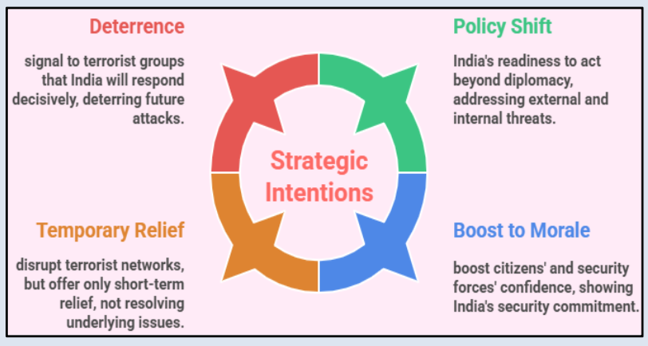
- Strategic Approaches in India’s Internal Security - The strategic responses, such as covert operations, pre-emptive strikes, and surgical strikes, play a vital role in India’s counterterrorism strategy, complementing broader efforts to safeguard national security and maintain regional stability. - Covert Operations: - Secret missions conducted to achieve objectives without direct attribution or open involvement by the state. These operations are designed to remain undetected and achieve strategic goals. - Pre-emptive Strikes: - Attacks launched to neutralize imminent threats before they can result in harm, preventing attacks before they occur. - Hot Pursuit: - A military or law enforcement action where forces chase and attack terrorists or criminals across borders without waiting for permission, often in response to an ongoing threat. - Surgical Strikes: - Carefully planned, targeted attacks, typically on terrorist camps or specific threats, designed to minimize collateral damage while achieving precise objectives. - 3.1.4. The Modern Playbook of Terrorism- New Threats and Emerging Challenges -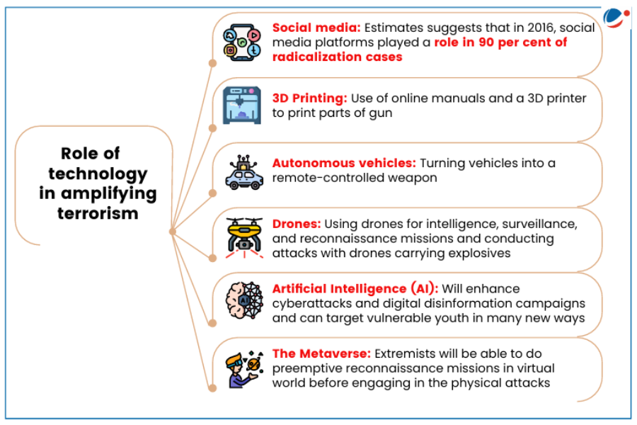
- Terrorism today has transformed into a global, fast-moving threat. It no longer relies solely on traditional methods. Modern terrorists have adopted a sophisticated playbook that leverages technology, exploits urban vulnerabilities, and blurs the lines between crime, terror, and warfare. - 3.1.4.1. Hybrid Threats- Technology as a Weapon -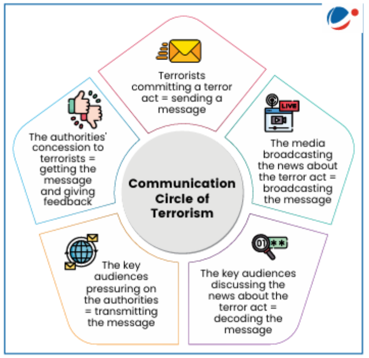
- Technology is the central nervous system of modern terrorism. - The Digital Battlefield - The digital domain has become a primary battleground for a new kind of war, with adversaries leveraging various tactics to destabilize societies. Terrorist organizations use digital tools for every aspect of their operations, turning the internet into a primary battlefield. The core principle is simple: a terror act is a message, and technology is the ultimate megaphone to broadcast that message to a global audience. - Propaganda and Recruitment: - Social media platforms and encrypted messaging apps are used to spread extremist ideology. High-quality videos, online magazines, and AI-generated content like deepfakes are used to justify violence, radicalize vulnerable youth, and recruit new members. It’s estimated that social media plays a role in up to 90% of radicalization cases. - Financing and Planning: - The internet makes it easy to raise and move funds through online payment systems, cryptocurrencies, and fundraising for seemingly legitimate charities. Encrypted communication allows terrorist cells across different continents to plan attacks securely. - Training and Execution: - Groups provide online manuals and instructional materials for everything from bomb-making to counter-intelligence and hacking. - Use of Social Media for Disinformation and Psychological Warfare: - Weaponizing information: - Adversaries are using social media platforms to run coordinated disinformation campaigns, spread fake news, and propagate divisive narratives. - Psychological warfare: - These tactics aim to create social discord, undermine trust in state institutions, and polarize society, weakening the national fabric from within. - Cross-border Cyber Attacks on Critical Information Infrastructure (CII): - Cyber threats: - State-sponsored hackers and cyber-terrorists pose significant risks to India’s Critical Information Infrastructure (CII), which includes sectors like banking, power grids, transport, and healthcare. - The Challenge of Deepfakes and AI-generated Content: - Emerging technologies: - The rise of Artificial Intelligence (AI) has introduced new threats, including deepfakes—AI-synthesized videos or audio that can create highly convincing but false content. - Impact: - These can be used for sophisticated propaganda, defaming public figures, or fabricating false evidence to incite social unrest, making it increasingly difficult to distinguish fact from fiction. - The Drone/UAV Threat - The use of low-cost, commercially available Unmanned Aerial Vehicles (UAVs) or drones has added a new and dangerous dimension to cross-border threats. - Use of Drones for Cross-border Smuggling - Adversaries, particularly from Pakistan, are increasingly using drones to smuggle arms, ammunition, and narcotics across the border into Punjab and Jammu & Kashmir. - The small size and low flight altitude of these drones make them difficult to detect using conventional radar systems, allowing them to operate with relative ease. - The Potential for Weaponized Drones - Beyond smuggling, there is a growing threat of drones being weaponized. - Drones can be modified to carry Improvised Explosive Devices (IEDs), posing a significant risk to security installations, critical infrastructure, and public gatherings, as demonstrated in conflict zones worldwide. - India’s Initiatives to Tackle Drone Threats - Counter Drone System (D4 System): - Developed by DRDO and Bharat Electronics, the D4 system detects, tracks, and neutralizes micro/small UAVs. - Anti-Rogue Drone Technology Committee (ARDTC): - Ministry of Home Affairs established ARDTC to evaluate, certify counter-drone technologies, ensuring effectiveness in dealing with rogue drone threats. - Deployment of Anti-Drone Systems at Borders: - D4 systems and Netra drones are deployed along Indo-Pak and Jammu & Kashmir borders to counter smuggling and terrorist drone activities. - Detailed Vulnerability Mapping: - Vulnerability mapping along the Indo-Pak border uses specialized vehicles, infrared sensors, and cameras. - National Counter-Rogue Drone Guidelines (2019): - National Counter-Rogue Drone Guidelines provide a framework for drone detection, registration, and issuing Unique Identification Numbers (UINs) for regulation. - Very Short Range Air Defence System (VSHORAD): - VSHORAD is an indigenous missile system designed to intercept and destroy low-altitude aerial threats, including drones, like SAMAR-1 and Igla-S. - Asymmetric warfare using Low cost Drones -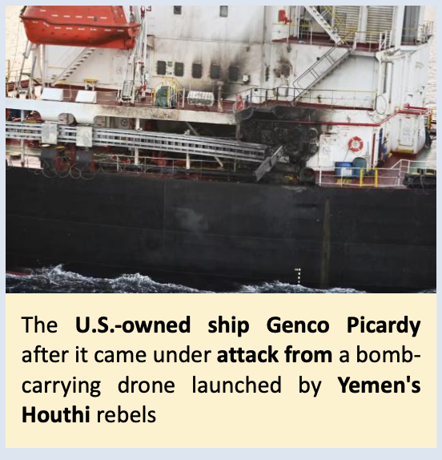
- Low-cost drones have completely changed the rules of modern warfare for instance: - Houthi rebels used cheap drones to successfully attack a U.S. ship, forcing the American military to spend over a billion dollars on expensive missiles just to shoot them down. - In the Ukraine war, simple commercial drones fitted with grenades are being used for deadly attacks and reconnaissance against advanced armies. - This creates a huge problem for powerful militaries, which are built to fight other big nations, not swarms of inexpensive drones. To counter this, countries are now racing to develop cheaper, cost-effective counter-drone solutions. - Drone Warfare During Operation Sindoor -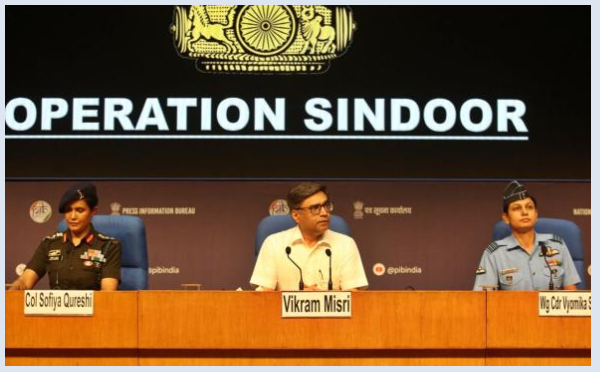
- During the conflict surrounding Operation Sindoor, drones became the main weapon for both India and Pakistan. This was the first time unmanned systems played such a central and coordinated role in a conflict between the two nuclear-armed neighbors, marking a new chapter in modern warfare. - India’s Drone-Led Offense -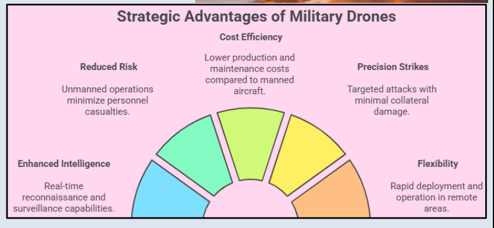
- From the very beginning of Operation Sindoor, India integrated drones into its attack plans. The initial strikes on terror camps were supported by loitering munitions (also called kamikaze drones) to ensure precision and effectiveness. - The initial assault included the use of SkyStriker suicide drones, which carry a 10kg warhead. - As the conflict escalated, India retaliated against Pakistani aggression by using advanced Israeli-made Harop drones to destroy key Pakistani air defence and radar sites. - Pakistan’s Mass Drone Counter-Attack - Pakistan’s response, named Operation Bunyan al-Marsus, was a massive drone-led assault. - In a major offensive between May 8th and 9th, Pakistan launched an estimated 300-400 drones from 36 different locations. - These were likely Turkish-made Asisguard Songar drones and were used to target Indian military installations across a wide area, including in Jammu & Kashmir, Punjab, Rajasthan, and Gujarat. - The Defensive Battle - To defend against this large-scale drone attack, India activated its Integrated Counter-UAS (Unmanned Aerial Systems) Grid. This created a powerful, multi-layered defensive shield using a combination of systems: - The Russian S-400 Triumf long-range system. - India-Israel jointly developed Barak-8 MRSAM. - The indigenous Akash missile system. - India also used its own Harpy drones in a counter-attack role. - This drone war highlights a major shift in modern conflict. Both countries used drones as a less risky first step than sending manned jets, allowing them to test each other’s defenses. - India’s efforts to combat drone threats include public awareness campaigns in border areas, encouraging citizens to report suspicious activities, and international collaboration for intelligence sharing. To further enhance security, India could invest in advanced drone detection systems, establish dedicated drone response units, improve regulatory frameworks, and increase research and development for innovative anti-drone technologies, ensuring comprehensive defense against evolving drone threats. -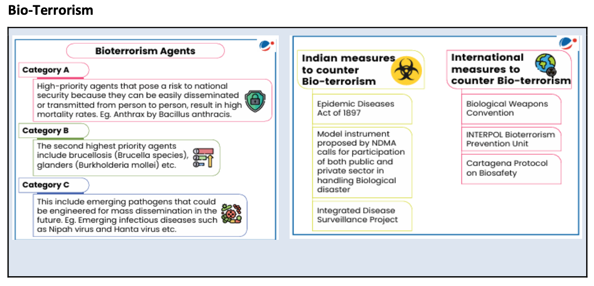
- 3.1.4.2. Shifting Battlegrounds- From Borders to Cities and Individuals - While border regions remain volatile, the focus of modern terrorism has increasingly shifted to cities and towns, a phenomenon known as Urban Terrorism. - Why Cities are Prime Targets: - Anonymity and Logistics: - The diverse and dense population of cities provides anonymity, making it harder to detect terrorists. Logistical needs like transportation, communication, and arms are also more readily available. - High-Impact Targets: - Cities contain critical infrastructure, mass gatherings, and symbolic landmarks. Attacking these maximizes casualties and media attention, spreading fear more effectively. The 2008 Mumbai attacks are a classic example of a coordinated urban terror assault. - Media Amplification: - With a heavy concentration of print and electronic media, cities guarantee that the “propaganda by the deed” is broadcast instantly and widely. - Lone Wolf Terrorism in India- Coimbatore & Bengaluru Cases -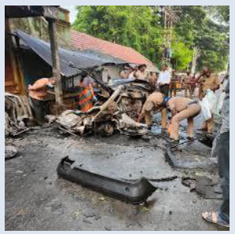
-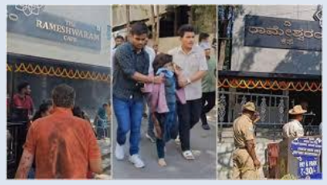
- India is facing a growing threat from lone wolf terrorism, where individuals, radicalized in isolation, carry out attacks on their own. - Recent incidents like the Coimbatore car explosion (October 2022) near a temple and the IED blast at Bengaluru’s Rameshwaram Cafe (March 2024) highlight this dangerous trend. In both cases, a single attacker operated with minimal external support, using homemade bombs to target civilians. - These lone wolf attackers are a major challenge because they are incredibly difficult to detect. Fueled by online extremist content, they operate without a group, making them elusive yet dangerous to internal security. - 3.1.4.3. The Invisible Ecosystem of Terror- Over-Ground Workers and Sleeper Cells - 1. Over-Ground Workers (OGWs) -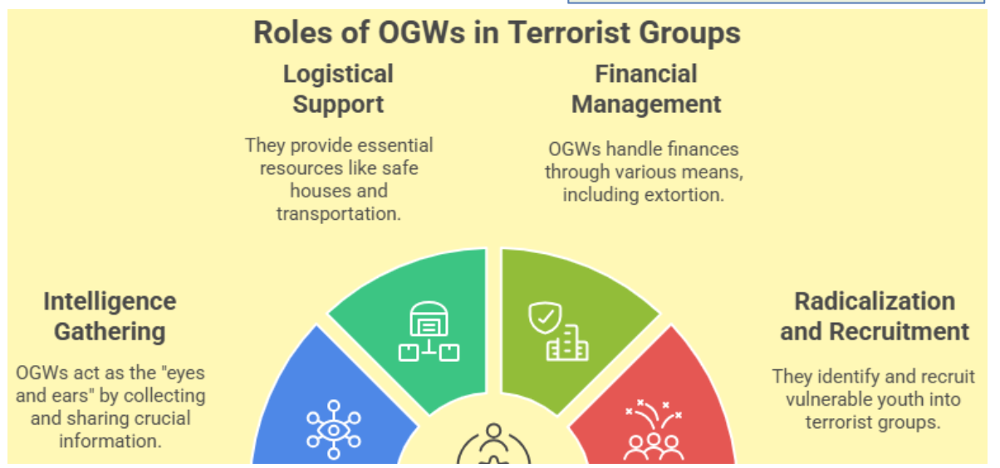
- The network of Over-Ground Workers (OGWs) is the invisible logistical and ideological backbone that sustains terrorism and insurgency on the ground. - OGWs as the “Eyes and Ears” and Logistical Backbone - OGWs are not armed combatants, but they are essential for the survival and operations of terrorist organizations. Operating under civilian cover, they act as the “lifeline” for these groups, linking underground cadres with the local population. Their covert nature makes them difficult to identify and prosecute. - Pulwama’s (2019) Hidden Facilitators- The OGW Network -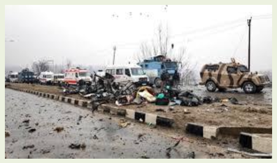
- The 2019 Pulwama attack unequivocally highlighted the critical role of Over-Ground Workers (OGWs). - Investigations into this specific incident confirmed OGWs, the logistical backbone for terrorists, provided the explosives-laden car and crucial support like shelter for the perpetrators. - 2. Sleeper Cell - A sleeper cell is a hidden group of terrorists or spies who live normal, unnoticed lives within a community. They remain inactive for years until they are “activated” by overseas handlers to carry out attacks, gather intelligence, or provide support for operations. - Delhi ISI Sleeper Cell (2025): - Delhi Police arrested two ISI agents, including a Nepali national, for leaking sensitive military information to Pakistan. - ISIS Sleeper Cell in Pune (2023–2025): - NIA arrested two radicalized Indians linked to an ISIS module that conducted bomb-making workshops and planned terror attacks. - These sleeper cells are extremely difficult to detect because their members blend in so well with the local population. They often use encrypted communication and engage in long-term planning, posing a serious and widespread challenge to India’s internal security. - 3.1.4.4. The Blurring Lines- Grey-Zone Warfare -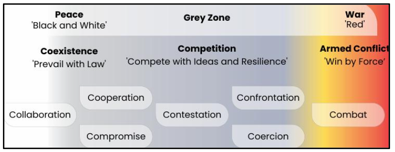
- One of the most complex challenges today is Grey-Zone Warfare, which involves the use of unconventional tactics that fall just below the threshold of traditional war. The goal is to weaken an adversary without triggering a full-scale military response. - Key Tools of Grey-Zone Warfare: - Cyber Operations: - Hacking critical infrastructure, such as the 2020 cyberattack on the power grid in Maharashtra. - Information Warfare: - Using propaganda, fake news, and social media manipulation to create social division and undermine trust in government. - Economic Coercion: - Imposing trade restrictions or manipulating markets to damage a target nation’s economy. - Support to Proxy Forces: - This is a classic tactic where a state supports non-state actors like insurgents or terrorists to fight on its behalf. - Pakistan’s “Deep State” (influential elements within its military and intelligence agencies) has historically used terrorism as a foreign policy instrument, nurturing groups like Lashkar-e-Taiba (LeT) and Jaish-e-Mohammed (JeM) as strategic assets against India. This is a prime example of grey-zone conflict through proxy forces. - 3.1.4.5. Evolving Threats- From Military Targets to Civilians in Jammu & Kashmir - Over the past five years, Jammu & Kashmir (J&K) has witnessed a troubling shift in terrorism patterns, with increasing attacks on civilians and tourists. These incidents have primarily targeted religious minorities and non-local visitors, indicating a new strategy by militants to create communal divisions and disrupt the region’s economy, particularly tourism. - Targeting Religious Minorities and Tourists - Sectarian Attacks: - Terrorists have deliberately targeted Hindu and Sikh minorities, as well as tourists visiting pilgrimage sites. The attacks often single out victims based on their religious identity, as seen in the 2025 Pahalgam massacre, where Hindu tourists were separated and executed based on religion. - Tourism Under Attack: - Tourism has been a frequent target, especially during the spring and summer months, a crucial time for the local economy. Attacks on hotels, pilgrimage convoys, and travel routes have been aimed at derailing efforts to revive tourism in the region. -| Year | Major Attack/Incident | Location | Target | Key Features |
|---|---|---|---|---|
| 2017 | Amarnath Yatra massacre | Anantnag, J&K | Hindu pilgrims (Amarnath Yatra) | Bus ambushed; 8 killed, 18 injured; LeT blamed |
| 2021 | Series of attacks on minorities | Various (J&K) | Minorities, migrant workers | Attacks near temples and transit points |
| 2024 | Reasi bus attack | Reasi district, Jammu | Hindu pilgrims | Ambush; bus plunged into gorge; 9 killed, 41 injured |
| 2025 | Pahalgam massacre | Pahalgam, Kashmir Valley | Hindu, Christian tourists | Religion-based segregation and killings; 26 killed |
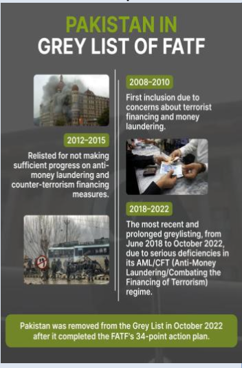
- FATF’s grey-listing (2018-2022) inflicted substantial economic pain on Pakistan, estimated at $38 billion. - Under this international pressure, Pakistan notably convicted Hafiz Saeed on terror financing charges. - Despite China providing a diplomatic shield, this case exemplifies how global financial pressure can compel states to act against terrorist financing. It underscores FATF’s powerful role in international security. - Cutting Terror Funds- Hawala to Crypto - India’s FIU-IND actively combats terror financing via Hawala crackdowns, freezing significant funds (e.g., ₹1,200 cr scale in 2022-23) and initiating PMLA cases. - However, crypto-financing presents a crucial, evolving unregulated gap. This highlights the continuous challenge of disrupting illicit financial flows for terrorism across new digital channels. - Operation Sindoor -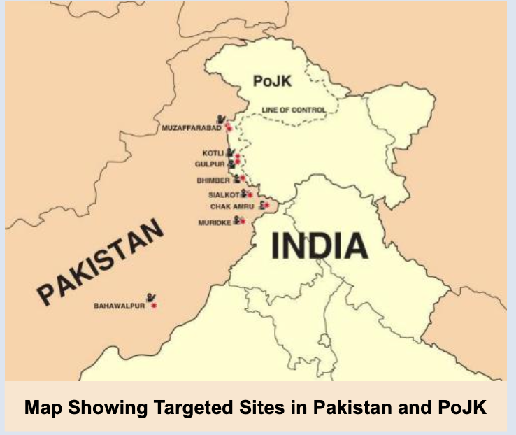
- Operation Sindoor, launched in May 2025, was a significant military campaign in response to the Pahalgam terror attack. This operation marked a pivotal shift in India’s national security strategy, transitioning from a longstanding policy of strategic restraint to a more assertive and proactive security posture. - In this operation, Indian fighter jets used advanced stand-off weapons, launching their attack from within India’s own territory. - They relied on two main systems: - the SCALP, a stealthy cruise missile designed to hit targets deep inside enemy lines, and the HAMMER, a jam-proof, all-weather precision bomb. - The mission also involved SkyStriker suicide drones, each capable of carrying a 10kg warhead. - Key Highlights: - End of Strategic Restraint: - Operation Sindoor signified the end of India’s policy of strategic restraint, marking a shift to a more assertive security approach. This new approach clearly established “redlines,” declaring state-sponsored terrorism as an act of war and rejecting the use of nuclear blackmail. - Operation Sindoor showcased the Cold Start Doctrine in action, with India launching swift, precise conventional strikes inside Pakistan in response to terror attacks, without triggering nuclear escalation. - Commitment to Decisive Retaliation: - The operation demonstrated India’s readiness to take decisive retaliatory action, targeting terror infrastructure across Pakistan. The campaign included military and non-kinetic actions aimed at weakening terrorist networks. - In a recent statement, India’s National Security Advisor confirmed that the military had identified and struck 9 terror-related targets across the border, successfully eliminating all without a single failure. - Imposing Tangible Costs on Pakistan: - The operation underscored India’s commitment to imposing tangible costs on Pakistan for its role in sponsoring terrorism, reshaping regional security dynamics. - India launched precision strikes on 11 Pakistani airbases—including Nur Khan, Sargodha, Bholari, and Skardu—and simultaneously destroyed major terror infrastructure across Muzaffarabad, Kotli, Rawalakot, and Bagh, including the demolition of Masjid wa Markaz Taiba in Muridke (LeT HQ) and Jamia Masjid Subhan Allah in Bahawalpur (JeM HQ). - Surgical Strike (2016) - A few years earlier, in September, 2016, the Indian Army carried out a surgical strike in direct response to a terrorist attack by Pakistan-based militants on an Indian Army camp in Uri, Jammu & Kashmir, on September 18, 2016, which resulted in the deaths of 19 Indian soldiers. - India launched a coordinated military operation across the Line of Control (LoC) into Pakistan-occupied Kashmir. - Elite Indian Special Forces targeted multiple terrorist launch pads, where militants were preparing to infiltrate into Indian territory. - The operation, called a “surgical strike” by the Indian government, was highly precise, limited in scope, and designed to avoid escalating the situation while showing India’s ability to respond decisively against cross-border terrorism. - By publicly owning the operation, India shifted its defense stance from strategic restraint to a more assertive approach towards Pakistan’s use of terror groups as proxies in Kashmir. The surgical strike sent a strong political and military message to Pakistan, signaling that India would act decisively to defend its sovereignty and would no longer tolerate cross-border terrorism. - India’s 5 Point Non-military Measure against Pakistan after Pahalgam Attack - India’s national security strategy has evolved sharply in response to cross-border terror attacks like the Uri strike (2016) and Pulwama bombing (2019), both linked to Pakistan-based groups such as Jaish-e-Mohammed (JeM) and Lashkar-e-Taiba (LeT). Post-2016 Uri Attack and 2019 Abrogation of Article 370, India’s approach has become more assertive, with actions like the surgical strikes (2016), Balakot Airstrikes (2019) and Operation Sindoor (2025), marking a shift from restraint to ‘deterrence by punishment’, holding terrorists and their state sponsors directly accountable. - Unlike earlier responses, Operation Sindoor was followed by a 5-point non-military strategy: - Suspension of the Indus Waters Treaty: - India has suspended the 1960 Indus Waters Treaty with Pakistan, halting river water sharing until Pakistan ends its support for cross-border terrorism. - Closure of Attari-Wagah Border Check Post: - India has shut the Attari-Wagah border, halting cross-border movement of people and goods, except for those with valid documents, who can return by May 1, 2025. - Cancellation of SAARC Visa Exemption Scheme (SVES): - Background - The SAARC Visa Exemption Scheme (SVES) is an initiative launched under the South Asian Association for Regional Cooperation (SAARC) to facilitate easier movement of people among the member states — Afghanistan, Bangladesh, Bhutan, India, Maldives, Nepal, Pakistan, and Sri Lanka. - The exemption is not for all citizens, but for specific categories of individuals who are seen as contributors to regional connectivity and diplomacy like diplomats, gov. officials, journalists, sports persons, cultural delegates, etc - India has revoked the SAARC Visa Exemption Scheme for Pakistani nationals, canceling all issued visas and giving a 48-hour deadline for those in India to leave. - Expulsion of Pakistani Military Advisors: - India has expelled all Pakistani military, naval, and air advisors from the High Commission in New Delhi, with a reciprocal withdrawal of Indian military advisors from Islamabad. - Reduction of Diplomatic Personnel: - India will reduce its diplomatic staff in Islamabad to 30 by May 1, 2025, down from 55, further limiting bilateral engagement. - Together, these actions will ensure a more comprehensive and lasting impact of India’s response. -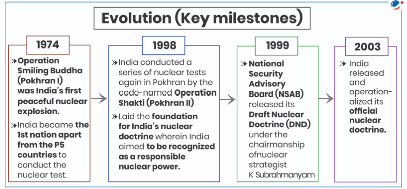
- India’s Nuclear Doctrine and Operation Sindoor- Evolving Policies and Responses -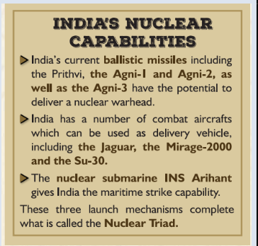
- India’s Nuclear Doctrine is based on Credible Minimum Deterrence (CMD) and a commitment to No First Use (NFU)—meaning nuclear weapons will be used only in retaliation to a nuclear attack. In such a case, India promises Massive Retaliation, ensuring Mutually Assured Destruction (MAD) to deter first use by adversaries. - It also pledges non-use against non-nuclear weapon states, reinforcing India’s image as a responsible nuclear power. However, India reserves the right to respond with nuclear weapons in the event of chemical or biological attacks. - The doctrine is controlled by the Nuclear Command Authority (NCA): - The Political Council, chaired by the Prime Minister, authorises use. - The Executive Council, led by the NSA, executes the order. - Following recent terror attacks emanating from Pakistan (Uri till Pathankot), there have been strong calls to review the doctrine, especially the NFU policy. The turning point in this doctrine came with Operation Sindoor, where India launched swift conventional action despite Pakistan’s nuclear threats. - Although the doctrine hasn’t been officially updated, many analysts noted that India “called off the nuclear bluff” — challenging Pakistan’s assumption that it could use tactical nuclear threats to shield terrorism or proxy warfare. Some commentators argued that Op Sindoor effectively neutralised Pakistan’s preemptive strike posture, without breaching India’s public nuclear stance. - Israel’s Integrated Security Model - The “Whole-of-Government” approach emphasizes integrated, collaborative security efforts. Israel’s National Security Council exemplifies this as a best practice model, merging Mossad, IDF, and cyber units. - This seamless integration ensures comprehensive coordination across intelligence, military, and digital domains. It’s crucial for swift, unified responses to complex national security challenges, demonstrating effective strategic synergy. - 4. Addressing India’s Evolving and Interconnected Security Challenges - “Security is not a department; it is a culture.” – K. Subrahmanyam - India’s security challenges are multifaceted and interconnected, requiring a comprehensive and coordinated approach to safeguard its sovereignty and stability. - Addressing the Interconnected Nature of External Threats - India’s security challenges are deeply interconnected, involving hostile state actors, violent non-state actors, and organized crime syndicates. - New domains like cyberspace and information warfare amplify traditional threats, creating a complex security environment. - Adopting a Dynamic, “Whole-of-Government” Approach - A static or siloed response is ineffective. India must implement a dynamic strategy, requiring seamless coordination among various agencies such as the Home Affairs, Defence, External Affairs, and financial intelligence agencies. - The approach should integrate diplomatic, military, and internal security responses to address evolving threats. - Building National Resilience - Strengthening India from within is crucial. This involves economic development, social cohesion, and reinforcing democratic institutions to ensure all citizens feel secure. - A strong, united, and prosperous India is the best defense against external threats undermining its stability. - Side note - Israel's Integrated Security Model - The "Whole-of-Government" approach emphasizes integrated, collaborative security efforts. Israel's National Security Council exemplifies this as a best practice model, merging Mossad, IDF, and cyber units. - This seamless integration ensures comprehensive coordination across intelligence, military, and digital domains. It's crucial for swift, unified responses to complex national security challenges, demonstrating effective strategic synergy. - 4.1. National Security Strategy- India’s Urgent Need - An NSS is a concise summary (formal policy document) of a country’s strategic vision and objectives, encompassing both domestic and external challenges. It addresses traditional and non-traditional threats and opportunities, and is updated periodically to remain relevant to evolving security dynamics. - Why does India need a written National Security Strategy? - Lack of Written Policy & Continuity in Defence Planning: - India’s National Security Strategy (NSS) relies on the 2009 Raksha Mantri’s operational directive, which remains outdated. The absence of 5-year and long-term defence plans adds urgency to formalizing an updated, coherent NSS for strategic consistency. - Meet Changing Security Dynamics & Framework for Long-term Planning: - A written NSS would ensure regular reviews of global security trends and evolving threats like hybrid warfare and Chinese naval growth, fostering long-term planning while avoiding short-term, ad-hoc decisions on national security issues. - Strategic Signaling in World Order: - An NSS will clarify India’s strategic intent, solidify its role as a security provider in the Indian Ocean, and strengthen cooperation with international partners, highlighting India’s commitment to global security. - Operational Clarity & Reduce Ambiguity: - An NSS will provide operational clarity on key decisions such as delegation and theatre command operationalization, reducing ambiguity and enabling accountability, serving as a reference for think tanks to assess and refine security strategies. - Adopt Whole of Nation Approach: - A well-defined NSS will build synergy among national institutions, effectively coordinating operations to leverage comprehensive national power in addressing multi-dimensional security challenges. - Challenges in Codifying NSS in India - Lack of Political Will - Political consensus on national security issues is lacking, and concerns over accountability, along with limited expertise on defence matters, have hindered the formulation of a formal National Security Strategy (NSS). - Loss of Strategic Flexibility - Implementing an NSS would lock the political leadership into a specific approach, whereas ad-hoc policymaking allows flexibility, similar to how Israel operates without a formalized NSS. - Resource Allocation - Effective implementation of the NSS requires adequate financial resources, human resources, and capability-building to meet its objectives, which has been a challenge in India. - Weak Institutional Support and Policy Feedback - India has only a few defence and security think-tanks, leading to a lack of strong institutional support and policy feedback, which limits the effectiveness of the National Security Strategy. - India’s Previous Steps Taken to Draft NSS - The Kargil Review Committee Report (2000): - It provided recommendations on national security, but did not lead to immediate National Security Strategy (NSS) formulation. - The Naresh Chandra Committee on Security (2011): - Facilitated comprehensive security reforms discussions, but failed to drive the actual development of a formal NSS. - The Defence Planning Committee (2018): - Chaired by the National Security Advisor, this permanent body is tasked with preparing a draft National Security Strategy. - Hooda Committee (2018): - The Hooda Committee was formed to propose a comprehensive National Security Strategy to address evolving security challenges and enhance India’s defense capabilities. It suggested tenets for the draft NSS, such as global role, neighbourhood stability, internal peace, economic security, and strengthening capabilities in maritime borders, space, and strategic communications. -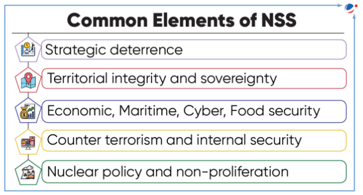
- National Security Strategy (NSS) should outline clear ends, ways, and means, leveraging delegation, synergy, and operational freedom. It should encourage initiative, innovation, and improvisation at the cutting-edge level. - The Doval Doctrine- India’s Assertive Security Paradigm - The Doval Doctrine, developed by National Security Adviser Ajit Doval, represents a shift from passive restraint to a proactive, decisive, and pre-emptive approach in India’s security strategy. It emphasizes national defense, counter-terrorism, and strategic deterrence, based on Doval’s experience in counter-insurgency and intelligence. - Key Tenets of the Doval Doctrine - Proactive National Defense: - India reserves the right to act offensively to neutralize threats, as seen in the 2016 surgical strikes and 2019 Balakot airstrikes. - Defensive-Offense Strategy: - A graduated response spectrum from defensive to offensive, signaling strong retaliation. - Zero Tolerance Towards Terrorism: - Terrorism and its sponsors are equally targeted, with an uncompromising response to all forms of cross-border terrorism. - Whole-of-Government Approach: - Military, intelligence, police, and diplomatic arms coordinate in a unified strategy. - Psychological and Informational Warfare: - Doval’s doctrine includes countering radical narratives and waging information wars. - Security and Development Integration: - Combining security operations with development initiatives, particularly in Kashmir and Left-Wing Extremism. - No Compromise on Sovereignty: - India’s sovereignty and territorial integrity are non-negotiable, particularly against expansionist threats. - Doctrine in Action - 2016 Surgical Strikes & 2019 Balakot Airstrikes: - Decisive actions in response to cross-border terrorism. - Abrogation of Article 370 (2019): - Integration of Jammu & Kashmir using both hard and soft power. - Crackdown on Radical Groups: - Operations against extremist funding and support networks. - China Standoff: - Forward deployment and muscular diplomacy against China’s expansionism. UNIT 3- CHALLENGES TO INTERNAL SECURITY THROUGH COMMUNICATION NETWORKS, BASICS OF CYBER SECURITY AND ROLE OF MEDIA AND SOCIAL NETWORKING SITES IN INTERNAL SECURITY CHALLENGES - "Cyberspace is the fifth domain of warfare, alongside land, sea, air, and space." – General Bipin Rawat, India’s first Chief of Defence Staff - 1. Communication Networks and Cyberspace -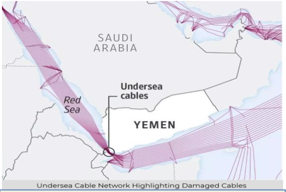
- The 21st century has introduced cyberspace and communication networks as critical domains of conflict, essential to national security. This digital ecosystem, comprising both physical and intangible infrastructure, has become a key driver of progress and a significant vector for internal security threats. - Communication Networks - Communication networks form the backbone of cyberspace, comprising both tangible and intangible infrastructure: - Physical Infrastructure: - Includes optical fiber cables, undersea cables, and satellites that connect global communication systems. - Wireless Infrastructure: - Covers cellular networks (from 2G to 5G), Wi-Fi, and other radio-based systems facilitating wireless communication. - Hardware and Software: - Includes routers, servers, mobile devices, and the protocols governing their interactions. - Emerging Technologies: - The Internet of Things (IoT), which links a vast network of interconnected sensors and devices. - Cyberspace - -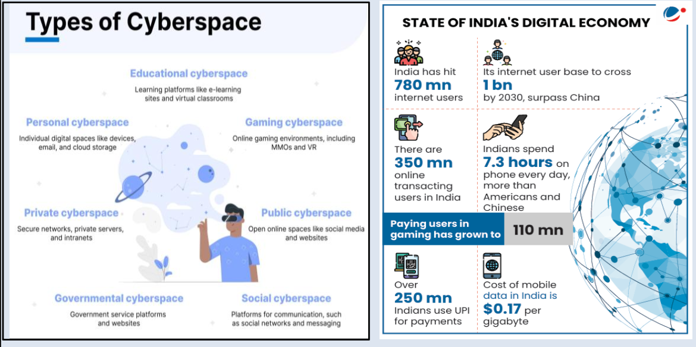
- Defined by India’s National Cyber Security Policy (2013), cyberspace is described as a "complex environment" involving interactions between people, software, and services supported by global ICT networks. - Cyberspace is a global domain consisting of interconnected networks, computer systems, and embedded processors. Unlike traditional physical domains, cyberspace is borderless, intangible, and offers anonymity to actors, making it incredibly difficult to defend against malicious activities. - This evolving digital landscape presents significant challenges to national security, requiring robust strategies to safeguard communication networks and cyberspace. - Undersea Cables- Global Internet's Fragile Lifelines - In 2024, damage of undersea cables in the Red Sea disrupted 25% of data traffic between Europe and Asia. This authentic incident exposed critical vulnerabilities in global internet infrastructure. - Such physical threats to vital communication networks pose a significant cybersecurity challenge. Protecting these fragile lifelines is crucial for maintaining global connectivity and economic stability. - 1.1. Criticality of Communication Networks for National Security -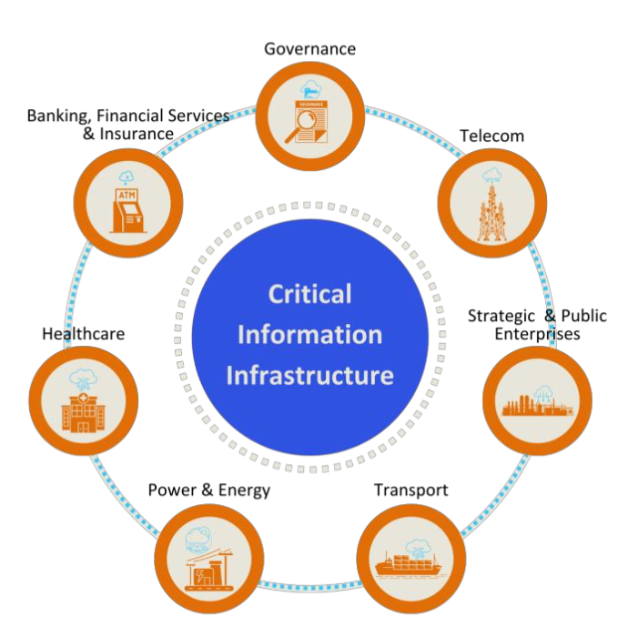
- The increasing integration of communication networks into every aspect of modern life has made them essential for national functioning. As a result, these networks have become high-value targets for adversaries seeking to disrupt national security. - Networks as Critical Information Infrastructure (CII) - Under Section 70 of India’s Information Technology (IT) Act, 2000, certain digital assets are designated as Critical Information Infrastructure (CII). - CII is defined as "computer resources, the incapacitation or destruction of which, shall have a debilitating impact on national security, economy, public health, or safety." - This official recognition highlights the paramount importance of securing these networks. - Recently, the IT resources of ICICI Bank, HDFC Bank, and NPCI were declared as CII. - Interdependence of National Sectors and the "Cascading Effect" - Modern critical sectors such as finance, energy, banking, transport, healthcare, and defence are deeply interconnected and depend heavily on communication networks. A failure in one network can trigger a "cascading effect" across other sectors. - For instance, a disruption in the communication network of the power grid could paralyze the banking system, transportation networks, and even emergency services, leading to widespread chaos. - Importance for National Initiatives and Associated Vulnerabilities - The success of major government initiatives like Digital India, Smart Cities Mission, and the expansion of e-governance is heavily reliant on a stable and secure digital ecosystem. - India now has over 820 million active internet users, including a large proportion in rural areas. While this drives progress, it also vastly expands the attack surface, increasing the vulnerability of both the population and national infrastructure to cyber threats. - The Current State of Cybersecurity in India -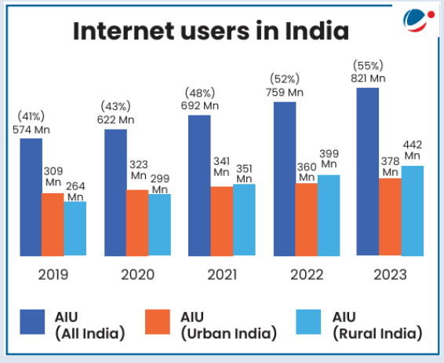
- India is rapidly becoming a digital society, with over 820 million active internet users today. More than half of these users, 442 million, are from rural areas, and the total user base is projected to cross 1 billion by 2030. While this massive growth, fueled by government programs like Digital India, drives progress, it also makes the country a prime target for cyber threats. - The scale of the problem is alarming. According to the National Crime Records Bureau (NCRB), India saw a 24% rise in registered cybercrimes in 2022 compared to the previous year. The primary motive for these crimes is fraud, accounting for nearly 65% of all cases, followed by extortion (5.5%) and sexual exploitation (5.2%). Globally, a 2021 FBI report ranked India third in the world among the top 20 countries victimized by internet crimes. The intensity of these threats is also increasing, with the average Indian organization facing 2,807 cyber-attacks per week in the first quarter of 2024—a 33% increase from the year before. - India has experienced several high-profile cyber-attacks that highlight its vulnerabilities: - In 2012, a major breach compromised the email accounts of about 12,000 people, including officials from the Ministry of Home Affairs, DRDO, and the Indo-Tibetan Border Police (ITBP). - In 2013, the Nuclear Power Corporation of India (NPCIL) reported that it had to block up to ten targeted attacks per spokesman. - In 2016, a massive data breach comprised 32 lakh debit cards across the country. - The hacker group ‘Legion’ claimed to have accessed over 40,000 servers in India, including those of private hospital chains and some Indian banks. - Food-tech company Zomato had the data of 17 million users stolen and put up for sale on the dark web. - The global WannaCry ransomware attack impacted thousands of computers in India, including systems belonging to the Andhra Pradesh police and utilities in West Bengal. - The Petya Ransomware attack in 2017 disrupted container handling functions at a terminal in Mumbai’s Jawaharlal Nehru Port Trust. - 2. Threats in the Digital Domain- Cyber Warfare, Crime, and Terrorism - The digital domain has become a battleground where adversaries target the infrastructure that supports a nation’s economy and governance. These cyber threats, which range from state-sponsored cyber warfare to financially motivated cybercrime, aim to paralyze, disrupt, and inflict economic and strategic damage. - 2.1. State-Sponsored Cyber Warfare and Espionage -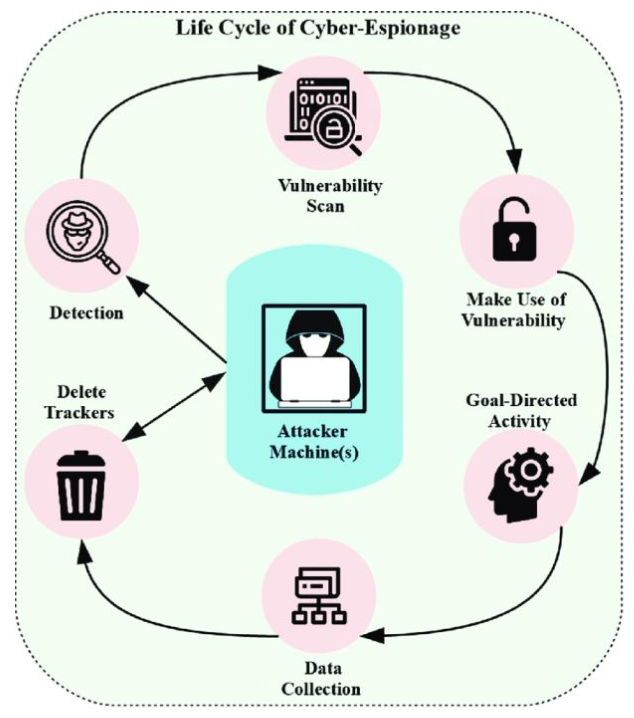
- Nations now use cyberspace as a primary tool of state power. Government-backed actors conduct aggressive attacks to disrupt infrastructure or carry out covert espionage to steal secrets, turning the digital world into a new battlefield for international conflict. - 2.1.1. Cyber Warfare- State-Sponsored Digital Assaults - Cyber warfare is the use of computer technology by a state to disrupt the activities of another state, typically by attacking information systems for strategic or military purposes. - Objective: - Disable or destroy an adversary's critical infrastructure, such as power grids, financial systems, and military networks. - Case Study (International): - The Stuxnet worm was a sophisticated, state-sponsored malware designed to damage Iran’s nuclear centrifuges by manipulating their industrial control systems. - Indian Context (Operation Sindoor, May 2025): - The conflict following Operation Sindoor marked the first time cyberspace became an active and coordinated theatre of war between India and Pakistan. Pakistani threat actors, often with support from China, launched a massive wave of attacks to create a "fog of war", including: - Distributed Denial of Service (DDoS) Attacks: - A spike in DDoS attacks targeted at least 15 major Indian government organizations, including the Income Tax Department, Hindustan Aeronautics Limited (HAL), and Indian Railways. - A report by Maharashtra Cyber recorded over 1.5 million cyberattacks during the crisis period. - Malware Deployment: - A prominent Pakistani group, APT-36 (also known as Transparent Tribe), deployed malware like the Crimson Remote Access Trojan (RAT) to target Indian government and defence personnel and harvest sensitive information. - Website Defacements: - A familiar tactic was the defacement of Indian websites, including that of the Armoured Vehicle Nigam Ltd, a defence public sector unit. - 2.1.2. Cyber Espionage- Covert Theft of Sensitive Data - Cyber espionage involves the illicit access of confidential information through computer networks, aimed at stealing strategic, military, or economic secrets. - Case Study (International): - The NSA surveillance program, revealed by Edward Snowden, exposed large-scale data collection and espionage globally, including against India. - Case Study (China): - The Zhenhua Data leak revealed a Chinese company linked to its government, collecting vast personal data on foreign leaders, military figures, and influential individuals, highlighting digital espionage for "threat intelligence". - Side note - Stuxnet- Cyber Warfare Physical Impact - Stuxnet (2010), a US-Israeli cyberweapon (Operation Olympic Games), destroyed around 1,000 Iranian nuclear centrifuges. This marked the first known cyber attack causing physical destruction. - It starkly demonstrated Critical Information Infrastructure (CII)'s vulnerability to state-sponsored attacks. This case cemented cyberspace as a new, potent domain of warfare, with real-world consequences. - 2.2. Cybercrime- Attacks for Disruption and Financial Gain - Cybercrime encompasses a wide range of illegal activities conducted over digital platforms. These attacks exploit vulnerabilities in systems and human behavior—affecting individuals, businesses, and government infrastructure—all with the intent of financial gain, data theft, or geopolitical disruption. - 2.2.1. Extortion-Based Attacks- Coercion for Profit - These sophisticated crimes use intimidation and digital lockdowns to force victims to pay money, representing a severe and growing threat. - Ransomware Attacks: - - Ransomware remains one of the most damaging forms of cyber extortion. In these attacks, malware encrypts key files and systems, demanding payment—usually in cryptocurrencies—for access to be restored. India saw a record 69% surge in ransomware attacks between 2022 and 2023. Cyber threat reports also note healthcare and public infrastructure sectors as prime targets due to their lack of real-time backup systems. - Case Study: - AIIMS New Delhi Ransomware Attack (2022) India’s premier medical institute, AIIMS, suffered a crippling ransomware attack in November 2022. The attack paralyzed its patient registration, diagnostic, billing, and eHospital systems for over two weeks. The attackers, suspected to be Chinese-origin cybercriminals, demanded nearly ₹200 crore in cryptocurrency and leaked patient data online. - Digital Arrest Scams: - - A rising form of social engineering cybercrime, digital arrest scams saw a dramatic increase in 2024. Criminals impersonate law enforcement agencies like the CBI or cybercrime branch, using fabricated arrest warrants and fake documentation to threaten victims. The scam's success relies on a combination of psychological manipulation (using fear and authority) and digital. Victims are coerced into “digital house arrest” by staying on continuous video calls and paying hefty “bail” amounts. - In just three months of 2024, over ₹120 crore was lost due to these scams. In many cases, foreign-based call centers and WhatsApp numbers were traced as the source of the crime. - 2.2.2. Theft and Fraud-Based Attacks- Stealing Data and Money -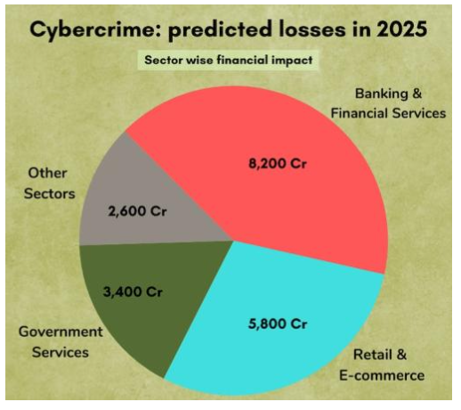
- These attacks are focused on illicitly acquiring funds or valuable personal information through technical breaches and deception. - Hacking Financial Systems & Accounts: - There has been a flagged rise in unauthorized remote access fraud, with criminals taking control of desktops via fake customer support links (e.g., AnyDesk scams). A major scam in February 2024 breached YES Bank’s UPI services, affecting over 12,000 users with estimated losses exceeding ₹10 crore. - Credit/Debit Card Data Theft: - Card cloning and skimming scams have become the most reported online financial fraud, making up 42% of all cyber complaints. Leaked datasets with millions of Indian card details were found on the dark web in May 2025, traced to breaches in payment gateway plugins. - Phishing Attacks: - Phishing continues to be a primary technique for credential theft in India. A recent mass phishing campaign impersonated the Income Tax Department, targeting PAN and Aadhaar holders by offering fake refunds. In April 2025, cyber police in Hyderabad busted a ring stealing KYC data from over 1.6 lakh Indians and selling it online. - Main Cyber Players and Their Motives - - Cyber Criminals: - Seeking commercial gain from hacking banks and financial institutions, as well as phishing scams and computer ransomware. - Phishing is a broad term for cyberattacks that use social engineering to trick victims into paying money, handing over sensitive information, or downloading malware. - Cyber Terrorists: - With the mission to penetrate and attack critical assets and national infrastructure for aims relating to political power and “branding”. - Cyber Hacktivists: - Groups such as “Anonymous” with political agendas that hack sites and servers to virally communicate the “message” for specific campaigns. - 2.3. Cyber Terrorism- The Digital Front of Fear - Cyber terrorism is the politically or ideologically motivated use of technology to carry out disruptive attacks against computer systems and networks. The primary goal is not financial gain, but to instill fear, cause widespread harm, or intimidate a society to achieve a political objective. It represents a modern form of terrorism where the battlefield is digital, but the consequences can be devastatingly real. - Objective: - To destabilize society by attacking critical national infrastructure, generate widespread fear through high-profile disruptions, and advance a political, religious, or ideological agenda by causing severe economic damage or even loss of life. - Primary Methods: - Disruptive Attacks: - Crippling essential services using Distributed Denial of Service (DDoS) attacks. During Operation Sindoor (May 2025), over 1.5 million DDoS attacks were recorded against Indian digital infrastructure, targeting the Income Tax Portal, Indian Railways, and HAL. Botnets traced to Pakistani and Chinese locations were linked to these attacks. - Infrastructure Sabotage: - Introducing malicious software like the Stuxnet worm to damage physical systems, such as power grids or industrial controls. Malware families such as Emotet, Lokibot, and Crimson RAT (used by Pakistan-based APT-36/Transparent Tribe) are actively used to target India’s strategic sectors mainly affecting small and medium enterprises (SMEs) and educational institutions. - Hacking and Data Breaches: - Infiltrating government or military networks to steal, alter, or destroy sensitive data. - Common Targets: - Critical National Infrastructure: - Power grids, water supply systems, transportation networks, and hospitals. - Government & Financial Systems: - Military command networks, emergency services, and banking institutions. - Public Information Platforms: - Media outlets, which can be manipulated to spread propaganda and misinformation. - The Key Distinction from Cybercrime: - What separates cyber terrorism from standard cybercrime is motivation. While cybercriminals seek financial gain, cyberterrorists aim for political or ideological impact. An attack to steal credit card data is cybercrime; an attack to shut down a nation's power grid to cause panic is cyber terrorism. - Global Context & Challenges: - There is currently no universal legal definition of cyberterrorism, making international cooperation complex. Meanwhile, the threat grows as attacks become more sophisticated and anonymous, with both non-state groups and clandestine state agents leveraging technology for terror. - 3. The Evolving Threat Matrix- The Next Generation of Challenges - 3.1. The Security Implications of 5G Technology - "Who controls 5G controls the battlefield."– NATO Cyber Defence Report, 2023 - The rollout of 5G technology, which promises ultra-low latency and enhanced connectivity, introduces new security vulnerabilities that could compromise both infrastructure and national security. - Increased Attack Surface and Supply Chain Vulnerabilities - Increased Attack Vectors: - With the connection of billions of devices under the Internet of Things (IoT), from smart cities to industrial control systems, 5G significantly expands the attack surface. This creates far more entry points for potential cyber attackers than 4G networks. - Software-Defined Networking: - Unlike previous generations that relied on centralized hardware, 5G networks are software-defined and virtualized, meaning an attacker controlling the software could potentially seize control of the entire network. - Supply Chain Risks: - A major concern is the reliance on foreign vendors for 5G equipment. Hardware from companies with potential links to foreign governments may contain embedded malware, spyware, or backdoors that could be exploited for espionage or to disrupt networks in times of crisis. - 3.2. Artificial Intelligence (AI) as a Dual-Use Technology - AI is a transformative technology that serves both defenders and attackers, significantly altering the landscape of cybersecurity. - 1. AI-Powered Malware and Automated Cyber-Attacks - AI-powered malware is evolving to become smarter, learning, adapting, and altering its code to evade detection by traditional antivirus systems. - Automated cyber-attacks: - AI enables large-scale automated attacks that can find vulnerabilities and exploit them without human intervention, creating a much more dangerous and effective form of cyber warfare. - 2. Deepfakes for Disinformation - Deepfakes, highly realistic AI-generated videos or audio clips, can make it appear as though individuals have said or done things they never did. - Impact: - Deepfakes can be used for disinformation, propaganda, and defamation, posing serious threats to social stability by misleading the public and inciting unrest or violence. - Deepfakes in Warfare- Zelenskyy's Test - - During the Ukraine War, a deepfake video of Zelenskyy "surrendering" circulated (notably 2022). Its aim was to demoralize troops. - This highlights AI's weaponization for information warfare. It shows how manipulated media can significantly impact morale and security. - 3. Hybrid and Grey-Zone Warfare - Hybrid warfare blends conventional and unconventional tools, including cyberattacks, information operations, and economic coercion, to achieve strategic goals without formal military conflict. - Understanding Hybrid Warfare - Hybrid Warfare combines kinetic and non-kinetic tools, operating in the "Grey Zone", a space between peace and full-scale war. It allows adversaries to act ambiguously and deniably. - Example: - Israeli and Iranian hybrid tactics involve aerospace strikes, cyber operations, assassinations, and drone warfare to target critical infrastructure. Both nations use proxy mobilization, psychological operations, and disinformation to exert influence, relying on asymmetric strategies for covert, deniable attacks. - 4. Building Digital Resilience - India’s Counter-Strategy - The digital domain is increasingly being weaponized by state and non-state actors to wage a new form of warfare. This conflict not only targets physical infrastructure but also seeks to undermine social cohesion and governance. At the heart of this warfare is Information Warfare, with the objective of controlling narratives, manipulating public opinion, and sowing discord. - This evolving threat necessitates a multi-layered approach to safeguard its critical infrastructure, counter cyber threats, and promote national security in cyberspace. - Asymmetric Warfare- Strategies of Unequal Combat - Asymmetric warfare is a conflict between two sides with very unequal military power. Instead of fighting a conventional battle they would likely lose, the weaker side uses clever and unconventional tactics. - These methods include guerrilla warfare, cyberattacks, terrorism, sabotage, and proxy warfare. The goal isn't to win a head-on fight, but to inflict damage and cause disruption through speed and surprise. - This type of conflict is often seen between a nation's regular army and non-state actors. Key examples include the war in Ukraine (against Russia), the conflict in Yemen (Houthi Rebels vs. Saudi-led Coalition), and the Israel-Palestine conflict involving groups like Hamas. - 4.1. Legal and Policy Framework - The Information Technology (IT) Act, 2000 and Amendments: - The IT Act, 2000 is India’s primary legislation for cybercrime and electronic commerce. - Amendments have strengthened the focus on cybersecurity, criminalizing identity theft, phishing, and cyber terrorism. It provides the legal basis for actions such as blocking websites and online content threatening national security. - The Digital Personal Data Protection Act, 2023: - Enacted to address data security, this Act ensures individuals' rights and data fiduciaries' obligations regarding the protection of personal data. - It establishes a Data Protection Board of India to handle grievances, ensuring accountability and minimizing data misuse. - National Cyber Security Policy (NCSP), 2013: - India’s first dedicated policy aimed at creating a secure cyberspace. It set ambitious goals, including the training of 500,000 cybersecurity professionals. However, challenges such as a shortage of skilled manpower remain, necessitating updates to the policy. - The IT (Intermediary Guidelines and Digital Media Ethics Code) Rules, 2021: - These rules regulate social media intermediaries, requiring them to appoint grievance officers, identify the first originator of harmful content, and remove content flagged by authorities. - 4.2. Institutional Architecture - CERT-In (Indian Computer Emergency Response Team): - The national nodal agency responsible for responding to cybersecurity incidents, issuing advisories, and coordinating the national response to cyber threats. - National Cybersecurity Coordination Centre (NCCC): - A cyberspace intelligence agency focused on security and electronic surveillance. It screens communications metadata to detect real-time cyber threats and coordinates with law enforcement for intelligence gathering. - NCIIPC (National Critical Information Infrastructure Protection Centre): - Mandated to protect critical infrastructure from cyber threats, NCIIPC ensures the security of key sectors like energy, banking, and healthcare. - I4C (Indian Cyber Crime Coordination Centre): - Operates under the Ministry of Home Affairs and provides a platform for citizens to report cybercrimes, ensuring better coordination between law enforcement agencies. - Role of NSCS and NCSC: - The National Security Council Secretariat (NSCS) and National Cyber Security Coordinator (NCSC) play a key role in coordinating national strategies and advising the Prime Minister’s Office on security matters. - Side note - Budapest Convention-International Cybercrime Framework - The Budapest Convention is the first legally binding international treaty on cybercrime, aiming to harmonize national laws on offenses like hacking and fraud, improve investigative techniques, and foster international cooperation for collecting electronic evidence. - India declined to sign the Budapest Convention due to concerns over sovereignty and data access provisions. Instead, India advocated for a new UN Cybercrime Convention, which was adopted in 2024 and will open for signature in 2025. - Bharat NCX 2024-Boosting Cyber Defenses - CERT-In's Bharat NCX 2024, India's largest cyber drill, simulated 2,000 attacks on vital banking and power grids. It successfully trained 150 agencies, significantly enhancing India's cybersecurity preparedness against complex threat. - National Cybersecurity Coordinator (NCSC) - The National Cybersecurity Coordinator (NCSC) was created under the National Security Council Secretariat (NSCS) to coordinate national cybersecurity efforts. It aligns the efforts of central agencies, state governments, and international bodies to secure India’s digital infrastructure. The NCSC is responsible for advising the Prime Minister’s Office (PMO) on cyber threats and policy. - Functions and Responsibilities: - NCSC leads a whole-of-government approach, coordinating cybersecurity policies across ministries and sectors. It provides strategic direction and monitors cyber threat detection, response efforts, and cybercrime investigations. It collaborates with CERT-In, NCIIPC, and sectoral regulators like RBI and TRAI to enhance national cybersecurity resilience. - Leadership: - Lt. Gen. M U Nair assumed the role of NCSC in 2023, bringing expertise in cyber warfare, signal intelligence, and communication technologies. - Key Challenges: - NCSC faces challenges in maintaining cybersecurity preparedness amidst an evolving cyber threat landscape. Strengthening its response capacity, ensuring inter-agency cooperation, and increasing international collaboration are key areas of focus to overcome these challenges. The NCSC is essential for India’s long-term cyber resilience and defense. - CyberDome- Collaborative Security - Kerala’s CyberDome is a best practice PPP initiative. It effectively links police, ethical hackers, and academia to bolster cybersecurity. Its focus on threat intelligence and drills helps protect Critical Information Infrastructure (CII). This collaborative model is crucial for robust cyber defense. - 4.3. Other Key Initiatives and Doctrines - Cyber Swachhta Kendra: - A government initiative providing free tools to citizens to detect and remove malware and botnets, promoting digital hygiene. - Cooperation with Other Countries: - India collaborates with countries like the UK, USA, China, and Singapore on cybersecurity training, information exchange, and joint combat against cybercrime. - State Government Initiatives: - Telangana: - First state with a cybersecurity policy and Cybersecurity Center of Excellence. - Kerala: - Cyberdome for police training in combating emerging cyber threats. - Maharashtra: - Cyber Safe Women initiative to raise awareness on cyber safety. - Audit of Government Websites: - Empaneling organizations to audit and implement information security best practices. - Digital Armed Force: - There is growing discourse on establishing a dedicated Cyber Command with both defensive and offensive capabilities to protect India’s cyber interests. - 4.4. United Nations Convention on Cybercrime -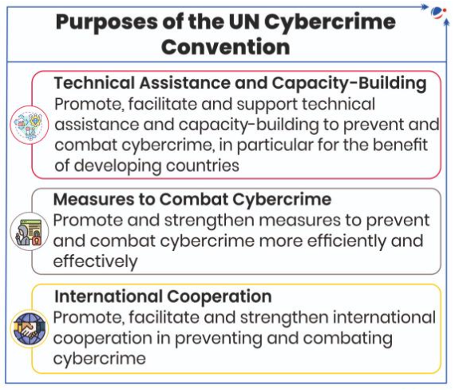
- The UN Cybercrime Convention is the first legally binding UN instrument on cybercrime, adopted by 193 member states. It focuses on preventing, investigating, and prosecuting cybercrimes, and ensures electronic evidence sharing. It will be signed in 2025, effective after 40 states join. - Key Provisions of the Convention - - International Cooperation & Data Sharing: - Facilitates mutual legal assistance, extradition, and a 24/7 network for urgent cooperation. - Procedural Measures: - Provides guidelines for law enforcement on preserving, searching, and seizing electronic data. - Protection of Personal Data: - Ensures compliance with privacy laws and encourages bilateral agreements for data sharing. - Protection of Human Rights: - Safeguards human rights and freedoms during the implementation of cybercrime procedures. - Other Provisions: - Covers extradition, transfer of sentenced persons, criminal proceedings, and joint investigations. - The Convention addresses the growing risks of cybercrime due to increased connectivity, especially in Southeast Asia. It promotes global cooperation, rapid evidence-sharing, and adaptation to technological advancements. It also ensures child protection and rehabilitates victims of cybercrimes. - 4.5 Digital Public Infrastructure - Digital Public Infrastructure (DPI) comprises shared digital systems like identity, payments, and data exchange, built on open standards. These foundational "digital rails" enable efficient, inclusive delivery of essential public and private services at a societal scale. - India's DPI, including Aadhaar, UPI, and CoWIN, is projected to be a $1 trillion economic asset by 2030. This makes it a powerful geopolitical tool for global expansion. - However, its international spread introduces substantial cyber-espionage risks, making its integrity and robust cybersecurity paramount against malicious actors. - - - Challenges in Building Resilient Digital Infrastructure - Dependence on Imported Hardware and Software: - India’s reliance on imported telecom hardware exposes it to supply chain vulnerabilities, highlighting the need for self-reliance in 5G technology and domestic manufacturing. - Shortage of Cybersecurity Workforce: - Despite the National Cyber Security Policy (2013), India faces a shortage of cybersecurity professionals, requiring greater training and capacity building to meet goals. - Balancing Security and Privacy: - India struggles with the balance between national security and citizen privacy rights, particularly concerning end-to-end encryption and law enforcement efforts. - Inter-agency Coordination: - Fragmented central-state coordination creates gaps in information sharing, with India’s federal structure complicating cybersecurity implementation across jurisdictions. - Recommendations for Building Resilient Digital Infrastructure - Building Indigenous Capabilities (‘Aatmanirbhar’ in Cyberspace): - India must focus on domestic manufacturing and R&D in telecom hardware and cybersecurity solutions, ensuring self-sufficiency and enhanced security. - Strengthening International Cooperation: - India must enhance international collaboration, focusing on real-time intelligence sharing and joint cyber investigations to counter transnational cyber threats effectively. - Public-Private Partnerships (PPP): - Strong public-private partnerships like CyberDome in Kerala will boost CII protection and cybersecurity efforts, improving state-level cooperation for defense. - Promoting Cyber Hygiene and Public Awareness: - A national awareness campaign focusing on strong passwords, multi-factor authentication, and phishing prevention will help create a cyber-resilient society. - 5. Role of Media and Social Networking Sites in Internal Security Challenges - - India's media ecosystem is diverse and multifaceted, comprising various types that cater to its vast and multilingual population. The main kinds of media in India include: - Print Media: - Traditional newspapers and magazines published in multiple languages remain influential sources of news, opinions, and entertainment. - Broadcast Media: - Television: - Includes public broadcaster Doordarshan and multiple private channels offering news, entertainment, regional content, and satellite services. - Radio: - Both public (AIR - All India Radio) and private FM stations broadcast news, music, and cultural programming. - Over-The-Top (OTT) Media Services: - Streaming platforms delivering video-on-demand over the internet. India hosts about 57 OTT providers, such as Amazon Prime Video, Netflix, JioCinema, Disney+ Hotstar, ZEE5, SonyLIV, and regional platforms like Aha (Telugu), Planet Marathi, and more, offering content in numerous regional languages. - Digital and Social Media: - Rapidly growing platforms essential for communication, news dissemination, and entertainment. Key social media platforms widely used across India include: - WhatsApp: - Leading instant messaging app with over 400 million users. - Facebook: - Over 320 million users, serving as a broad social networking site. - Instagram: - Popular among youth for photo and video sharing, with around 230 million users. - YouTube: - A top video-sharing platform hosting diverse content tuned to Indian audiences. - 5.1. Internal Security Threats from Broadcast and Print Media - Both television channels (broadcast media) and newspapers (print media) can pose serious threats to India's internal security. Based on past events and legal observations, these threats can be categorized as follows: - 1. Revealing Sensitive Operational Details - Live, minute-by-minute reporting of military or anti-terror operations is one of the most direct threats to national security. - During the 26/11 Mumbai terror attack, the Supreme Court heavily criticized TV channels for their live coverage. By showing the real-time movements of security forces, the media was essentially providing a playbook to the terrorists' handlers, putting the lives of both security personnel and citizens in jeopardy. - Similarly, during the military mobilisation in December 2001, the media’s detailed reporting on troop movements was so extensive that it was compared to doing the spying job for Pakistan's intelligence agency, the ISI. - 2. Fueling Communal and Social Unrest - The media can act as a catalyst for social instability and communal violence through irresponsible reporting and the spread of unverified news. - Sensationalism and Fake News: - The relentless competition for "Breaking News" often leads to channels airing unverified information that can cause widespread panic. A key example is the 2016 Kairana "exodus" story, where false claims of Hindu families fleeing a Muslim-majority town were amplified by certain media outlets, leading to severe communal polarization. - Targeted Narratives and “Information Warfare”: - The media can become a tool in information warfare when it broadcasts inflammatory content that makes a religious minority a target or harms a community's dignity. Furthermore, the trend of conducting "Media Trials" creates a form of "tele-terror" or "digital violence" that can destroy reputations and incite public anger, interfering with the legal process long before a court has delivered a verdict. - 3. Platforming Divisive and Secessionist Forces - The media becomes a direct threat when it gives a platform to individuals or groups that aim to harm the country's unity. By providing airtime and print space to secessionist groups, the media can unintentionally legitimize their cause and help them broadcast their divisive ideologies to a wider audience, thereby threatening the integrity of the nation. - 4. Misrepresenting Critical Security Issues - The media can be irresponsible when it politicizes or oversimplifies complex national security challenges. For example, in its coverage of the long-running Pakistani Proxy War in Jammu & Kashmir, the media has, at times, ignored India's "strategic sensitivities". By focusing heavily on themes like Kashmiri alienation without a balanced perspective, it can create a distorted understanding of the conflict and weaken the national resolve. - Indian TV Media and Operation Sindoor- A Tale of Two Narratives - During Operation Sindoor, the Indian public received information from two very different sources: fast-paced private news channels and disciplined official government channels, each telling the story in its own distinct way. - Private News Channels- Sensationalism and 24/7 Coverage - Private networks like Aaj Tak, News18, and India Today provided round-the-clock coverage defined by a high-energy, breaking-news culture. - Reporting Style: - Their reporting often prioritized speed over verification, leading to sensationalism. This included airing unconfirmed reports and speculative military analysis. - Studio Debates: - Their dramatic studio debates, often accused of war-mongering and of discussing strategy and the risks of nuclear escalation, blurred the lines between information and entertainment. - Security Concerns: - A major issue was the broadcasting of live footage from sensitive areas, which risked revealing tactical information and could have compromised operational secrecy. - Countering Misinformation: - The fact-checking of Pakistani propaganda was inconsistent. While some channels worked to debunk rumors, others inadvertently spread them through uncritical reporting. - Official Channels- A Message of Control and Clarity - Government channels, led by Doordarshan (DD) News and official briefings from the Ministry of Defence and Ministry of External Affairs, adopted a highly disciplined and fact-driven approach. - Authoritative Updates: - Information was disseminated through carefully worded, centralized press briefings from senior military and government officials. - Consistent Messaging: - The official narrative consistently emphasized that Operation Sindoor was a calibrated response targeting only terror infrastructure, not civilians, in order to minimize escalation. - Countering Propaganda: - Senior officials, including National Security Adviser (NSA) Ajit Doval, directly countered false narratives from Pakistan with on-record denials. They also criticized some media outlets for amplifying speculation and urged the public to rely on verified official updates. - The two approaches had very different effects. Private media drove high public engagement and national debate but also risked stoking public anxiety and compromising operational security. In contrast, official channels focused on maintaining a unified national message, promoting calm, and ensuring information security. - 5.2. The Evolving Threat of Social Media to India’s Internal Security - - In recent years, social media platforms like Facebook, Twitter, WhatsApp, and YouTube have transformed from simple communication tools into major vectors for internal security threats in India. Their power to instantly spread information has been exploited by various groups, placing them at the center of several national crises. - 1. Misinformation, Disinformation, and Incitement to Violence - The most immediate threat from social media is its use to spread false information that can provoke real-world violence and communal discord. - Misinformation Deadly Impact- The Dhule Case - - The Dhule Lynchings (2018) tragically resulted in 5 deaths in Maharashtra. This brutal incident was directly fueled by viral WhatsApp rumors about "child-lifters." - Fake News and Propaganda: - A significant portion of fake news on Indian social media is political or religious, designed to fuel sectarian divides. This was evident in the Muzaffarnagar riots (2013) and the Dadri lynching (2015), where doctored videos and hate speech spread rapidly, playing a key role in mobilizing violence. - Deepfakes and AI-driven Threats: - The rise of Artificial Intelligence (AI) has introduced deepfakes—hyper-realistic but fake videos and audio clips. These can be used to create social polarization, suppress dissent, and manipulate public opinion with frightening authenticity. - Echo Chambers and Polarization: - Social media algorithms often create filter bubbles or echo chambers, where users are only shown content that reinforces their existing beliefs. This insulates them from different views, deepens polarization, and increases the risk of sudden, flashpoint violence. - 2. Tool for Radicalization and Extremist Recruitment - Terrorist and extremist groups have effectively weaponized social media to advance their dangerous agendas. - Recruitment and Radicalization: - Groups like ISIS have used social media to spread propaganda in Indian languages, including Hindi and Tamil, to attract and radicalize vulnerable youth. - Transnational Threats: - These platforms enable extremists to communicate with foreign handlers using encrypted apps, bypassing traditional surveillance and creating a significant transnational threat. - Psychological Operations (PsyOps): - By live-streaming attacks and celebrating acts of violence, terrorists aim to instill fear, challenge state legitimacy, and project an image of power, thus attracting more followers. - Lone Wolf Attackers: - The "virtual community" on social media is a powerful tool for inspiring individuals to carry out attacks on their own, known as lone wolf attackers, who are radicalized entirely online. - The Digital Rabbit Hole- How Algorithms Fuel Radicalization - Social media algorithms are designed to keep us engaged by showing us content we are likely to interact with. However, this same process can lead to Algorithmic Radicalization—a dangerous digital "rabbit hole" that pushes users towards extremist propaganda and polarizing views. This creates echo chambers and filter bubbles that reinforce a user's biases (confirmation bias) and can lead them down a path to extremism. - Recent Threats from Social Media to India's Internal Security - Misinformation During Operation Sindoor (2025): - After Operation Sindoor, fake claims like “India seized Karachi” and “Pakistani generals arrested” spread on X, WhatsApp, YouTube, and Facebook, increasing public tension and risking escalation. - Deepfake Election Disinformation (2024–2025): - Deepfake videos featuring celebrities falsely endorsing political parties circulated on Instagram, WhatsApp, and Facebook, triggering police investigations and raising concerns about AI-generated disinformation, similar to Cambridge Analytica. - Communal Rumors & Hate Speech: - Platforms like WhatsApp and Facebook spread fake videos, provocative messages, and hate speech during events like the 2020 Delhi riots, CAA protests, and 2024 Nuh violence, escalating tensions. - Public Health Misinformation During COVID-19: - Misinformation about cures, anti-vaccine conspiracies, and false preventive measures spread on WhatsApp, Twitter, and YouTube, undermining public health efforts and creating confusion. - Why It's So Hard to Stop - The algorithms themselves are often complex "black boxes." - Globally: - The EU’s Digital Services Act 2023 demands more transparency, platforms like YouTube use AI-driven moderation, and the Christchurch Call forms a global coalition against extremist content. - In India: - The Ministry of Electronics and Information Technology (MeitY) actively flags and removes harmful URLs, and the IT Rules 2021 provide a legal framework for tracing and removing such content. - Extremist groups like IS and al-Qaeda use coded language and symbols (modulated content) to evade automated detection. - There is a constant struggle to balance content moderation with free speech. - Algorithms often fail to understand crucial local contexts in different countries. - - A lack of international regulation hinders a unified global response. - 3. Foreign Interference and Information Warfare - Hostile state and non-state actors use social media to conduct information warfare against India, particularly during elections or major policy debates as seen in 2020–2021 Indian farmers' protest. - Influence Operations: - These actors manipulate hashtags, promote divisive narratives, and launch coordinated disinformation campaigns to destabilize India’s social fabric. - Anonymity and Impunity: - The borderless nature of social media allows foreign powers to target India's internal discourse with a degree of anonymity and impunity, making it difficult to trace the source of the interference. - 4. New-Age Cybersecurity and Criminal Threats - Beyond direct violence, social media has opened the door to a new generation of complex security challenges. - Cyber Attacks and Financial Fraud: - Social networks are a common pathway for financial crimes. Hackers use these platforms to spread malicious software like the SOVA Android Trojan, which targets mobile banking apps, and to carry out phishing attacks. - Data Colonisation: - Global social media corporations collect massive amounts of data from Indian users. This creates a situation of "data colonisation," where this valuable information is stored and controlled outside the country and could be manipulated against India's interests. - Targeting Vulnerable Populations: - Social media is often used to target women and children through cyberbullying, doxxing, and targeted harassment campaigns, causing significant psychological harm. - Organized Crime: - The platforms are also used for other illegal activities, including money laundering and coordinating criminal operations. - Information Warfare During Operation Sindoor - The military conflict of Operation Sindoor was fought just as intensely online. This "war of perception" saw both India and Pakistan use social media and digital platforms to control the story and influence global opinion. - Pakistan's Disinformation Strategy - Pakistan's campaign was a coordinated effort led by its military media wing, the DGISPR, to mislead domestic and international audiences. - Core Narrative: - The main goal was to portray the initial Pahalgam attack as a 'false flag' operation conducted by India and to fabricate stories of military success. - Digital Tactics: - They used social media platforms like X (Twitter) with specific hashtags, state-aligned influencers, and automated botnets to spread propaganda. - Visual Deception: - They created billboards in Pakistani cities with photoshopped images of downed Indian aircraft and reused old conflict footage, a tactic called 'narrative laundering'. - Chinese Support: - This campaign was actively amplified by Chinese state media, highlighting a digital nexus between the two countries. - India's Fact-Based Counter-Narrative - India's official response was led by the military's ADGPI, the government's PIB, and the Ministry of External Affairs (MEA). - Core Strategy: - India chose a 'truth-driven approach', using facts and evidence to counter lies instead of creating its own propaganda. The message was that India's actions were a calibrated response against terror. - Key Action: - To debunk fake videos of downed helicopters, India released official timestamped satellite imagery showing the aircraft returning safely to base. - Platform Action: - India requested social media platform X to block over 8,000 accounts that were spreading misinformation. - Key Takeaways - The Challenge of Speed: - A key criticism noted in the reports was that India's strategic communication, while factual, was sometimes 'clumsy and slow', allowing Pakistan's propaganda to spread first. This highlights the need for rapid response in crisis communication. - The New Battlefield: - The conflict proved that information warfare is a central battlefield. For civil servants, managing this 'war of perception' is as critical as managing the physical conflict itself, as it shapes diplomatic support and domestic morale. - 5.3. Government Measures to Counter Media and Social Media Threats - The Indian government has implemented a multi-pronged and dynamic approach to address the internal security challenges posed by both traditional and new age digital media. - 5.3.1. Regulating Traditional and Digital News Media - To ensure responsible reporting and prevent the dissemination of information that could harm national security, the government relies on a set of established laws, regulatory bodies, and direct advisories. - Constitutional and Legislative Framework: - Constitutional Provisions: - While Article 19 guarantees freedom of speech, it is subject to reasonable restrictions for national security. - Key Statutes: - Laws such as the Press Council Act of 1978, National Security Act of 1980, Defence of India Act, 1962, and the Civil Defence Act, 1968 provide the legal basis for regulating media content to protect national interests. - Regulatory Bodies and Codes: - The Press Council of India (PCI) acts as a watchdog for print media ethics. For electronic media, the self-regulatory Broadcasting Code and bodies like the News Broadcasting Standards Authority (NBSA) and the Indian Broadcasting Foundation (IBF) set content guidelines. - Direct Media Advisories: - During national security operations, the government issues specific advisories to news channels to exercise discretion and avoid live coverage that could reveal sensitive operational details or amplify unverified information. - Judicial Intervention: - The Supreme Court has repeatedly guided media conduct, notably criticizing the live coverage of the 26/11 Mumbai terror attacks for kindizing national security. - 5.3.2. Tackling Threats from Social Media and Online Platforms - Recognizing the unique challenges of speed and anonymity on social media, the government has adopted a strategy combining legal tools, active monitoring, public awareness, and technological adaptation. - Legal Tools for Online Regulation: - The Information Technology (IT) Act, 2000: - Section 69A is actively used to block fake content and malicious websites. - IT (Intermediary Guidelines and Digital Media Ethics Code) Rules, 2021: - These rules are critical for regulating social media platforms, mandating the swift removal of misinformation and the appointment of grievance redressal officers. These tools have been deployed during events like Operation Sindoor to manage the information space. - Active Counter-Measures and Fact-Checking: - Fact-Checking and Debunking Propaganda: - The Press Information Bureau (PIB) Fact Check Unit serves as a vital instrument in combating misinformation. For instance, it played a key role in debunking several Pakistani propaganda claims following security operations, including false reports about downed Rafale jets or Indian military surrender. - Monitoring and Blocking Harmful Accounts: - Authorities actively identify and block thousands of influential Pakistan-linked social media handles and accounts found spreading misinformation and communal hatred, especially during major crises like the CAA protests and other violent incidents. - Banning Anti-National Content: - The government has blocked numerous YouTube channels and other online resources found to be spreading anti-India propaganda. - Technological Infrastructure and Surveillance: - India has bolstered its e-surveillance capabilities with projects like the National Intelligence Grid (NATGRID), Central Monitoring System (CMS), and Network Traffic Analysis (NETRA). - Specialized agencies like CERT-In (Indian Computer Emergency Response Team) and the National Critical Information Infrastructure Protection Centre (NCIIPC) form the core of the nation's cybersecurity defense. - Public Awareness and Citizen Vigilance: - The government has initiated official campaigns urging citizens to verify information before sharing and to report dubious content. Public calls to use official portals like PIBFactCheck and dedicated reporting channels on WhatsApp and email foster a grassroots approach to tackling fake news. - Addressing Emerging Challenges: - The government remains focused on updating regulations to counter new and evolving threats. This includes policy considerations for tackling AI deepfakes and continuously strengthening national cybersecurity measures to stay ahead of sophisticated threats. - Way Forward- Key Recommendations to Strengthen Internal Security - To tackle evolving threats from media and social networking sites, a multi-dimensional strategy is essential, focusing on strengthening legal frameworks, enhancing technological capabilities, and promoting public awareness. - Strengthening Institutional and Legal Frameworks: - Empower Regulatory Bodies: - Grant Press Council of India (PCI) statutory powers and consider granting statutory status to the News Broadcasters Association (NBA). - Independent Industry Regulator: - Establish a body to enforce media ethics with powers to impose fines for violations. - National Social Media Policy: - Create a comprehensive Social Media Policy to tackle platform-specific challenges. - Code on Disinformation: - Adopt a formal code on disinformation similar to the EU’s, disrupting revenue for fake news. - Regulate Media Trials: - Establish clear rules to balance free speech with the right to a fair trial. - Strengthen Data Protection Laws: - Enhance personal data protection and define data ownership clearly. - Enhancing Technological and Intelligence Capabilities: - Boost Domestic Data Infrastructure: - Support local data centers with energy and connectivity. - Develop Advanced Intelligence Models: - Utilize SOCMINT for predictive tools to monitor and prevent risks. - Expand Pilot Projects: - Launch social media pilot projects for better data and intelligence. - Fostering Public-Private Collaboration and Awareness: - Empower Agencies and Build Talent: - Equip government agencies with legal and technical expertise. - Increase Public Awareness: - Educate citizens on the risks of social networking and privacy. - Promote Corporate Responsibility: - Encourage corporations to adopt revised security models for information sharing. UNIT 4- MONEY LAUNDERING AND ITS PREVENTION, AND LINKAGES OF ORGANIZED CRIME WITH TERRORISM - "Money laundering is the financial reflex to crime" -FATF Report - 1. MONEY LAUNDERING - Money laundering is a clandestine and complex process that forms the bedrock of almost all profit-generating criminal activities. It is not merely an economic offense but a grave threat to a nation's financial sovereignty and internal security. - Essentially, money laundering is the process of making "dirty money" (money from crime) look "clean" (like it's from a legal source). It involves three main actions: - 1. Conversion: - Actively moving or changing money to hide its criminal source, or helping the criminals involved avoid getting caught. - 2. Concealment: - Intentionally hiding the truth about dirty money, such as who really owns it or where it came from. - 3. Acquisition: - Simply accepting, holding, or using any money or property that you know is the result of a crime. - - Panama Papers (2016)- Offshore Secrets Exposed - The Panama Papers (2016), a massive leak, exposed how global elites used shell companies via Mossack Fonseca to potentially hide $2.1 trillion in assets, often for tax evasion and money laundering. - In response, India launched 150+ investigations into individuals linked to the leaks, demonstrating a significant effort to tackle illicit financial flows and undisclosed offshore wealth. - India's primary legislation, the Prevention of Money Laundering Act (PMLA), 2002, defines the offense of money laundering in a comprehensive manner. It states: - "Whosoever directly or indirectly attempts to indulge or knowingly assists or knowingly is a party or is actually involved in any process or activity connected with the proceeds of crime and projecting it as untainted property shall be guilty of the offense of money-laundering."-PMLA Section 3 - The scale of money laundering is staggering, posing a significant threat to the global economy. - Global Estimates: - The International Monetary Fund (IMF) estimates that the aggregate amount of money laundered globally in one year is between \(2\%\) to \(5\%\) of the world's Gross Domestic Product (GDP). - Indian Context: - The UN Office on Drugs and Crime (UNODC) has estimated that criminal proceeds in India could account for as much as \(4.6\%\) of the country's GDP. - The Basel Anti-Money Laundering (AML) Index has also consistently ranked India among countries with a significant risk of money laundering. - 1.1. The Three-Stage Process of Money Laundering - - "Placement, Layering, Integration- The 'lifecycle' of dirty money" - Money laundering is typically carried out in three distinct stages- Placement, Layering and Integration, each designed to progressively obscure the illicit source of the funds. - 1. Placement - First, criminals place the dirty money into the financial system. They often break up large amounts into smaller, less suspicious deposits to avoid detection. - 2. Layering - Next, they create a complex web of transactions to hide the money's origin. This layering involves multiple bank transfers and buying assets to make the trail impossible to follow. - 3. Integration - Finally, the now "clean" money is integrated back into the legitimate economy. It appears legal and can be spent or invested freely. - 1.2. The Evolving Modus Operandi of Money Laundering - "Without dirty money, crime wouldn’t pay" – Stolen Asset Recovery Initiative (World Bank/UNODC) - 1.2.1. Traditional Approaches of Money Laundering - 1. Structuring/Smurfing - This technique involves breaking down large amounts of cash into smaller deposits below the mandatory reporting threshold of financial institutions. Multiple individuals, known as "smurfs", make these deposits into various bank accounts to avoid detection. - 2. Hawala - "No records, no trail, just trust; Moving millions in the shadows’ dust." - Hawala is an informal, parallel remittance system that operates outside the formal banking network. It involves a network of hawaladars who transfer value across borders without physical currency, making it untraceable. It is banned in India under PMLA and FEMA. - 3. Trade-Based Money Laundering (TBML) - TBML disguises illicit proceeds through legitimate trade transactions, including: - Over-invoicing or under-invoicing of goods and services. - Issuing multiple invoices for the same shipment. - Falsifying goods or services descriptions. - 4. Use of Shell Companies and Third-Party Cheques - Shell companies are fictitious entities used to create fake invoices and transactions, making illicit funds appear legitimate. - Third-party cheques are also used to disguise the real origin of funds. - 5. Use of Cash-Intensive Businesses - Businesses dealing with large volumes of cash, such as casinos, restaurants, and real estate, are used to mix illicit funds with legitimate revenue, making the dirty money harder to trace. - Side note - Sahara's Money Laundering Allegations - The Sahara Group Case (2013) illustrates alleged money laundering. Illicit funds were routed through 34,000 shell companies (Placement), introducing them into the system and obscuring their origin. - Subsequently, these funds were sent via offshore entities (Layering) to hide their trail. - Finally, the money was integrated back into the legitimate economy by purchasing luxury hotels (Integration), providing a clean façade for illicit wealth. - India's Hawala Scandal- A Web of Politics and Terror - The 1991 Hawala Scandal was a major corruption case in India where top politicians and bureaucrats secretly received illegal payments. - The money was funneled through hawala brokers, primarily the Jain brothers. - The scandal came to light after the arrest of Ashfak Hussain Lone, a member Hizbul Mujahideen. He revealed that his organization was also receiving funds through these same hawala channels. - This directly linked political corruption with terrorist financing. - The 26/11 Attacks- Funded Through Hawala - The tragic 26/11 Mumbai Attacks of 2008 were paid for using the Hawala system, with funds coming from Pakistan. - This shadow banking network allowed the terror group Lashkar-e-Taiba to secretly send untraceable money for their cross-border terror operations. The attack was a powerful example of how Hawala serves as a dangerous financial tool for illicit activities. - 1.2.2. Modern Approaches of Money Laundering - - - 1. Cryptocurrencies - Cryptocurrencies, like Bitcoin, offer a new tool for money launderers due to their pseudo-anonymous nature. - Launderers use mixers or tumblers to pool and redistribute cryptocurrency, breaking the link between the original source and final destination. - In 2021, illicit transactions using cryptocurrencies were estimated at $14 billion globally. - In the WazirX case (2021), India's The Enforcement Directorate (ED) froze over ₹64 crore, showing how easily cryptocurrency can be used for money laundering. While publicly linked to loan app frauds, the case highlighted the broader problem of hiding illicit proceeds in digital assets. - 2. Cybercrime - Cybercrime proceeds, such as funds from hacking, phishing scams, or ransomware attacks, are laundered via complex digital pathways, often involving multiple jurisdictions to obscure the origin of the funds. - 3. Linkages with Illegal Wildlife Trade (IWT) - - The Illegal Wildlife Trade (IWT) is more than just an environmental issue; it's a massive criminal enterprise that generates billions in illicit proceeds. - The World Wildlife Crime Report 2024 shows which animal products are most illegally traded around the globe, revealing this is a major business that fuels organized crime. - The report underscores the devastating twin impacts of this trade: - it pushes endangered species toward extinction while funding dangerous criminal networks worldwide. - To "clean" this dirty money, traffickers use classic money laundering tactics. They hide the cash using front companies, like private zoos or farms, and wire the funds through countries with weak enforcement. - In India, wildlife traffickers are deeply connected to powerful organized crime networks. These are often the same groups involved in human trafficking, illicit drugs, and corruption. - Illegal wildlife trade in India is a high-profit, low-risk activity linked to terrorism and insurgency. - Wildlife trafficking syndicates fund militant groups, especially in Northeast India. Poaching profits are used for arms purchases and terror activities. - Trafficking routes overlap with those used for drugs, arms, and human trafficking. - - 4. Misuse of the Insurance Sector and Open Securities Market - Launderers misuse the insurance sector by buying policies with illicit funds and making fraudulent claims. - In the securities market, they engage in complex transactions involving hedge funds, derivatives, and Participatory Notes (P-Notes) to launder money. - 1.3. The Multifaceted Impact of Money Laundering - - "Ill-gotten gold paves highways to hell" – Adaptation from Tirukkural (Verse 281) - Money laundering is more than just a financial crime; it deeply harms a nation's economy, political system, and social values, posing a major threat to internal security. - Economic Impact - Hurts Legitimate Businesses: - Criminals use laundered money to fund their front companies, allowing them to sell goods below market price and drive honest, legitimate businesses into the ground. - Disrupts Financial Markets: - Large flows of dirty money can cause chaos in financial markets, leading to unstable exchange rates and interest rates. - Reduces State Revenue: - Since this money is hidden, it isn't taxed, leading to a massive loss of state revenue that could have funded public services. - Damages Reputation: - A reputation for corruption scares away crucial Foreign Direct Investment (FDI) and harms the credibility of the nation's financial institutions. - Political Impact - Fuels Corruption: - Dirty money is used to bribe public officials, police, and judges, weakening the state from the inside. - Criminalizes Politics: - It leads to illegal electoral funding, creating a system where criminals can buy political power. A key example is the Narada Sting (2016), which caught TMC ministers in West Bengal on camera accepting bribes, directly linking laundered money to the criminalization of politics. - Social Impact - Damages the Social Fabric: - It sends the message that crime pays better than honest work, eroding ethical standards. - Empowers Criminality: - By making crime so profitable, it encourages a rise in drug addiction, violence, and a general breakdown of law and order. - 1.4. Key Challenges in Prevention of Money Laundering - India's fight against money laundering continues to face significant hurdles despite its strong legal and institutional frameworks. A few critical challenges include: - The Rapid Pace of Technological Change: - Emerging technologies like cryptocurrencies, the darknet, and AI-driven tools are providing sophisticated and anonymous avenues for laundering money. These technologies outpace the current capabilities of enforcement agencies. - The Challenge of Tax Havens and Financial Secrecy: - Countries with tax havens and offshore financial centers often have stringent secrecy laws, making it hard to trace illicit funds or identify the ultimate beneficial owners. - Lack of Awareness and Weak Compliance Culture: - There is a lack of awareness about AML (Anti Money Laundering)/CFT obligations in certain sectors, particularly among non-financial businesses and professionals. This ignorance, combined with a weak compliance culture, leaves gaps that criminals can exploit to launder money without detection. - Issues with Inter-agency Coordination and Resource Constraints: - Tackling money laundering requires seamless inter-agency coordination. However, coordination issues persist between central and state agencies, hindering real-time information sharing. Additionally, agencies face resource and manpower constraints to combat money laundering operations. - 1.5. The Global Fightback- International Mechanisms for Prevention of Money Laundering - Since money laundering is a borderless crime that exploits the global financial system, international cooperation is crucial for combating it effectively. Several key international mechanisms and conventions form the foundation of this global fight - 1.5.1. The Financial Action Task Force (FATF) - "Follow the money, find the terror" – FATF guiding principle (1989). - The FATF, established in 1989, is the most prominent inter-governmental body combating money laundering (AML- Anti Money Laundering) and terrorist financing (CFT- Countering the Financing of Terrorism). Its primary role is to promote effective implementation of legal, regulatory, and operational measures. - FATF Recommendations: - The FATF has issued 40 Recommendations, the international standard for AML/CFT, covering everything from criminalizing money laundering to establishing a Financial Intelligence Unit. - Black and Grey Lists: - The FATF monitors countries' compliance and publicly identifies jurisdictions with deficiencies. - Grey List: - Countries placed under increased monitoring, required to resolve deficiencies with an action plan. - Black List: - Countries, like North Korea and Iran, face severe global financial countermeasures. - FATF Flags Digital Terror Funding - The FATF warns that e-commerce platforms and online payment services are being abused for terror financing, citing the Pulwama (2019) and Gorakhnath (2022) attacks. The watchdog also flags state sponsorship of terrorism. - Following the Pahalgam attack (April 2025), India requested Pakistan's re-listing on the FATF Grey List, highlighting ongoing cross-border terror funding concerns. - 1.5.2. Key International Conventions - International Conventions provide a global framework for combating money laundering, corruption, and organized crime. These treaties set legal standards for member states to address illicit financial flows - UN Vienna Convention (1988): - The UN Vienna Convention was the first international agreement to tackle money laundering linked to drug trafficking, requiring member states to criminalize such activities. - Criminalizes laundering of proceeds from drug trafficking. - Paved the way for global cooperation on narcotic-related financial crimes, fostering international cooperation through mechanisms like extradition, mutual legal assistance, and confiscation of proceeds of crime. - Provides foundation for future treaties and frameworks on anti-money laundering. - UN Palermo Convention (2000): - The UN Palermo Convention expanded the scope of money laundering to include proceeds from all serious crimes, providing a comprehensive framework for combating organized crime. - Criminalizes laundering of proceeds from all serious crimes, not just drugs. - Emphasizes international collaboration and harmonization of laws. - Key tool in addressing transnational crime and money laundering. - UN Convention Against Corruption (2003): - The UN Convention Against Corruption focuses on curbing corruption globally, promoting cooperation and the recovery of illicit assets. - Addresses corruption and promotes asset recovery. - Encourages international collaboration in corruption-related prosecutions. - Supports transparency and accountability in public institutions - 1.5.3. Other Global Initiatives - The Egmont Group: - A network of 165 Financial Intelligence Units (FIUs) facilitating secure information exchange to trace illicit financial flows. India's FIU-IND is an active member. - Asia-Pacific Group on Money Laundering (APG): - As a FATF-Style Regional Body (FSRB), India works with regional partners to implement FATF standards. - Basel Committee's Principles: - Provides guidelines for banks on preventing the criminal use of their facilities, focusing on Customer Due Diligence and cooperation with law enforcement. - 1.6. India's Legal and Institutional Framework Against Money Laundering - "Laundering isn't finance—it’s violence turned to numbers." – core message of Global Financial Integrity Report 2025 - India has developed a robust legal and institutional framework to combat the growing threat of money laundering, ensuring compliance with international standards while safeguarding its financial integrity. This framework focuses on detection, investigation, and prosecution of financial crimes. - JAM Trinity's Impact - - India's JAM Trinity (Jan Dhan-Aadhaar-Mobile) significantly impact on cash laundering (e.g., a "\(\text{15% reduction}\)" by RBI 2024) - Crucially, JAM enabled direct tracking of 440 million subsidies, leading to authentic and substantial savings of ₹1.78 lakh crore for the government by eliminating leakages and corruption. - 1.6.1. Primary Legal Instrument- PMLA, 2002 - Key Provisions - The Prevention of Money Laundering Act (PMLA), 2002, is the cornerstone of India's anti-money laundering efforts. - Criminalizes Money Laundering: - The Act criminalizes money laundering as a cognizable and non-bailable offense. - Obligations on Reporting Entities: - Banks, financial institutions, and intermediaries are required to perform KYC checks, maintain transaction records, and report suspicious activities to the Financial Intelligence Unit (FIU-IND). - Powers of Attachment and Confiscation: - The Enforcement Directorate (ED) has the authority to attach and confiscate property derived from proceeds of crime. - Special Courts: - Special Courts are established to expedite trials for PMLA offenses. - Recent Amendments - Expanded Definition of "Proceeds of Crime": - Now includes property related to scheduled offenses. - Money Laundering as a Stand-Alone Crime: - A conviction for the predicate offense is no longer required for pursuing money laundering charges. - Lowered Threshold for Beneficial Ownership: - The definition of "beneficial owner" is tightened from \(\text{25%}\) to \(\text{10%}\) ownership. - Inclusion of New Entities: - The reporting entities now include professionals (e.g., chartered accountants) and transactions involving virtual digital assets (VDAs). - 1.6.2. Institutional Mechanisms against Money Laundering - Financial Intelligence Unit - India (FIU-IND): - Established in 2004, FIU-IND is the central agency for India's anti-money laundering efforts. Functions: - Collects financial data like Cash Transaction Reports (CTRs) and Suspicious Transaction Reports (STRs). - Analyzes data to identify illicit financial activities. - Shares actionable intelligence with law enforcement agencies. - Enforcement Directorate (ED): - The ED investigates money laundering offenses under the PMLA and prosecutes offenders in special courts. It is India's primary agency for handling financial crimes. - ED's Broadened Powers: - The Vijay Madanlal Choudhary vs. The UoI (2022) case was a landmark Supreme Court judgment that upheld the Enforcement Directorate's (ED) significant arrest powers under Section 19 of the PMLA, 2002. This ruling significantly strengthened the ED's hand in combating money laundering, validating its broad authority in investigations, arrests, and asset seizures under the Act. - PMLA- Expanding its Digital Reach - India's PMLA (2002) is the nation's key anti-money laundering law. - Crucially, the Ministry of Finance's March 2023 notification explicitly brought Virtual Digital Assets (VDAs), including cryptocurrencies and NFTs (Non Fungible Tokens), under its purview. - This allows the ED to seize such virtual assets, bolstering India's efforts to combat money laundering in the digital realm, aligning with global standards. - 1.6.3. Supporting Legal Frameworks - Foreign Exchange Management Act (FEMA) - The Foreign Exchange Management Act (FEMA), introduced in 1999, is India's primary law for managing all foreign currency transactions. Its main purpose is to facilitate international trade and investment while maintaining a stable foreign exchange market, all under the regulation of the Reserve Bank of India (RBI). - How FEMA Helps Prevent Money Laundering: - Creates a Paper Trail: - By forcing foreign exchange transactions into official, regulated channels, FEMA ensures there is a clear record. This makes it very difficult for criminals to secretly move illicit funds. - Flags Illegal Activity: - Any transaction that doesn't follow FEMA's strict rules is immediately flagged as illegal, helping authorities detect suspicious financial activity. - Violating FEMA rules results in heavy penalties and fines, acting as a strong deterrent against the illegal movement of money. - Black Money (Undisclosed Foreign Income and Assets) Act, 2015 - Black Money Act (2015) is a powerful law designed to target citizens who illegally hide undisclosed foreign income and assets. - It directly prevents money laundering by attacking a key part of the process: stashing illicit funds abroad. The Act does this in two main ways: - Creates Severe Deterrence: - It imposes crippling financial consequences on offenders—a flat \(\text{30%}\) tax and an additional penalty of up to \(\text{90%}\) on the hidden asset, plus the threat of imprisonment for up to 7 years. This makes the risk of holding black money overseas extremely high. - Forces Financial Transparency: - The law requires Indian residents to declare all their foreign holdings. This destroys the secrecy that criminals need to successfully hide and "clean" their illegal wealth. - The Benami Transactions (Prohibition) Act, 1988 - The act targets property held in a fake name or in the name of a proxy (Benamidar) to hide the identity of the real owner. This Act is a powerful tool against money laundering because it directly attacks a common method criminals use to hide their ill-gotten wealth. - It prevents money laundering by: - Breaking the Ownership Chain: - Launderers often buy assets in someone else's name to disconnect themselves from the dirty money. The Act makes this core act of hiding behind a proxy illegal, destroying the anonymity criminals rely on. - Creating Severe Deterrence: - The law’s biggest threat is confiscation—the government can simply take away the entire benami property. On top of losing the asset, the real owner faces imprisonment for up to 7 years and a heavy fine of up to \(\text{25%}\) of the property's market value. - This risk of total asset loss makes using benami transactions an extremely dangerous and unattractive way to launder money. - Public Gambling Act, 1867 - It helps tackle money laundering by acting as the legal "key" that unlocks the more powerful Prevention of Money Laundering Act (PMLA). - Authorities can use the old Gambling Act to establish that an operation is an illegal crime. - This initial crime then gives them the legal grounds to launch a full-scale PMLA investigation to trace and seize the laundered money from that illegal activity. - A perfect example is the 2023 Probo Media Technologies case. The Enforcement Directorate (ED) first identified the platform's "opinion trading" as a form of illegal gambling. This allowed them to then apply the PMLA and freeze ₹284.5 crore in assets linked to the alleged money laundering scheme. - 1.7. Strengthening Anti-Money Laundering Efforts - - To effectively combat money laundering, India needs to take a multifaceted approach, addressing both domestic challenges and global best practices. - 2. LINKAGES OF ORGANIZED CRIME WITH TERRORISM - Organized crime refers to serious criminal activities committed by a group of three or more persons, structured and coordinated to obtain financial or material benefits, as per the UN Convention against Transnational Organized Crime. - These groups have a clear existence over time and operate with intentional planning. - Organized Crime Groups (OCGs) are essentially criminal enterprises built to last. Here's what defines them: - - - Structure and Goal: - They are structured like a real business, with clear ranks and roles. - Designed for continuity so they can outlive any single member. - Their fundamental motive is simple- profit from illegal activities. - How They Operate: - Strict Membership: - They are selective about who can join, often based on shared ethnicity or a criminal background. - Modern Technology: - They use advanced tools like social media and the dark web to communicate and operate in secrecy. - Violence and Bribery: - They use violence and threats to enforce discipline and protect their interests. They also infiltrate and bribe officials to look the other way. - Meticulous Planning: - Their criminal activities aren't random; they are carried out with careful and detailed planning. - Side note - The Rise of Cybercrime-as-a-Service - Cybercrime-as-a-Service (CaaS) is a dangerous trend where hacking tools and services are rented out on dark web marketplaces. - This model allows Organized Crime Groups (OCGs) and criminals with little technical skill to easily launch sophisticated attacks, dramatically lowering the barrier to entry for cybercrime. These criminal platforms offer ready-to-use products like: - Ransomware Kits to lock data for payment, - Phishing Kits to steal credentials with fake websites, - Access to Hired Hackers for specific jobs, and - Botnets for Rent to launch website-crashing DDoS attacks. - 'Ndrangheta- Europe's Cocaine Kingpin - The 'Ndrangheta is a powerful Italian mafia group that acts as Europe's cocaine kingpin, controlling an estimated \(\text{80%}\) of the continent's cocaine trade. - Operating globally in over 40 countries, its annual revenue reaches a staggering €60 billion. - Their immense power comes from a unique combination of a secretive, clan-based structure and deep political infiltration and corruption. - In the Indian context, organized crime is not only about financial gains. Activities such as rigging elections, manipulating public opinion, or fostering caste-based violence have also been categorized as organized crime when they are carried out systematically by criminal gangs. - 2.1. Major Forms of Organized Crime in India - "Drug trafficking sustains terror like oxygen sustains fire" – India’s UNSC Statement (2020) on narco-terrorism in Punjab and J&K - The following major forms of organized crime are particularly relevant in India, with some closely tied to terrorism: - Drug Trafficking: - India’s strategic position between the Golden Triangle (Myanmar, Thailand, Laos) and the Golden Crescent (Iran, Afghanistan, Pakistan) makes it a significant transit point for narcotics, including heroin, hashish, opium, and methamphetamine. The illicit drug trade leads to several security threats, including narco-terrorism, social crimes, and corruption. - Arms Smuggling: - The illegal trade of weapons, explosives, and advanced technology is prevalent across India’s porous borders, particularly with Pakistan, Bangladesh, and Myanmar. - Human Trafficking: - This involves the recruitment, transport, and exploitation of people through coercion, fraud, or abduction. India serves as a source, destination, and transit point for human trafficking, with various states, including Assam, West Bengal, Tamil Nadu, and Telangana, reporting high numbers of cases. - Counterfeiting (Fake Indian Currency Notes - FICN): - The counterfeiting of currency, particularly FICN, is a significant source of terrorist financing, especially in Kashmir. FICN is often smuggled into India via Nepal, Bangladesh, and Pakistan. The Ministry of Home Affairs (MHA) has set up the FICN Coordination Group (FCORD) to tackle the issue through intelligence sharing. - Cybercrime: - Cyber-related threats, such as hacking, social engineering, cyber-attacks, and financial frauds, have become increasingly prominent in the digital era. These crimes not only undermine economic stability but also pose serious national security threats. - Extortion and Kidnapping for Ransom: - Particularly in regions like Northeast India, extortion is used to fund terrorist activities. Kidnapping for ransom is also employed to generate funds for terrorist groups. - The Challenge of Counterfeit Currency in India - - Counterfeit currency, or Fake Indian Currency Notes (FICN), is the illegal imitation of real money, created with the intent to deceive. - This is a serious threat that undermines the economy and is often linked to organized crime and terrorism. - The Scale of the Problem and Demonetisation - By 2016, India was facing a severe counterfeit currency crisis. At its peak, an estimated 250 out of every 10 lakh notes in circulation were fake. - To combat this widespread problem, the government took the drastic step of demonetisation in November 2016, scrapping the old ₹500 and ₹1,000 banknotes. - The value of FICN seized by law enforcement has surged, rising from ₹28 crore in 2017 to ₹92 crore in 2020. This indicates that smuggling operations are on the rise, with Bangladesh and Myanmar acting as key entry points for fake currency into India. - India's Multi-Pronged Response - Tougher Laws: - The Unlawful Activities (Prevention) Act (UAPA), 1967, was amended to classify the production or smuggling of fake currency as a terrorist act. It is also a serious crime under the Indian Penal Code. - RBI Security Measures: - The Reserve Bank of India (RBI) continuously upgrades banknotes with advanced security features like watermarks, security threads, and latent images to make them harder to copy. - National and International Cooperation: - The FICN Coordination Group ensures intelligence sharing between different Indian agencies. The National Investigation Agency (NIA) specifically investigates terror funding links, and India actively cooperates with neighboring countries like Nepal and Bangladesh to stop cross-border smuggling. - 2.2. Linkage between Organized Crime and Terrorism - Both organized crime and terrorism are intertwined and mutually interchangeable due to their similarities. Some terrorist organizations are funded by organized crime, while certain criminal organizations use their financial power to pursue political ambitions through terrorism. - Similarities between Organized Crime and Terrorism - Similar Member Profiles: - Both organized crime and terrorism recruit individuals from marginalized social groups, often attracted by excitement, risk-taking, and a disdain for social norms. - Punishable by Law: - Both entities engage in illegal activities, often utilizing advanced technology for high-tech crimes, and are subject to legal punishment. - Strict Discipline and Planning: - Both groups exhibit careful planning, rigorous discipline, and an internal system of punishment to maintain order and obedience within their ranks. - Secrecy, Violence, and Interdependence: - Both rely on secrecy, use violence for their goals, and are interconnected, with organized crime often financing terrorist activities and vice versa. - Differences between Organized Crime and Terrorism -| Aspect | Terrorism | Organized Crime |
|---|---|---|
| Motivation | Ideological and Political Goals: Terrorists act out of a desire to achieve political, ideological, or religious goals. Example Al-Qaeda, ISIS, Boko Haram, and Taliban | Economic Gain: Organized crime groups are motivated by the pursuit of personal financial profit. Example Italian Mafia, Russian Mob, Yakuza |
| Visibility | High Visibility: Terrorists openly declare their intentions and claim responsibility for attacks to garner attention, spread their message, and gain support from sympathetic populations. • Terrorists usually claim responsibility for their attacks | Low Visibility: Organized crime groups operate in the shadows, focusing on secrecy to avoid detection by authorities. • Members of organized crime groups rarely, if ever, claim responsibility for criminal activities. |
| Relationship with the State | Confrontational: Terrorists actively challenge the state’s authority. They aim to overthrow or transform the government, often through violent means. | Covert and Corruptive: Organized crime groups may engage with the state through bribery, corruption, and infiltration. |
| Methods | Violence and Terror: Terrorists often use high-profile violent actions (bombings, kidnappings, assassinations) to disrupt society and instill fear. | Criminal Activities: Organized crime groups focus on illicit economic activities like drug trafficking, human trafficking, money laundering, and extortion. |
| Relationship with Society | Public Awareness: Terrorist groups aim to gain support from a segment of the population for their cause. | Invisible to the Public: They use their power to manipulate local communities, but their primary focus is on profit and secrecy, not public support or recognition. |
| Border Type | Length | Description |
|---|---|---|
| Land Border | \(15,106.7 \, \text{km}\) | India shares a \(15,106.7 \, \text{km}\) long land border with seven countries, which requires constant vigilance and efficient border management systems. |
| Coastline | \(7,516.6 \, \text{km}\) | With a coastline stretching \(7,516.6 \, \text{km}\), including its island territories, India faces various maritime security threats that require specialized naval and coastal security measures. |
| Segment | Length | Description |
|---|---|---|
| International Border (IB) | - | Running from Gujarat to Jammu, this boundary is recognized internationally but faces constant infiltration attempts and smuggling activities. |
| Line of Control (LoC) | \(776 \, \text{km}\) | This de facto boundary emerged after the 1948 and 1971 wars. It is not internationally recognized but is a frequent site of military confrontations and ceasefire violations. |
| Actual Ground Position Line (AGPL) | \(110 \, \text{km}\) | A line in the Siachen Glacier region, marking the positions held by Indian and Pakistani troops. |
| Force | Responsibility |
|---|---|
| Border Security Force (BSF) | Manages the borders with Pakistan and Bangladesh. |
| Indo-Tibetan Border Police (ITBP) | Secures the high-altitude border with China. |
| Sashastra Seema Bal (SSB) | Guards the open borders with Nepal and Bhutan. |
| Assam Rifles | Manages the Indo-Myanmar border and conducts counter-insurgency operations in the North-East. |
| Layer | Union Government | State Governments |
|---|---|---|
| Political Layer | Cabinet formulates security policies. | State Governments formulate state-specific policies in cooperation with the Union Govt. |
| Administrative Layer | Ministry of Home Affairs manages internal security of the nation and coordinates with the various States. | Individual State Govt are responsible for law and order within their territory. |
| Intelligence Layer | IB, RAW, NTRO collect intelligence. | State Intelligence Units. |
| Enforcement Layer | CAPFs implement national security policies. | State police and specialized forces enforce state policies on Law and Order. |
| Constitutional Mandate | Powers defined under Various entries of Seventh Schedule and Articles allowing central assistance to maintain Law and Order in territory of India. | Law and order under State List of Seventh Schedule, States can seek central assistance constitutionally. |
| Agency | Establishment | Mandate | Key Challenges | Additional Notes |
|---|---|---|---|---|
| Central Bureau of Investigation (CBI) | 1946 (Renamed in 1963) | Corruption, economic offenses, special crimes, transnational crimes | 1. Credibility issues and political interference 2. Operates under weak legal basis (executive order) 3. Inter-state jurisdiction issues requiring state consent | Dubbed as the "caged parrot" by the Supreme Court due to political bias. Lacks strong statutory mandate. |
| National Investigation Agency (NIA) | Post 26/11 Mumbai Attacks | Terrorism-related crimes, human trafficking, cyber-terrorism, counterfeit currency | 1. Coordination issues with state police 2. Lack of resources to handle complex terrorism-related cases | Expanded powers in 2019 to tackle human trafficking, cyber-terrorism, and counterfeit currency. |
| Agency | Role | Challenges |
|---|---|---|
| Enforcement Directorate (ED) | Responsible for enforcing PMLA & FEMA, focusing on financial crimes and money laundering, investigating suspicious financial transactions. | Faces challenges related to the complexity of financial crimes and lack of transparency in operations. |
| Financial Intelligence Unit - India (FIU-IND) | Central agency for monitoring financial intelligence related to anti-money laundering (AML) and countering terrorism financing (CFT), ensures compliance with global financial standards. | Challenges with coordination between agencies, lack of resources to deal with complex financial crimes. |
| Directorate of Revenue Intelligence (DRI) | Specialized in smuggling, commercial frauds, and illegal trade, monitoring cross-border smuggling activities, especially drugs, gold, and wildlife trafficking. | Challenges include resource constraints and the increasing scale of cross-border smuggling. |
| Narcotics Control Bureau (NCB) | Works to combat drug trafficking and narco-terrorism, prevents narcotics smuggling that finances terrorism, and coordinates with international agencies like the UN. | Challenges include increasing drug trafficking and the need for international coordination to combat narco-terrorism. |
| Aspect | Description |
|---|---|
| Primary Mandate | The BSF is tasked with securing India’s borders with Pakistan and Bangladesh, covering \(6,386 \, \text{km}\). This includes patrolling both international boundaries and the Line of Control (LoC) in Jammu and Kashmir. |
| Peacetime Tasks |
|
| Wartime Tasks |
|
| Challenges | Due to its multifaceted role, the BSF is sometimes diverted from its primary function of border security to assist in internal security operations like counterinsurgency and riot control, which may stretch its resources. |
| Aspect | Explanation |
|---|---|
| Primary Mandate | The ITBP secures \(3,488 \, \text{km}\) the India-China border with altitudes ranging from 9,000 feet to 18,750 feet in the Western, Middle and Eastern Sector of the Indo China Border from Karakoram Pass in Ladakh to Jachep La in Arunachal Pradesh. Its mandate extends to guarding the northern border from Himachal Pradesh to Uttarakhand and the Tibet Autonomous Region. |
| Duties |
|
| Special Training | Personnel are trained in high-altitude warfare, survival skills, and countering infiltration tactics used by hostile forces. |
| Challenges | Although primarily a border-guarding force, ITBP is occasionally used for internal security functions, which can detract from its core mission. |
| Aspect | Explanation |
|---|---|
| Primary Mandate | The SSB guards the India-Nepal (\(1,751 \, \text{km}\)) and India-Bhutan (\(699 \, \text{km}\)) borders, which are open borders with no physical barriers. |
| Duties |
|
| Additional Roles |
|
| Aspect | Explanation |
|---|---|
| Primary Mandate | The Assam Rifles is tasked with securing India-Myanmar borders and conducting counter-insurgency operations in India’s North-Eastern region. |
| Dual Control Structure | The Assam Rifles is unique in that it is run by both the Ministry of Defence (MOD) (for operational control) and the MHA (for administrative control). This dual control has caused issues with coordination and resource management. |
| Duties |
|
| Challenges | Dual control results in coordination problems, leading to operational inefficiencies. There are also training issues as personnel from the Army and MHA often have conflicting directives. |
| Aspect | Explanation |
|---|---|
| Primary Mandate | The primary mandate of CRPF is to assist in maintaining law and order and internal security. |
| Duties |
|
| Additional Responsibilities |
|
| Specialized Units |
|
| Challenges |
|
| Aspect | Explanation |
|---|---|
| Primary Mandate | The CISF secures strategic sectors, including nuclear plants and space installations, airports, ports, power plants, and heritage sites like the Taj Mahal and Red Fort.
|
| Challenges | The CISF faces an increasing workload with more industrial and private-sector critical installations requiring security. |
| Aspect | Explanation |
|---|---|
| Primary Mandate | The NSG is tasked with handling cases like terrorist attacks, counter-hijacking operations, and bomb disposal. |
| Duties |
|
| Challenges |
|
| Exercise | Participating Countries | Domain | Brief Description |
|---|---|---|---|
| Yudh Abhyas | India, USA | Army | Annual exercise focusing on high-altitude warfare, joint operations, and sharing best practices. |
| Malabar | India, USA, Japan, Australia | Naval | Multinational exercise enhancing maritime security and interoperability among Quad nations. |
| Varuna | India, France | Naval | Bilateral exercise fostering maritime cooperation and naval operational skills. |
| Shakti | India, France | Army | Biennial exercise focusing on counter-terrorism and joint military operations. |
| Nomadic Elephant | India, Mongolia | Army | Annual counter-insurgency and jungle warfare training exercise. |
| Surya Kiran | India, Nepal | Army | Annual exercise promoting bilateral army cooperation and operational readiness. |
| Sampriti | India, Bangladesh | Army | Annual exercise focusing on counter-terrorism and border security cooperation. |
| Hand-in-Hand | India, China | Army | Recurring confidence-building measure for counter-terrorism and disaster response. |
| Tiger Triumph | India, USA | Tri-service | Joint Navy, Army, Air Force exercise for humanitarian assistance and disaster relief. |
| Vajra Prahar | India, USA | Army Special Forces | Annual special forces training focused on counter-terrorism and interoperability. |
| Challenges | Details |
|---|---|
| Inter-Agency Coordination Gaps |
|
| Modernization & Capacity Building |
|
| Human Resource Challenges |
|
| Accountability & Human Rights Concerns |
|